Look from Sponza's shaded arcade into the sunlit courtyard. You can still see the floor at your feet because light reaches it after bouncing off stone, cloth and other surfaces. A polished object can even reflect part of the atrium behind the camera. A renderer has to account for both observations as the camera moves.
We’ll first calculate the light reaching one pixel with a path tracer. Under a frame budget, a renderer can reuse the lighting at a wall hit by many rays, or keep a measurement from the previous frame. Following those choices through Sponza leads to Lumen’s Surface Cache, probes and reconstruction passes.
The implementation described here is Unreal Engine 5.8.1, traced through the code for opaque geometry, deferred shading and Default Lit materials. The chapters point out where transmission, volumetrics, hair and Substrate need different transport or storage rules. The implementation and capture reference gives the controlled-room experiment, resource tables, source ranges and worked replays.
What lights the shaded arcade in Sponza?
From Sponza’s courtyard you can see open sky. The roof shelters the side aisles. Columns and balconies interrupt visibility. Cloth has a different albedo from stone. Deep recesses need indirect transport. A reflective test object can see a column that the camera cannot. The same scene can therefore reveal a missing light path, an incorrect material, a coarse visibility representation, or a history error.
At A, the sun supplies much of the light falling on the stone. At B, in shadow, the answer depends on how much sky the stone can see and what light bounces in from nearby surfaces. The polished material at C gives most of its weight to a narrow range of directions. An error in one of those directions can be easy to see in the reflection.
For each comparison, hold the camera, geometry, materials, lights, resolution and display transform fixed except for the change named in the caption. Exposure alone can brighten a shaded wall while its indirect lighting stays the same. A path-traced image is a useful reference, but a finite accumulation still has sampling error. In a false-color buffer, the legend tells you what each color measures.
Prediction before looking. Disable final gathering while keeping the sun and its shadows. A should retain its directly lit regions. B should become much darker. This control removes diffuse GI and the rough-reflection contribution supplied by probes. At C, the passes responsible for the direct highlight and the dedicated glossy reflection can still contribute. The SceneColor pass breakdown shows where each surviving contribution enters.
What does a ray carry?
A ray describes where to look for an intersection. Write it as , where is a position and is a unit direction. The first intersection locates a surface. To calculate the pixel value, we also need to know how much light travels near that point in the chosen direction.
Our starting model is stationary, incoherent, unpolarized geometric optics. Objects are large compared with the wavelength of visible light. We ignore interference and diffraction, and treat propagation between surfaces as straight in a homogeneous medium. Reflection and refraction happen at interfaces. The material model accounts for roughness too fine to resolve with triangles. Even an arbitrarily large sample count converges to this geometric model, which excludes diffraction.
Radiant energy is measured in joules. Its rate of transfer, , is power in watts. If a surface receives power, dividing by its area gives irradiance, , in watts per square metre. Irradiance alone says nothing about direction. A ceiling light and a wall light could deliver equal irradiance to the floor while producing completely different reflections.
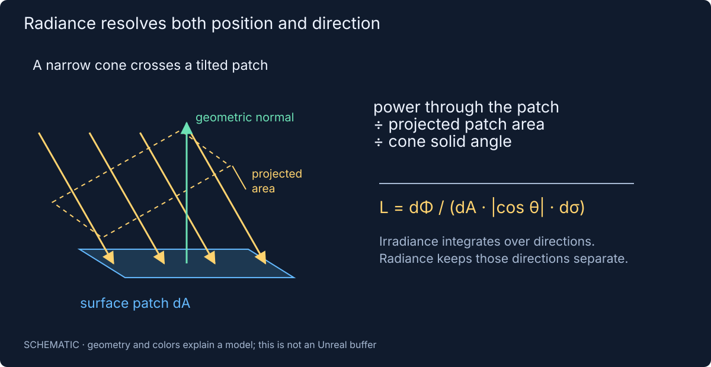
Imagine a small surface patch of area , a small cone of directions, and the power crossing the patch inside that cone. The cone is measured by its solid angle : the area it cuts from a unit sphere. A complete sphere has solid angle ; a hemisphere has . If is the angle between the surface normal and the cone direction, the patch presents projected area . Define radiance by
LaTeX source
d\Phi=L(x,\omega)\,|n_g(x)\cdot\omega|\,dA(x)\,d\sigma(\omega).Radiance therefore has units . It is a density over both position and direction. A radiance cache needs directional information, and a texture holding irradiance cannot substitute for one holding radiance even if both contain RGB triples.
We write for the geometric normal and later use for the material's shading normal. Directions and point away from the interaction: points toward where incident light came from, and points toward where outgoing light goes. A ray we trace toward a light travels opposite to the physical propagation of the incident light. That distinction has to stay visible in diagrams and in code.
How distance changes the apparent size of a wall
In empty space, radiance stays constant along an unobstructed ray. A camera moving farther from a uniformly emitting wall sees the same radiance at each resolved point on the wall. What shrinks is the wall's angular size. It fills fewer pixels and illuminates another surface through a smaller cone. Inverse-square attenuation follows from that change in angular size. Radiance stays constant along each unobstructed ray in empty space.
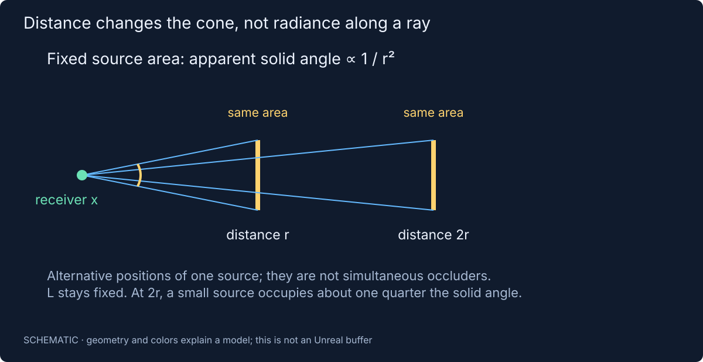
For a source patch at , viewed from , let and . Its projected area is . Projecting it onto a sphere centred at x and dividing by that sphere's squared radius gives
LaTeX source
d\sigma_x=\frac{|n_g(y)\cdot(-\omega_{xy})|}{r^2}\,dA(y).This is the area-to-solid-angle Jacobian. It appears once in an area-light estimator and again when converting a sampling PDF. Applying it in both places without accounting for the measure is a common way to darken a renderer by an extra factor of distance squared.
A numerical check. A small source patch of area 0.01 m² faces a receiver 2 m away. Its solid angle is approximately 0.0025 sr. Give it radiance 100 W m⁻² sr⁻¹ and let the receiver face it with cosine 0.8. Its contribution to irradiance is approximately W m⁻². Move the source to 4 m without changing its orientation: the contribution becomes approximately 0.05 W m⁻². Radiance on the connecting ray remains 100. The approximation is treating the finite source patch as small enough that distance and both cosines are nearly constant across it.
From spectral energy to a displayed pixel
Real surfaces scatter different wavelengths differently. The most explicit version of every equation below carries a wavelength , and a sensor integrates arriving spectral radiance against its spectral response. A production RGB renderer instead operates in a chosen linear color space with fitted material and lighting parameters. Multiplication in these equations is componentwise when using RGB. Decode sRGB texture values to linear RGB before multiplying them.
Unreal also exposes photometric light controls, such as lux for directional-light illuminance. Converting radiometric watts to a photometric quantity requires the spectrum and the eye’s sensitivity at each wavelength. A conversion needs a spectrum or a stated RGB calibration. The analytic examples here use radiometric units, while engine comparisons retain the engine's linear RGB and recorded light/exposure conventions. Labelling a raw RGB texel W m⁻² sr⁻¹ requires a calibration from stored values to physical units. Its quantity, calibration, storage scale, and display transform are four separate descriptions.
A pixel also has a spatial filter, a shutter interval, and a lens aperture. In the general case its measurement integrates over all of them. For our static, fixed-exposure, pinhole examples, we sample locations within a pixel and trace the corresponding rays. This leaves antialiasing and visibility in the integral while removing motion blur and depth of field as extra variables. Tone mapping happens after the linear lighting calculation. We use tone-mapped PNGs for display comparisons.
Generate the primary camera ray
Implement the pinhole explicitly. Let C be its position, F its unit forward direction, R its unit right direction, and U its unit up direction, with an orthonormal camera frame. Let the image be W by H pixels and a = W/H. For pixel column i and row j, choose offsets ξₓ, ξᵧ in [0,1). With horizontal field of view φₕ, generate
LaTeX source
s_x=2\frac{i+\xi_x}{W}-1,\qquad s_y=1-2\frac{j+\xi_y}{H},\qquad
d=\operatorname{normalize}\left[F+s_x\tan(\phi_h/2)R+
\frac{s_y}{a}\tan(\phi_h/2)U\right],\qquad r(t)=C+td.The minus sign in sᵧ converts image rows increasing downward into camera height increasing upward. The corresponding vertical field of view is φᵥ = 2 arctan[tan(φₕ/2)/a]. Sampling different offsets within the pixel changes primary visibility near edges. Averaging the resulting radiance estimates implements the pixel's spatial measurement; we will account for its sampling weight below.
Turn one surface interaction into the rendering equation
At point B on the arcade floor, choose one outgoing direction: toward the camera. Now sweep a small incoming cone over the hemisphere above the floor. Each cone carries irradiance to the point. The material decides how much of that irradiance is scattered toward the camera. Summing those contributions is the local light-transport problem.

The bidirectional scattering distribution function is outgoing radiance per unit incident irradiance for the specified pair of directions. Its units are inverse steradians. For reflection on an opaque surface it is a BRDF; a BSDF also permits transmission. In the first derivation, geometric and shading normals agree. A differential cone contributes
LaTeX source
dL_o(x,\omega_o)=f_s(x;\omega_i\to\omega_o)\,L_i(x,\omega_i)\,|n_g\cdot\omega_i|\,d\sigma(\omega_i).Integrate over the supported incoming directions and add local emission:
LaTeX source
L_o(x,\omega_o)=L_e(x,\omega_o)+\int_{S^2} f_s(x;\omega_i\to\omega_o)L_i(x,\omega_i)\,d\sigma_x^\perp(\omega_i),\qquad
d\sigma_x^\perp=|n_g(x)\cdot\omega_i|\,d\sigma.The sphere notation follows the general scattering formulation. For an opaque, one-sided surface, the BSDF is zero for unsupported pairs and the integral reduces to a hemisphere. The material still determines which sides scatter light. The emitted term exists even if no light arrives; the reflected term exists only because light arrives from somewhere else.
Finding the source of that incoming light introduces recursion. Let y be the first intersection of the ray from x along . In vacuum, . To evaluate lighting at x, we need lighting at y. To evaluate lighting at y, we may need another surface, and so on. A ray that misses the scene instead queries an environment emission function.
A material test with an exact answer. A Lambertian material has , where is its diffuse reflectance. Place it in a prescribed constant incident field . Since , its reflected radiance must be . With and , the answer is 1.2. A sampling implementation should converge to this value independently of how it distributes the samples.
Give glossy reflection a physical model
A polished surface gives much more weight to some incident directions than to others. It sends a concentrated reflection of the environment toward the camera. A rougher surface spreads that response. We can model the unresolved surface as a collection of tiny mirror facets with varying normals. For a pair of reflection directions, the facet that could connect them has normal .

The model needs three factors. describes the distribution of facet normals, normalized by projected area. Fresnel gives the fraction reflected at a facet interface. Masking and shadowing account for facets hidden from the viewer or incident direction. Converting from facet orientation to scattering directions produces
LaTeX source
f_{\rm spec}(\omega_i,\omega_o)=\frac{D(h)F(\omega_i\cdot h)G_2(\omega_i,\omega_o)}{4|n_s\cdot\omega_i|\,|n_s\cdot\omega_o|}.Evaluate the denominator as part of the BRDF, including at grazing angles. Evaluate the supported hemisphere, handle limits stably, then multiply by the incoming cosine in the transport integral. In isotropic GGX, with the slope-width parameter,
LaTeX source
D(h)=\frac{\alpha^2}{\pi\left((n_s\cdot h)^2(\alpha^2-1)+1\right)^2},\quad
\Lambda(\omega)=\frac{\sqrt{1+\alpha^2\tan^2\theta_\omega}-1}{2},\quad
G_2=\frac{1}{1+\Lambda(\omega_i)+\Lambda(\omega_o)}.These equations describe an isotropic GGX distribution and height-correlated Smith visibility. Specific Unreal permutations can use approximations, anisotropic forms, or different layer handling. Perceptual roughness commonly maps to , and the parameter convention matters: confusing r and α changes both the highlight and the PDF.
For a dielectric at normal incidence, . Air to a material with index 1.5 gives 0.04. Fresnel reflectance increases toward grazing angles. The Schlick fit is a useful RGB approximation. Metals require a conductor response; in a metalness workflow, the base color supplies the colored specular reflectance and the diffuse term is suppressed. The metalness blend has to share the available energy between its reflective and diffuse terms.
Energy conservation means that integrating the scattered power over all outgoing directions cannot exceed the incident power for a passive surface. Reciprocity constrains the response when source and receiver exchange roles, subject to the proper refractive-index factors for transmission. A single-scattering microfacet model can lose energy at high roughness because some light would bounce between facets. Multiple-scattering compensation belongs in the material model. More samples converge to whichever BSDF the renderer implements.
Implement a glossy continuation sampler with a checkable PDF
Evaluating a BRDF and drawing a direction from it are different operations. Here is a complete, deliberately simple isotropic GGX proposal. Sample a facet normal h from its projected distribution, whose solid-angle density is pₕ(h) = D(h)(n·h). For two independent uniform variates u,v and positive α, invert that distribution:
LaTeX source
\phi_h=2\pi v,\qquad
\cos\theta_h=\sqrt{\frac{1-u}{1+(\alpha^2-1)u}},\qquad
h=(\sin\theta_h\cos\phi_h,\sin\theta_h\sin\phi_h,\cos\theta_h).Transform h from the local normal frame to world space. Reflect the away-pointing outgoing direction about h to obtain the proposed incoming direction. Reflection changes solid angle by a factor of 4|ωₒ·h|, so the direction PDF must change too:
LaTeX source
\omega_i=2(\omega_o\cdot h)h-\omega_o,\qquad
p_\sigma(\omega_i)=\frac{D(h)|n\cdot h|}{4|\omega_o\cdot h|}.If ωₒ·h is nonpositive or the reflected direction lies below the supported geometric hemisphere, return a zero-contribution event. Redrawing until a sample succeeds conditions the distribution on success and requires a new PDF. This simple sampler wastes work at grazing angles. Sampling the distribution of visible facet normals improves that behavior, but requires its own corresponding PDF; changing only the sample generator breaks the estimator. The PBR microfacet chapter develops that visible-normal distribution.
For a material with diffuse and glossy lobes, choose the glossy proposal with probability q and cosine sampling with probability 1−q. At the generated direction, evaluate the full non-delta BRDF and include every regular proposal in the mixture density:
LaTeX source
p_{\rm mix}(\omega_i)=q\,p_{\rm glossy}(\omega_i)+(1-q)\,p_{\rm diffuse}(\omega_i),\qquad
\beta' = \beta\,\frac{[f_{\rm glossy}+f_{\rm diffuse}]|n\cdot\omega_i|}{p_{\rm mix}(\omega_i)}.Keep q positive for every contributing lobe, and use this same mixture PDF when evaluating the competing BSDF strategy for MIS. A metal can set the diffuse contribution and its selection probability to zero. Exact zero roughness should use a delta event with discrete probability; clamping α to a positive minimum instead defines a slightly rough material. Neither convention should be hidden behind a division by zero.
Check before rendering Sponza. With the viewer along the normal, α = 0.5, F₀ = 0.04, and a constant unit incident field, the downloadable numerical example compares the reflected radiance from this sampled estimator against an independent hemisphere integration of the GGX BRDF. It also checks that the projected facet distribution integrates to one. The two tests distinguish an incorrectly normalized D from an incorrect reflection Jacobian. This proposal belongs to the ideal path tracer. Lumen has its own procedure for refining structured probes.
Derive reflection and refraction within geometric optics
Geometric optics chooses a path with stationary optical length, the integral of refractive index along geometric distance. For a flat boundary, put a source at height hᵢ on one side and a receiver at depth hₜ on the other, with horizontal separation d. If the ray crosses the interface at horizontal coordinate a, its optical length is
LaTeX source
\mathcal S(a)=\eta_i\sqrt{a^2+h_i^2}+\eta_t\sqrt{(d-a)^2+h_t^2}.Set its derivative to zero. Each horizontal displacement divided by segment length is the sine of the angle from the interface normal:
LaTeX source
\frac{d\mathcal S}{da}=\eta_i\frac{a}{\sqrt{a^2+h_i^2}}-
\eta_t\frac{d-a}{\sqrt{(d-a)^2+h_t^2}}=0
\quad\Longrightarrow\quad \eta_i\sin\theta_i=\eta_t\sin\theta_t.
Reflection has equal incident and outgoing angles. With our away-pointing ωᵢ convention, its ideal reflected direction is ωₒ = 2(n·ωᵢ)n − ωᵢ. Refraction is possible only if the computed sin θₜ is at most one; otherwise total internal reflection occurs. A renderer samples the reflected or transmitted event and weights by the event probability as well as the Fresnel response. An ideal direction imposes a delta constraint. A finite glossy lobe spreads energy over a range of directions.
The optical invariant for a ray bundle is étendue, proportional to η²|cos θ|dA dσ. Conservation of power along a lossless bundle therefore conserves L/η² across refractive transport, with the interface's reflected/transmitted power partition handled separately. The earlier statement that radiance is constant along a ray assumes a fixed-index vacuum segment. Radiance transport and importance transport need different adjoint handling at refractive interfaces; the selected BSDF transport mode must own those factors. Our opaque Sponza experiment has no transmitted paths, so its sampler avoids that extra state without changing the opaque derivation.
Normals, texture filtering, and the model the engine actually evaluates
The triangle normal determines geometric sidedness and the area/solid-angle Jacobian. A normal map supplies a different shading frame for the local scattering model. Treating them as interchangeable can create energy and reciprocity errors. A renderer must define how its shading-frame BSDF relates to the geometric measure, and must reject directions that cross an unsupported geometric side. An adjoint, importance-transport implementation needs the corresponding shading-normal correction; the simplified convention here applies to a camera-only renderer.
Texture mip selection is also part of the material query. The primary rasterized point has screen-space derivatives. A distant ray hit needs its own footprint estimate. A card capture evaluates a material from another projection and at another resolution. Even if both paths use the same nominal base-color texture, their filtered material values may differ. When a cache reflection disagrees with hit lighting, the cause can be visibility, directional lighting, or this material-footprint approximation.
Unroll the recursion into paths, then sample them
Follow a possible contribution to B: sun or sky → courtyard stone → arcade floor → camera. The courtyard stone changes both spectrum and direction. The floor changes them again. Visibility decides whether each segment is open. A pixel sums this contribution with every other sequence that reaches the camera, including the shorter and longer ones.

The recursion currently tells us how to compute light leaving one surface if we already know the incident light. A pixel is a measurement of the whole solution. To connect the two, write the measurement, substitute the transport equation into it one scattering event at a time, then introduce a probability distribution over the resulting paths. The path integral itself needs no sampling approximation.
We use Veach's light-to-sensor ordering, : k counts edges, so there are k−1 interior scattering vertices. The derivation below uses finite surfaces in vacuum, ordinary BSDF densities, and a finite-area sensor first. The later foldout handles singular endpoints and specular constraints. Work at one fixed wavelength. RGB approximates the spectrum. The source landmarks are Veach §8.1–8.2, equations (8.1)–(8.11); this chapter adds the substitution steps and numerical examples.
1. Replace a direction by the surface point it reaches
Let denote the union of the surface domains, including emitting and measuring surfaces. A transparent measurement surface lets us observe the field while preserving visibility along the ray. Define . The three-point notation means scattering at x, with incident direction and outgoing direction . Both vectors point away from x; the arrows in the three-point notation follow physical light flow. Also write . This value is radiance leaving x; visibility to z is still a separate question.
Seen from x, a small patch at y subtends a solid angle equal to its area projected perpendicular to the segment, divided by squared distance. The incoming cosine at x is a second projection. Multiplying the two gives
LaTeX source
\begin{aligned}
d\sigma(\omega_{xy})&=\frac{|n_g(y)\cdot(-\omega_{xy})|}{\|y-x\|^2}\,dA(y),\\
G(x\leftrightarrow y)&=V(x\leftrightarrow y)
\frac{|n_g(x)\cdot\omega_{xy}|\,|n_g(y)\cdot(-\omega_{xy})|}{\|y-x\|^2}.
\end{aligned}The first equality describes the locally visible patch. To integrate over all surfaces, include V: one if the open segment is unobstructed, zero otherwise. This selects the first visible surface along each direction. Without V, several walls behind one another would all supply the same ray. The geometric normal belongs in this Jacobian; a normal map cannot change a triangle's apparent area.
Show the complete change of variables, including visibility and unsupported sides
At a fixed x, intersect directions with their nearest surfaces. Away from grazing directions, silhouettes, and other measure-zero boundaries, this is a local change of coordinates between direction and visible surface area. Radiance stays constant along each open vacuum segment. Substituting that relation into the scattering equation gives
LaTeX source
\begin{aligned}
&L(x\to z)-L_e(x\to z)\\
&\quad=\int_{S^2} f_s(x;\omega_i\to\omega_{xz})L_i(x,\omega_i)
|n_g(x)\cdot\omega_i|\,d\sigma(\omega_i)\\
&\quad=\int_{\mathcal M} f_s(y\to x\to z)L(y\to x)V(x\leftrightarrow y)\\
&\qquad\qquad\times |n_g(x)\cdot\omega_{xy}|
\frac{|n_g(y)\cdot(-\omega_{xy})|}{\|y-x\|^2}\,dA(y)\\
&\quad=\int_{\mathcal M} L(y\to x)f_s(y\to x\to z)
G(y\leftrightarrow x)\,dA(y).
\end{aligned}Absolute cosines describe projected area. The BSDF and emission still enforce their supported sides. For an opaque surface, transmission is zero even when the absolute cosine is positive. Distinct, visible endpoints are assumed when evaluating the formula. Coincident endpoints and grazing limits require the appropriate limiting or null-event treatment. In this derivation rays that would escape can terminate on a finite enclosing emitting boundary; an actual infinite environment will instead use a directional endpoint below.
Ordinary solid angle and projected solid angle are different measures. With , the visible-patch identity is . Thus G contains two cosines when converting projected solid angle, but the conversion from ordinary solid angle contains only the cosine at y. This distinction will determine the PDF conversion too.
We have obtained the three-point transport equation:
LaTeX source
\boxed{L(x\to z)=L_e(x\to z)+
\int_{\mathcal M}L(y\to x)f_s(y\to x\to z)G(y\leftrightarrow x)\,dA(y).}It still has an unknown L on its right-hand side. The geometry is now explicit. The equation is still recursive.
2. Write what the sensor measures
Let be the response of measurement j to light arriving at sensor location z from direction ω. It can include the pixel filter, aperture response, and normalization. Its value is zero for rays outside the measurement’s acceptance. The subscript e follows Veach’s convention of treating the sensor as emitting importance backward into the scene.
LaTeX source
\begin{aligned}
I_j&=\int_{\mathcal M}\int_{S^2}
W_e^{(j)}(z,\omega)L_i(z,\omega)
|n_g(z)\cdot\omega|\,d\sigma(\omega)dA(z)\\
&=\int_{\mathcal M^2} W_e^{(j)}(x\to z)L(x\to z)
G(x\leftrightarrow z)\,dA(x)dA(z),\\
W_e^{(j)}(x\to z)&\equiv W_e^{(j)}(z,\omega_{zx}).
\end{aligned}The last definition reverses the endpoint: the arrow x → z follows light, while the sensor response is evaluated at z looking toward x. The last G connects the last scene surface to the sensor. Omitting it would silently change the measurement. We integrate over z because this sensor has finite area. For the pinhole camera below, we condition on the camera ray.
3. Substitute once, then once more
Start at the last scene surface seen by the sensor. Its outgoing radiance is either emitted there or scattered there. The emitted part terminates the expansion. The scattered part asks the same question at one earlier surface. Each substitution adds one integration variable, one BSDF, and one geometry factor. The sensor factor stays at the final endpoint.
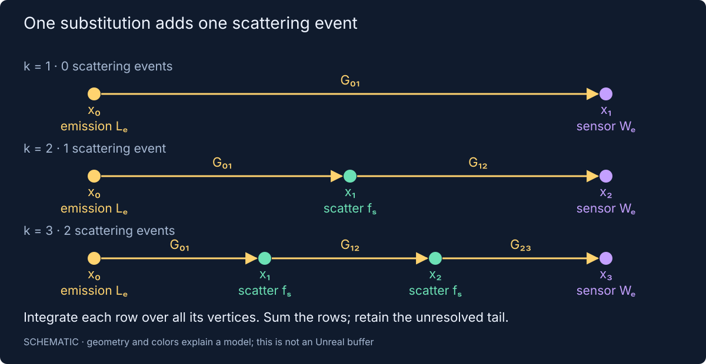
Expand the first substitution without renaming any variables
Use x for the last scene surface, z for the sensor, and y for the newly introduced predecessor. Put the transport equation inside the measurement:
LaTeX source
\begin{aligned}
I_j=\int_{\mathcal M^2}&W_e^{(j)}(x\to z)G(x\leftrightarrow z)\\[-2pt]
&\left[L_e(x\to z)+\int_{\mathcal M}
L(y\to x)f_s(y\to x\to z)G(y\leftrightarrow x)dA(y)\right]\\
&\quad dA(x)dA(z).
\end{aligned}Distribute the outer integral across the bracket, and move factors independent of y inside the inner integral:
LaTeX source
\begin{aligned}
I_j={}&\int_{\mathcal M^2}L_e(x\to z)G(x\leftrightarrow z)W_e^{(j)}(x\to z)dA(x)dA(z)\\
&+\int_{\mathcal M^3}L(y\to x)G(y\leftrightarrow x)f_s(y\to x\to z)\\
&\qquad\quad\times G(x\leftrightarrow z)W_e^{(j)}(x\to z)dA(y)dA(x)dA(z).
\end{aligned}The first term has no unknown radiance and is complete. The second still contains L. Substitute the same equation into that occurrence, now using a new predecessor w:
LaTeX source
L(y\to x)=L_e(y\to x)+\int_{\mathcal M}
L(w\to y)f_s(w\to y\to x)G(w\leftrightarrow y)\,dA(w).This produces one complete term with a single scattering event, plus a remainder with two scattering events and an unresolved radiance at its beginning. Nothing was sampled and no bounce was discarded.
Rename the integration variables independently within each complete term so that the emitter is always x₀ and the sensor is always xₖ. The first three terms are
LaTeX source
\begin{aligned}
I_j^{[1]}&=\int_{\mathcal M^2} L_e(x_0\to x_1)G_{01}W_e^{(j)}(x_0\to x_1)\,dA_0dA_1,\\
I_j^{[2]}&=\int_{\mathcal M^3} L_e(x_0\to x_1)G_{01}f_{012}G_{12}
W_e^{(j)}(x_1\to x_2)\,dA_0dA_1dA_2,\\
I_j^{[3]}&=\int_{\mathcal M^4} L_e(x_0\to x_1)G_{01}f_{012}G_{12}f_{123}G_{23}
W_e^{(j)}(x_2\to x_3)\,dA_0dA_1dA_2dA_3.
\end{aligned}Here , , and only abbreviate the repeated factors. Read the bracketed superscript [k] as an edge count. Thus [1] is directly visible emission, [2] is one surface illuminated by an emitter and seen by the camera, and [3] includes the stone → shaded-floor transfer in the opening example.
4. Account for the remainder before taking an infinite sum
Repeated substitution is exact for any finite number of steps if we keep its remainder. Define the linear transport operator by the integral in the boxed equation, and the linear measurement operator by the sensor integral. Then and . After N substitutions,
LaTeX source
\begin{aligned}
L&=\sum_{m=0}^{N-1}\mathcal T^mL_e+\mathcal T^NL,\\
I_j&=\sum_{k=1}^{N}I_j^{[k]}+R_{j,N},\qquad
I_j^{[k]}=\mathcal C_j\mathcal T^{k-1}L_e,\quad
R_{j,N}=\mathcal C_j\mathcal T^NL.
\end{aligned}The remainder contains paths with more than N edges. Dropping it truncates the series; proving that it tends to zero is a convergence argument, and the two require separate work. In a suitably lossy or escaping scene, successively scattered contributions decay and we obtain the Neumann series . A finite bounce limit truncates the reference calculation. The omitted tail can still carry energy.
Prove the finite identity and state a sufficient convergence condition
The identity for N=1 is the transport equation itself. If it holds for N, replace the final L by :
LaTeX source
\mathcal T^NL=\mathcal T^NL_e+\mathcal T^{N+1}L.This adds one term and gives the identity for N+1. To pass to an infinite sum, one sufficient condition is that the chosen function space has a bounded operator norm , with bounded emission and measurement. Then
LaTeX source
\|\mathcal T^NL\|\le a^N\|L\|\to0,\qquad
|R_{j,N}|\le\|\mathcal C_j\|\,\frac{a^N}{1-a}\|L_e\|.The second bound uses . Contraction can occur over several transfers even when a single step preserves energy. Even a passive system can retain energy indefinitely. A perfectly reflecting closed cavity with sustained emission can lack a finite stationary solution. Shading-normal models that create energy need particular care. The assumptions therefore have to be stated before declaring an inverse of by algebra alone. See Veach §4.4 and Appendix 4.B for the operator framework.
For nonnegative physical contributions and a nonnegative sensor response, rearranging the integrals and summing finite-length contributions is justified by monotone convergence/Tonelli, although the result may still be infinite. For signed reconstruction filters, use absolute integrability to justify the interchange. A finite measurement and correct sampling support remain separate requirements.
Check the expansion against a system with an exact answer
Replace the continuous scene by two uniform radiosity cells. The numbers come from a discrete teaching model. Let cell A emit one unit, cell B emit none, and let the already-integrated material/geometry transfers be 0.2 from B to A and 0.3 from A to B:
LaTeX source
\begin{pmatrix}a\\b\end{pmatrix}
=\begin{pmatrix}1\\0\end{pmatrix}
+\underbrace{\begin{pmatrix}0&0.2\\0.3&0\end{pmatrix}}_{K}
\begin{pmatrix}a\\b\end{pmatrix},\qquad
K^2=0.06\,\mathrm{Id}.Measure b. Only odd numbers of transfers reach B from A, so direct expansion and solving the simultaneous equations give the same result:
LaTeX source
b=0.3+0.018+0.00108+\cdots
=\frac{0.3}{1-0.06}\approx0.3191489362.Keeping paths with at most three transfers gives 0.318: the one-transfer and three-transfer terms. The missing tail is . The executable checks compare the matrix powers, the closed-form solution, and this tail. This is the same principle later used to reason about a lighting cache that performs only a few updates.
5. Turn the family of integrals into one path space
For a fixed edge count k, a path is a point in : choosing the path means choosing all k+1 vertices. Some tuples contain blocked segments, a nonemitting first vertex, or a final vertex outside the sensor; their contribution is zero. We can therefore integrate over a simple product domain that includes invalid paths with zero contribution.
LaTeX source
\begin{aligned}
d\mu_k(\bar x)&=dA(x_0)\cdots dA(x_k),\\
f_j(\bar x)&=L_e(x_0\to x_1)W_e^{(j)}(x_{k-1}\to x_k)\\
&\quad\times\left[\prod_{i=1}^{k-1}f_s(x_{i-1}\to x_i\to x_{i+1})\right]
\left[\prod_{i=0}^{k-1}G(x_i\leftrightarrow x_{i+1})\right],\\
I_j^{[k]}&=\int_{\Omega_k}f_j(\bar x)\,d\mu_k(\bar x).
\end{aligned}The empty BSDF product for k=1 equals one. There are k geometry factors, k−1 BSDF factors, two endpoint responses, and k+1 area differentials. An implementation can audit its factors with this count. The value is a contribution density. An individual regular path has measure zero. A small neighborhood of paths contributes approximately its density times its path-space volume.
Different path lengths have different numbers of variables. Put them in a disjoint union and define its measure by adding the area-product measures:
LaTeX source
\begin{aligned}
\Omega&=\bigsqcup_{k=1}^{\infty}\Omega_k,\qquad
\mu(D)=\sum_{k=1}^{\infty}\mu_k(D\cap\Omega_k),\\
I_j&=\sum_{k=1}^{\infty}\int_{\Omega_k}f_j\,d\mu_k
=\int_{\Omega}f_j(\bar x)\,d\mu(\bar x).
\end{aligned}The disjoint union keeps the length as part of a path's identity. No infinite vertex sequence is included: Ω contains arbitrarily long finite paths. Nor is μ a probability distribution. It specifies what an integral means before we decide where a renderer should spend its samples. Path space keeps the measurement, its integration measure, and its sampling distribution separate.
Separate geometry, material throughput, and the choice of measure
Veach's Appendix 8.A separates several meanings of “throughput.” Write μᵃ for our area-product measure. For a fixed length, the following measures move successively more of the physics into the integration element:
LaTeX source
\begin{aligned}
d\mu_k^s&=\left[\prod_{i=1}^{k-1}f_{i-1,i,i+1}\right]
\left[\prod_{i=0}^{k-1}G_{i,i+1}\right]d\mu_k^a,\\
d\mu_k^p&=L_e\,d\mu_k^s,\qquad
d\mu_{j,k}^m=W_e^{(j)}d\mu_k^p=f_j\,d\mu_k^a.
\end{aligned}The scattering throughput measure μˢ describes the transport capacity of a set of paths for unit emitted radiance. The power measure μᵖ adds the actual emission. The measurement measure μᵐ adds the sensor response. The three measures ask different questions about the same set of paths: what it can carry, what it does carry, and how much it registers in measurement j. Here the response is nonnegative; a signed filter gives a signed measurement measure.
To isolate geometry, Veach defines μᵍ by replacing each interior BSDF with the constant 1/(2π), a normalized uniform scatterer over both hemispheres. Thus
LaTeX source
\begin{aligned}
d\mu_k^g&=(2\pi)^{-(k-1)}\left[\prod_{i=0}^{k-1}G_{i,i+1}\right]d\mu_k^a,\\
I_j^{[k]}&=\int_{\Omega_k}L_eW_e^{(j)}
\left[\prod_{i=1}^{k-1}(2\pi f_{i-1,i,i+1})\right]d\mu_k^g.
\end{aligned}The 2π belongs to this definition; an opaque one-hemisphere uniform reflector instead normalizes with π. Nothing in our scene has been replaced by a uniform material: the compensating factors in the integrand preserve its original response. If , a density pᵃ becomes where hₖ is positive. Both the integrand and density change, so their ratio stays the same.
The estimator is the measurement-per-probability ratio . When both measures have densities with respect to μᵃ, this is the familiar fⱼ/p. Changing coordinates changes the numerical PDF while preserving the physical measurement. The support requirement follows from the same ratio: the measurement measure must assign no contribution to a set that the sampling probability P can never reach.
6. Put a probability distribution on complete paths
A simple estimator chooses a length k with probability qₖ, where , then chooses all vertices with a conditional density pₖ relative to μₖ. This makes the full density on Ω. For a sampled path ,
LaTeX source
\widehat I_j=\frac{f_j(\bar X)}{q_kp_k(\bar X)},\qquad
\mathbb E[\widehat I_j]=\sum_{k=1}^{\infty}q_k
\int_{\Omega_k}\frac{f_j(\bar x)}{q_kp_k(\bar x)}p_k(\bar x)d\mu_k=I_j.Each potentially contributing part of path space must have sampling support. The discrete length probability belongs in the denominator just as much as the continuous vertex density. A practical camera walk usually shares prefixes across several lengths and uses Russian roulette to decide when to stop. Those estimates are correlated, but their expectations still add. The qₖ formula belongs to the derivation above. In the prefix algorithm, the steps of the walk already account for how the length was generated.
Factor a construction density and include all discrete choices
For a fixed k, a camera-grown path can be generated in the reverse order xₖ, xₖ₋₁, …, x₀. By the chain rule, its area density is
LaTeX source
p_k(\bar x)=p_A(x_k)\prod_{i=0}^{k-1}p_A(x_i\mid x_{i+1},\ldots,x_k).Conditioning on a suffix allows the sampler to depend on the outgoing direction, material, and earlier choices. Each factor can depend on earlier choices. Sampling a light identity and then a point on that light introduces its discrete selection probability. Evaluate the mixture density for the resulting event across all eligible BSDF lobes. Roulette survival also changes the probability of reaching a longer path and requires inverse-survival weighting. The later implementations make each of these choices explicit.
A failed connection or an escaping ray with no boundary emission is a zero-contribution outcome. Redrawing until success would condition the density on success and discard the probability of failure. A construction distribution can include this null outcome even though its regular surface-path density then integrates to less than one.
The path integral also permits independent light and sensor subpaths joined by a visibility edge. Multiply the probabilities of the choices that generated the vertices. The deterministic connection adds no random draw. The edge still contributes G to the numerator. Different splits generate the same geometric path with different densities. Comparing their densities in a common measure gives bidirectional path tracing and MIS for the same physical integral.
7. Derive the familiar camera-throughput update
The path integral contains inverse-square falloff at every edge. A camera path tracer instead updates its weight with a BSDF, a cosine, and a directional PDF, without multiplying by inverse squared distance at every hit. The factors missing from that update cancel against the probability of reaching the hit.
Suppose the walk is at x, chooses direction with ordinary-solid-angle density , and hits y first. Probability is preserved under the same geometric change of variables:
LaTeX source
\begin{aligned}
p_A(y\mid x,\ldots)\,dA(y)&=p_\sigma(\omega_{xy}\mid x,\ldots)\,d\sigma(\omega_{xy}),\\
p_A(y\mid x,\ldots)&=p_\sigma(\omega_{xy}\mid x,\ldots)
\frac{|n_g(y)\cdot(-\omega_{xy})|}{\|y-x\|^2},\\
\frac{f_s(y\to x\to z)G(x\leftrightarrow y)}{p_A(y\mid x,\ldots)}
&=\frac{f_s(y\to x\to z)|n_g(x)\cdot\omega_{xy}|}{p_\sigma(\omega_{xy}\mid x,\ldots)}.
\end{aligned}These equalities apply on a sampled visible hit, where V=1. A distant patch contributes less solid angle and is proportionally less likely to be hit. Dividing by its sampling density cancels that geometric falloff in the weight of a successful sample. Distance and occlusion still change which samples succeed. Applying inverse-square attenuation again would count the geometry twice.
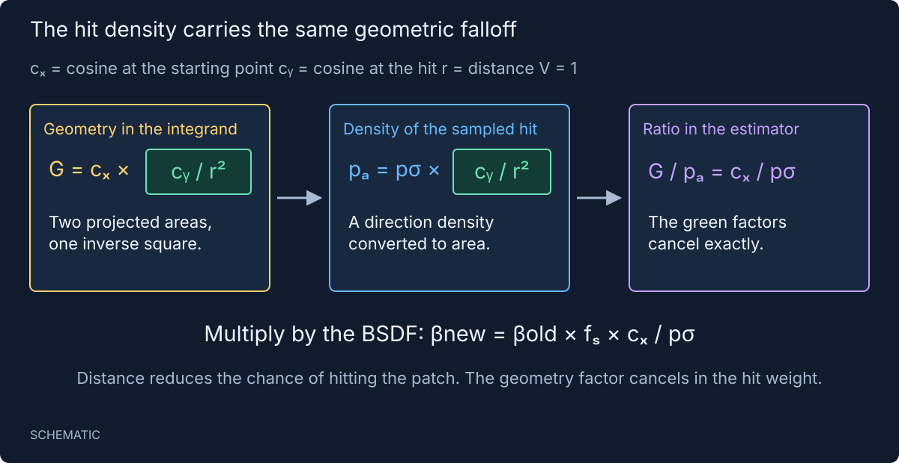
Cancel every edge in a complete camera-generated path
For regular finite endpoints and a fixed k, let the sensor sample have area density and directional density toward xₖ₋₁. At each interior vertex xᵢ, let sample toward xᵢ₋₁, with the already constructed suffix understood. On a visible path, repeated use of the preceding identity gives
LaTeX source
\begin{aligned}
\frac{f_j(\bar x)}{p_k(\bar x)}
={}&\underbrace{\frac{W_e^{(j)}(x_{k-1}\to x_k)
|n_g(x_k)\cdot\omega_{x_kx_{k-1}}|}
{p_A(x_k)p_{\mathrm{cam},\sigma}(\omega_{x_kx_{k-1}})}}_{w_{\mathrm{camera}}}\\
&\quad\times\left[\prod_{i=1}^{k-1}
\frac{f_s(x_{i-1}\to x_i\to x_{i+1})
|n_g(x_i)\cdot\omega_{x_ix_{i-1}}|}
{p_{i,\sigma}(\omega_{x_ix_{i-1}})}\right]L_e(x_0\to x_1).
\end{aligned}That product is the running weight β. Initialize it with the camera weight, multiply one factor at each scattering event, then multiply by the encountered emission. The directions are sampled sensor-to-light, but the BSDF in the numerator still describes light-to-sensor transport. This derivation fixes k and omits roulette; include their actual probabilities if the construction uses them. A next-event light connection weights the final edge using its own endpoint density. The BSDF-ray cancellation applies to the sampled scattering edges.
For a pinhole camera, replace the singular sensor endpoint with the conditional image-plane integral derived below. The numerical value of its weight depends on the declared pixel measurement. Here the normalized uniform pixel sampler gives an initial β of one. For another camera, derive β from its response and sampling density.
Check one edge numerically. Let the starting cosine be 0.8, target cosine 0.6, and distance 2 m. Then G = 0.12 m⁻². For a diffuse material with ρ = 0.6, cosine sampling gives pσ = 0.8/π and pₐ = 0.12/π m⁻². The area expression is (0.6/π) × 0.12 ÷ (0.12/π) = 0.6, exactly the directional expression. Double the distance: G and pₐ both fall by four, and the weight stays 0.6. The cancellation concerns the weight of this sampled edge. Total irradiance also depends on how often a sample reaches the source.
8. Separate path ordering from the direction of computation
The completed path has one physical contribution regardless of whether we discovered it from the camera, from a light, or by connecting both. A material evaluated in the reverse direction still needs the matching transport convention. Sensor importance is an adjoint quantity. The same integral can be evaluated from either endpoint only when the reversed computation uses the corresponding adjoint operator.
Derive the adjoint identity and locate the shading-normal correction
On surface-pair ray space, use the geometric pairing
LaTeX source
\langle W,L\rangle_G=\int_{\mathcal M^2}W(x\to z)L(x\to z)
G(x\leftrightarrow z)dA(x)dA(z).Expanding gives a triple integral. Group the factors by L:
LaTeX source
\begin{aligned}
&\langle W,\mathcal TL\rangle_G\\
&\quad=\int_{\mathcal M^3}W(x\to z)L(y\to x)f_s(y\to x\to z)\\
&\qquad\qquad\times G(y\leftrightarrow x)G(x\leftrightarrow z)dA(y)dA(x)dA(z)\\
&\quad=\int_{\mathcal M^2}L(y\to x)G(y\leftrightarrow x)\\
&\qquad\qquad\times
\left[\int_{\mathcal M}f_s(y\to x\to z)W(x\to z)G(x\leftrightarrow z)dA(z)\right]
dA(y)dA(x).
\end{aligned}The bracket defines . Repeating this adjoint relation yields
LaTeX source
I_j^{[k]}=\langle W_e^{(j)},\mathcal T^{k-1}L_e\rangle_G
=\langle(\mathcal T^*)^{k-1}W_e^{(j)},L_e\rangle_G.The two sides give the same measurement after transposition. The stronger claim would require a self-adjoint operator. The sensor influence travels backward through the original scattering kernel. A reverse-direction sampler must represent that kernel correctly. In fixed-index media with reciprocal geometric-normal BSDFs, exchanging directions is simple. Refraction and shading normals make a naive swap wrong. Veach's general adjoint construction in §4.6 and self-adjoint formulation in Chapter 7 distinguish general transport from formulations with stronger symmetry assumptions.
For a concrete opaque example, suppose an implementation evaluates a reciprocal shading-frame BRDF and multiplies it by the shading cosine. Relative to the geometric projected measure used in this chapter, its effective scattering kernel is
LaTeX source
B(\omega_i\to\omega_o)=f_{\rm sh}(\omega_i,\omega_o)
\frac{|n_s\cdot\omega_i|}{|n_g\cdot\omega_i|}.Multiplying B by the geometric cosine reproduces the implemented shading cosine. For this implementation convention, the integral's fₛ must mean B. Its reverse, adjoint scattering kernel is . Where the denominators and supported responses are nonzero,
LaTeX source
\frac{B^*(\omega_i\to\omega_o)}{B(\omega_i\to\omega_o)}
=\frac{|n_s\cdot\omega_o|\,|n_g\cdot\omega_i|}
{|n_g\cdot\omega_o|\,|n_s\cdot\omega_i|}.This example states its BRDF convention explicitly. Libraries may already include the correction or choose the opposite transport mode. Reject unsupported geometric sides and handle grazing limits. For a camera-only radiance walk the existing shading-cosine update implements B; a light/importance walk needs the corresponding adjoint convention. Refractive-index scaling at transmission is another transport-mode responsibility, separate from this opaque example.
9. Know where ordinary path densities stop being sufficient
An area light, a rough BSDF, and a finite aperture can use the regular area-product derivation directly. A point light, ideal directional light, perfect mirror, or pinhole camera imposes a constraint of lower dimension. Their contribution cannot be represented by a finite-valued density with respect to the same unconstrained area product. An ideal delta event assigns finite mass to a single direction. Any finite ordinary density assigns zero mass to that direction.
Delta events, environment endpoints, and Veach's local-sampling limitation
For an ideal mirror, fixing the outgoing direction fixes the incoming direction. A random ordinary hemisphere sample hits that exact direction with probability zero. A mirror sampler instead chooses the constrained reflection event with a discrete probability and propagates along its determined direction. In a material containing both rough and delta lobes, keep the continuous density and the discrete event mass distinct. A delta event has no competing ordinary-density sample in an MIS comparison. Compute its throughput from the integrated delta event and the probability of selecting it.
A pinhole endpoint similarly has no finite area density. The camera implementation below conditions on that endpoint and samples the pixel's image-plane coordinates. A point source uses a discrete source identity and radiant intensity; an ideal directional source uses its beam direction and irradiance. Describe environment emission with a measure over directions. Each replaces the appropriate endpoint integral and PDF. These choices extend the transport model; they must be declared before combining estimates.
To classify endpoints as carefully as interior scattering, split a regular emitter into a spatial strength and a directional profile, following Veach's equations (8.12)–(8.13):
LaTeX source
\begin{aligned}
L_e^{(0)}(x)&=\int_{S^2}L_e(x,\omega)d\sigma_x^\perp(\omega),\\
L_e^{(1)}(x,\omega)&=\frac{L_e(x,\omega)}{L_e^{(0)}(x)},\qquad
\int_{S^2}L_e^{(1)}d\sigma_x^\perp=1.
\end{aligned}The quotient is used where the spatial strength is positive. Lₑ⁽⁰⁾ is radiant exitance. Sampling positions requires a separately normalized probability distribution. Lₑ⁽¹⁾ is normalized with respect to projected solid angle. A position sampler still needs its own normalization over emitter area. Apply the analogous split to the sensor response. Now a point light has singular spatial support while an ideal directional emitter has singular directional support; these are different constraints. Veach’s full-path classification therefore specifies the endpoints as well as the interior BSDFs.
Some constrained paths remain unreachable by a given family of local samplers even when individual delta events are implemented correctly. Consider an ideal point source seen through a perfect planar mirror by a pinhole camera. A camera ray can obey the mirror law, but its reflected ray hits the exact point source with probability zero. Connecting a randomly selected mirror location to both fixed endpoints will almost surely violate the reflection law. Solving for the mirror point using the reflected virtual source is a different, nonlocal construction: it uses both endpoints to satisfy the constraint.
Veach's full-path notation makes endpoint constraints explicit. In §8.3.2–8.3.4, especially Theorem 8.3, D denotes an unconstrained, ordinary scattering relation such as Lambertian reflection or a finite glossy lobe. S denotes a specular constraint. After extending the classification to the light and sensor endpoints, his local-sampling family requires an adjacent DD connection between sampled vertices. Whether a particular mirror path can be sampled depends on its endpoints and the strategy used. A particular strategy can have stricter support. Narrow finite lights and nearly perfect mirrors replace an impossible singular case with a possible but potentially enormous-variance case.
Inspect support before calling an estimator unbiased. A correct inverse PDF cannot recover a nonzero contribution on a path family that the algorithm never generates. Finite sample noise, missing sampling support, and changing the scene model to roughen a mirror are three different errors.
We can now connect the ideal derivation to Lumen without changing the meaning of a pixel. The primary material supplies the final interior BSDF. Direct-light evaluation estimates paths that reach an emitter after that interaction; longer prefixes contain indirect transport. A cached radiance value at an earlier surface approximates a whole sum of such prefixes. Visibility representations approximate G; cached material and directional lighting approximate other factors; temporal reuse approximates how those quantities evolve. The engineering chapters identify these replacements individually. Implement and test the sampling rules for the ideal integral independently of Lumen.
From the path integral to a Monte Carlo renderer
The target integral specifies the image. A renderer also needs a random construction of paths, the probability of every choice in that construction, and a rule for accumulating the result. The estimator has to account for camera samples, scattering directions, light selection, and path termination; each one changes the estimate.
Consider any integral . Choose z with density p relative to the same measure ν. The random value has expectation , provided p is positive wherever g contributes. The probability in the numerator of that expectation cancels the sampling density in the estimator. Averaging N such values reduces variance while preserving the expectation.
LaTeX source
\widehat I_N=\frac1N\sum_{s=1}^{N}\frac{g(z_s)}{p(z_s)},\qquad
\operatorname{Var}(\widehat I_N)=\frac{\operatorname{Var}(g/p)}{N}The variance expression assumes independent identically distributed samples. Stratified and low-discrepancy samples have different error behavior. Both still require weights appropriate to the sampling measure. The familiar square-root convergence means that four times as many independent samples give about half the standard deviation. That rate limits how much stability more independent paths can add in real time.
Derive the second moment and the ideal importance distribution
For a scalar channel, square the sample value before integrating against its probability. Subtract the square of the mean:
LaTeX source
\operatorname{Var}(g(X)/p(X))=\int\frac{g(z)^2}{p(z)}d\nu(z)-I^2.Unbiasedness needs an integrable contribution and adequate support. Finite variance also requires this second moment to be finite. A proposal that is tiny where g is large can therefore be unbiased yet produce unstable fireflies or even infinite variance. For nonnegative g, the formally ideal density is : every sample then returns I. We cannot generally draw from it because it requires the very visibility and global illumination we are trying to compute, together with their normalizing integral. For signed g, the variance-minimizing density is proportional to |g|, and zero variance is generally lost. RGB strategies usually optimize a scalar proxy and retain the exact componentwise weight.
Practical proposals approximate factors of g. A BSDF proposal follows the scattering lobe. Incoming lighting can peak in a different direction. A light proposal follows source energy and geometry but may ignore the material lobe or visibility. A learned guiding distribution approximates incident radiance. Importance sampling corrects for the actual proposal. Keep the original integrand when weighting a draw from an approximate proposal.
For full paths, substitute g = fⱼ, ν = μ, and include the discrete length choice. The path derivation proved . A camera walk turns this estimator into an incremental computation, where shared camera prefixes allow one walk to estimate many lengths.

For an opaque diffuse bounce, uniform hemisphere sampling has , so its local weight is . Cosine sampling has , giving the constant weight ρ. Generate the latter from two uniform variates :
LaTeX source
r=\sqrt u,\quad\phi=2\pi v,\quad
\omega_{\rm local}=(r\cos\phi,r\sin\phi,\sqrt{1-u}).Rotate that local direction into an orthonormal frame around the surface normal. For the constant-field test in the previous chapter, cosine sampling returns exactly ρL₀ for every sample, apart from floating-point arithmetic. Uniform sampling fluctuates but has the same mean. This makes a strong unit test: a PDF mistake cannot hide behind a plausibly illuminated image.
Change the count or seed. Uniform estimates fluctuate around 1.2. Cosine estimates stay at 1.2 because this particular integrand is proportional to the sampling density. With an occluding column or a small bright source, cosine sampling no longer has zero variance. These values come from the executable toy experiment.
Build a camera walk by conditioning on its prefix
Maintain two RGB quantities. L is the accumulated estimate and β is the weight of the already constructed camera prefix. Before roulette, each additional regular scattering event multiplies β by the BSDF/cosine/PDF ratio just derived. The prefix already accounts for its probabilities; the new sample accounts only for its own conditional distribution.
Let Pⱼ be the pixel's region on the image plane and r(u,v) the pinhole ray through a sample in it. We choose a normalized box-filtered radiance measurement:
LaTeX source
\overline I_j=\frac{1}{|P_j|}\int_{P_j}L(r(u,v))\,du\,dv,\qquad
w_{\rm camera}(u,v)=\frac{1}{|P_j|\,p_{uv}(u,v)}.Uniform sampling has pᵤᵥ = 1/|Pⱼ|, so wcamera = 1. A general normalized pixel filter replaces 1/|Pⱼ| with its filter weight. Lens transmission and vignetting belong in the camera response. Shutter and wavelength sampling require their own time and spectral integration measures and PDFs; our stationary, fixed-wavelength derivation suppresses those variables. This conditional pinhole measurement removes its singular position endpoint from the sampled variables. See the PBR camera interface for the corresponding ray-and-weight separation.
While constructing a walk of variable length, number vertices v₀, v₁, … starting at the camera. Once a complete path has k edges, ; the physical x-ordering remains emitter-to-sensor. At , the outgoing direction toward the camera prefix is . A sampled direction toward has conditional PDF and local weight
LaTeX source
a_d=\frac{f_s(v_{d+1}\to v_d\to v_{d-1})
|n_g(v_d)\cdot\omega_{v_dv_{d+1}}|}{p_d(\omega_{v_dv_{d+1}})},\qquad
\beta_1=w_{\rm camera},\quad\beta_{d+1}=\beta_da_d.For a walk allowed to scatter at most M times, emission encountered at v₁ through gives
LaTeX source
\widehat I_{j,M}^{\rm walk}
=\sum_{d=1}^{M+1}\beta_dL_e(v_d\to v_{d-1}),\qquad
\mathbb E[\widehat I_{j,M}^{\rm walk}]
=\sum_{k=1}^{M+1}I_j^{[k]}.For the conditional pinhole camera, Iⱼ here means the normalized pixel measurement above, with its singular endpoint already removed. The regular finite-sensor version uses the previously derived camera weight. A miss that sees the environment is an emitting boundary event; a terminated or unsupported path contributes zero to subsequent terms. At an emissive surface, accumulate the emission and continue the walk if the surface also scatters.
Prove that the recursively sampled contribution has the correct expectation
Condition on the prefix ending at a surface . Let be an unbiased estimate of radiance from the next surface or boundary, conditional on the sampled direction. Then the tower rule of expectation gives
LaTeX source
\begin{aligned}
&\mathbb E[a_d\widehat L_{\rm next}\mid\text{prefix}]\\
&\quad=\int_{S^2}p_d(\omega)
\frac{f_s(v_d;\omega\to\omega_o)|n_g\cdot\omega|}{p_d(\omega)}
\mathbb E[\widehat L_{\rm next}\mid\text{prefix},\omega]d\sigma(\omega)\\
&\quad=\int_{S^2}f_s(v_d;\omega\to\omega_o)|n_g\cdot\omega|L_i(v_d,\omega)d\sigma(\omega).
\end{aligned}Adding local emission recovers the rendering equation. For a finite-depth walk, begin with the base case “return emission only” and apply this identity backward through each allowed scattering event. This proves the displayed finite sum. Shared prefixes make the different length estimates correlated, but linearity of expectation still permits their sum. An IID variance formula cannot be applied separately to those correlated length terms and then blindly added.
In a random walk the sequence of draws and survival decisions determines the path length. It estimates each reachable prefix's emission and later compensates for roulette survival. Multiplying in both a separate length-selection weight and roulette weights would describe a different construction and generally overcount.
Derive next-event estimation from the last edge
The pure walk is correct on its supported paths, but it may rarely hit a small emitter. At a fixed prefix ending at x, isolate the contribution whose next vertex emits. The rest of the prefix is already represented by β. Integrate that last edge directly:
LaTeX source
D(x,\omega_o)=\sum_\ell\int_{A_\ell}
L_{e,\ell}(y\to x)f_s(y\to x\to z)G(x\leftrightarrow y)dA(y),
\qquad\omega_o=\omega_{xz}.The sum is over finite area emitters for this formula; the following paragraphs add the other endpoint measures. D is a local direct term, while βD contributes to the pixel. If x itself was reached after several earlier interactions, βD is an indirect camera contribution. A next-event estimate at each scattering vertex supplies contributions across many path lengths.
A small bright source occupies few directions. BSDF sampling often misses it. Next-event estimation chooses a light with probability , samples a point y on that light with area density , and tests the segment from x to y. For an area emitter the direct contribution is
LaTeX source
\widehat L_{\rm light}=\beta\,
\frac{L_e(y\to x)\,f_s(x;\omega_{xy}\to\omega_o)\,G(x\leftrightarrow y)}{P_\ell p_A(y)}.Equivalently, convert the light sample to a directional PDF . The estimator then uses . Both forms are the same estimate. Conditional on selecting a point light, its direction is discrete. An area PDF applies to a finite emitter.
Define the light interface before implementing the sun. An ideal directional source specifies a direction ωℓ and beam irradiance E⊥ measured perpendicular to it. Selecting it with probability Pℓ gives
LaTeX source
\widehat L_{\rm directional}=\beta\,
\frac{f_s(x;\omega_\ell\to\omega_o)\,E_\perp\,|n_g\cdot\omega_\ell|\,V_\ell(x)}{P_\ell}.Here Vℓ tests the ray toward the source through the scene. There is no inverse-square attenuation for this ideal parallel beam, and no area PDF. A point source instead supplies radiant intensity Iℓ toward x; replace E⊥ by Iℓ/r². A finite angular sun disk needs a directional distribution over its disk and the corresponding PDF. Unreal's finite source angle and soft-shadow options must therefore be recorded; the delta formula is the zero-angle idealization. Distant lights and point lights require distinct measure contracts even if a renderer exposes them through one sampling interface.
For an ordinary environment distribution, sample ω with directional density pσ and evaluate β fₛ Lenv(ω) |n·ω| V(x,ω)/pσ, also accounting for light-selection probability if the environment is one selected source. A lat-long environment image has unequal solid angle per texel: a PDF built from image brightness must include the spherical Jacobian, proportional to sin θ. This differs from sampling a point on a finite area emitter.
Choose lights and directions without hiding a probability
With Nₗ lights, uniform selection uses Pℓ = 1/Nₗ. Power-weighted selection uses each light's nonnegative importance proxy divided by the sum of proxies. A spatial light tree can make Pℓ depend on x. In every case, the estimator uses the actual conditional selection probability at x. If a heuristic assigns zero probability to a contributing source, another strategy must cover that source with compatible weights. A light can illuminate a receiver from outside the viewport. Its selection probability still belongs in the estimate.
An area sampler may choose triangles proportional to area and then sample barycentric coordinates uniformly. Its complete area density includes the triangle-selection probability. A solid-angle sampler for an area light can avoid the later Jacobian in its interface, but must return its actual directional PDF. For an environment map with u = φ/(2π), v = θ/π,
LaTeX source
d\sigma=2\pi^2\sin\theta\,du\,dv,\qquad
p_\sigma(\omega)=\frac{p_{uv}(u,v)}{2\pi^2\sin\theta}.Brightness times texel solid angle is a useful discrete selection weight. Integrate the solid angle over each finite lat-long row. This also handles the poles, where pointwise division is unstable. A hierarchy or alias table can make sampling cheaper. Both use the same normalization.
Within a material, selecting a diffuse or glossy proposal with probabilities αᵣ gives for a regular direction. These lobe-selection probabilities are unconditional. Selecting the delta branch with probability αδ leaves total probability 1−αδ for regular lobes. Evaluate the full regular BSDF in the numerator. Keep every contributing term in the numerator for each selected proposal. Delta components have event masses in their separate measure. A path-guiding distribution can join the regular mixture, provided its current PDF is evaluable and the mixture retains support.
Combine light and BSDF strategies without counting emission twice
At the current receiver, split next-vertex incident radiance into its emitted part E(ω) and its scattered part R(ω). Let . A light sample estimates ∫FE. A BSDF continuation estimates ∫F(E+R). They overlap on E only. Give that overlap complementary weights:
LaTeX source
\begin{aligned}
\widehat L_o={}&L_e(x,\omega_o)
+w_\ell(\omega_\ell)\frac{F(\omega_\ell)E(\omega_\ell)}{p_\ell(\omega_\ell)}\\
&+\frac{F(\omega_b)}{p_b(\omega_b)}
\left[w_b(\omega_b)E(\omega_b)+\widehat R(\omega_b)\right].
\end{aligned}This expression is for regular source directions with one sample of each kind; discrete light selection is included in the light construction, and singular cases are handled separately. Taking expectations gives ∫FE(wℓ+wb)+∫FR. Since wℓ+wb=1, we recover the original scattering integral. Apply the MIS emitter-hit weight only to the encountered emission. Subsequent scattering contributes separate terms. Multiplying the entire recursive result by wb would incorrectly suppress indirect lighting.
The BSDF continuation is the second strategy: it may hit the emitter on the next segment. Adding both full estimates counts the same direct contribution twice. Multiple importance sampling (MIS) weights them so that their weights sum to one for the same non-delta path. With one sample from each strategy, a common power heuristic is
LaTeX source
w_\ell=\frac{p_{\ell,\sigma}^2}{p_{\ell,\sigma}^2+p_{b,\sigma}^2},\qquad
w_b=1-w_\ell.Derive MIS from the complete-path integral
Let strategy t generate nₜ samples with density pₜ relative to the same path-space measure. Each strategy can construct a path differently. Give its contribution a weight wₜ that is zero where pₜ is zero, and require wherever the integrand contributes. Then
LaTeX source
\begin{aligned}
\widehat I_j&=\sum_t\frac{1}{n_t}\sum_{s=1}^{n_t}
w_t(\bar X_{t,s})\frac{f_j(\bar X_{t,s})}{p_t(\bar X_{t,s})},\\
\mathbb E[\widehat I_j]&=\sum_t\int_\Omega w_t(\bar x)f_j(\bar x)d\mu(\bar x)
=I_j.
\end{aligned}For each path, the weights partition its contribution among the techniques. Choosing gives the power heuristic used above. The balance heuristic uses the first power. Neither can repair a path on which every strategy has zero support.
For a direct connection from the same camera prefix, the prefix density is common to both strategies and cancels in their weight ratio. Converting both final-edge PDFs from solid angle to area multiplies them by the same target-cosine/distance factor, which also cancels. This is why the two directional PDFs suffice in the displayed local formula. Convert area and directional PDFs to a common measure before comparing them. The light-selection probability remains part of the light strategy's PDF. These are specializations of the multi-sample model in Veach §9.2.
An ideal delta light has no competing ordinary solid-angle BSDF sample for that connection, so its direct-light sample uses weight one after the light-selection probability is accounted for. Finite angular or area sources can have competing non-delta strategies and use the PDFs below.
The light-sampled connection receives wℓ. If a BSDF continuation hits an emitter or the environment, evaluate the competing light PDF from the previous vertex and give that emission wb. In this camera-walk estimator, a primary camera hit on an emitter has no competing direct-light sample and receives weight one. An ideal specular continuation also needs the delta-aware rule: an ordinary solid-angle light sample cannot generate the same constrained event. Use the measure of the event actually sampled. A material called “shiny” might have a finite glossy lobe or an ideal specular constraint.

Choose a sampling strategy, then choose the weighting model
An MIS implementation must specify the sample count, the techniques that draw the samples, and the normalization. The common cases below estimate the same integral through different random experiments, so the experiment has to be specified before choosing a heuristic.
Multiple samples: balance and power heuristics, with unequal sample counts
For nₜ samples from each technique, fixed before those samples are drawn, the general estimator above averages within each technique and sums the weighted averages. Sum the normalized technique estimates directly. The balance and power weights are
LaTeX source
\begin{aligned}
w_t^{\rm bal}(x)&=\frac{n_tp_t(x)}{\sum_r n_rp_r(x)},\\
w_t^{\rm pow}(x)&=\frac{[n_tp_t(x)]^\gamma}{\sum_r[n_rp_r(x)]^\gamma},\quad\gamma=2\ \text{commonly}.
\end{aligned}The sample counts are inside the weights as well as in the estimator's 1/nₜ factors. Four light samples and one BSDF sample give different weights from one sample of each. The balance heuristic pools techniques according to their effective sampling density. The power heuristic more strongly suppresses a technique where another has a much larger density, often reducing rare large weights. Neither is the universally smallest-variance strategy for every scene and cost budget. Include source selection in pₜ. The separate nₜ factors count samples.
Veach also describes cutoff and maximum heuristics: keep techniques whose nₜpₜ exceeds a chosen fraction of the maximum, then normalize the retained weights; the maximum case selects only a maximizer, splitting ties consistently. They still need weights that sum to one and vanish outside each technique's support. Aggressive rejection can throw away useful samples, so balance or power is a more straightforward starting point.
With independent samples and fixed weights, the variance is . Correlated subpaths add covariance terms. More samples from an expensive strategy may reduce variance per sample while worsening error per millisecond. Allocation and weighting solve different problems.
One-sample MIS: randomly choose one technique, then use its mixture
Choose a technique T with probability αₜ and draw one sample from pₜ. The joint density, with counting measure for the technique and μ for the path, is αₜpₜ. A valid one-sample MIS estimator is
LaTeX source
\widehat I=\frac{w_T(X)f_j(X)}{\alpha_Tp_T(X)},\qquad
\mathbb E[\widehat I]=\sum_t\int w_t(x)f_j(x)d\mu(x)=I_j.Using the balance weights makes the selected-technique factors cancel:
LaTeX source
p_{\rm mix}(x)=\sum_t\alpha_tp_t(x),\qquad
\widehat I=\frac{f_j(X)}{p_{\rm mix}(X)}.Evaluate every proposal at the generated sample. Mixture-density weighting includes every technique’s selection probability and density in the denominator. Dividing by αₜpₜ with no partition weight overcounts overlapping integrals when several techniques can independently estimate the whole contribution. For fixed mixture probabilities, the balance choice removes variance due to the hidden technique identity. A power weight can reintroduce that variance. See Veach §9.2.4.
One-sample MIS fits when only one continuation ray is affordable. A diffuse/glossy mixture or BSDF/guiding mixture samples its full continuation integral once. By contrast, next-event estimation plus a continuing BSDF ray takes two kinds of samples and weights only their shared emission contribution. If a light proposal replaces a BSDF continuation, the remaining indirect term still needs an estimator.
Bidirectional strategies: evaluate the density of each possible connection
For a path with k edges, choose s vertices from the emitter side and t from the sensor side, with s+t=k+1. For s,t≥1, the connecting edge joins xₛ₋₁ to xₛ. The light-side density uses forward construction PDFs; the sensor side uses reverse construction PDFs. For fixed length and split, a regular finite-endpoint construction has
LaTeX source
\begin{aligned}
p_{s,t}(\bar x)={}&p_{L,A}(x_0)p_{C,A}(x_k)\\
&\times\prod_{i=0}^{s-2}p_{\to,A}(x_{i+1}\mid x_0,\ldots,x_i)\\
&\times\prod_{i=s+1}^{k}p_{\leftarrow,A}(x_{i-1}\mid x_i,\ldots,x_k).
\end{aligned}The first ray on either side uses that endpoint's directional sampling rule; subsequent rays use its appropriate scattering/transport mode. All directional PDFs are converted to area at the newly generated vertex. The connection edge has visibility and G in fⱼ, but no sampled-direction factor in this construction density. Re-evaluate the density for alternative splits of the same completed path, including the correct reverse PDFs, and use their pₛ,ₜ values in MIS.
If all selected splits are evaluated deterministically, use their sample counts in the multi-sample model. If one split is chosen randomly, its selection probability belongs in the joint density and denominator: . Use the one-sample weighting model derived above. The density displayed here is conditional on that choice.
Camera-only emitter hits, light-to-camera connections, and splits with an empty subpath each need endpoint-specific sampling rules. The interior product formula assumes an interior connection. Camera pixel selection, emitter choice, random length selection, and roulette must follow the actual construction. Specular endpoints can make a split impossible; assign that technique zero support and handle the relevant constrained measure. Reusing subpaths produces correlated samples, which preserves the expectation proof but changes variance calculations. Veach Chapter 10 develops these endpoint cases.
Bidirectional sampling can make a light-side caustic easier to discover than a camera-only walk. The local-sampling constraints derived above apply to both ends. Metropolis light transport draws whole paths with a Markov chain. Its target normalization and transition rules require a different derivation from the independent-sample formula.
A complete MIS calculation with two angular cells. Replace the hemisphere integral by two cell contributions g=(0.8,0.2), so the exact answer is 1. Let the light proposal choose the cells with probabilities (0.9,0.1), and the BSDF proposal with (0.2,0.8). For a sample in the first cell, one sample of each strategy gives light power weight 0.9²/(0.9²+0.2²)=0.952941 and BSDF weight 0.047059. Multiply each strategy’s g/p estimate by its weight. The light term uses 0.952941 times the light strategy’s own estimate.
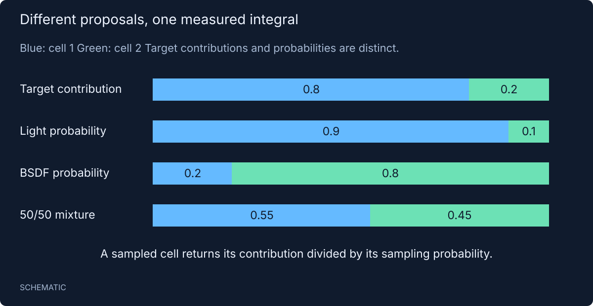
Inspect the exact expectations and compare equal sample budgets
For each technique t and cell i, calculate . Its mean is ; its variance is . Add the two means and, for independent samples, their variances. All entries below come from finite enumeration, with no Monte Carlo noise.
| Estimator | Samples | Expected result | Variance |
|---|---|---|---|
| Light proposal alone, averaged | 2 | 1 | 0.055556 |
| BSDF proposal alone, averaged | 2 | 1 | 1.125000 |
| Independent 50/50 mixture samples, averaged | 2 | 1 | 0.126263 |
| One light + one BSDF, balance MIS | 2 | 1 | 0.063769 |
| One light + one BSDF, power MIS | 2 | 1 | 0.060506 |
Here light-only sampling happens to win. MIS can help as the integrand changes. For this target a single technique may already match the integrand well enough to give lower variance. Changing the cell contributions can reverse the ranking. The downloadable experiment verifies the means and variances and shows that summing two unweighted full estimators would instead have expectation 2.
Replace a fixed cutoff with a compensated random tail
Russian roulette handles long paths. If a path survives with probability q, divide its surviving weight by q: . This removes work without changing the conditional expectation. A fixed maximum depth removes all longer paths and introduces truncation bias. For refractive paths, include refractive-index scaling in the survival heuristic so useful paths survive temporary changes in radiance scale. Our opaque examples avoid that extra state.
Derive the infinite-length estimator and its termination conditions
Let Bᵣ be the survival indicator at construction vertex vᵣ, with conditional survival probability qᵣ>0. Let indicate that is reached through roulette. Emission at has the compensated prefix
LaTeX source
\beta_d^{\rm RR}=w_{\rm camera}
\prod_{r=1}^{d-1}\frac{B_ra_r}{q_r},\qquad
\widehat I_j^{\rm RR}=\sum_{d=1}^{\infty}
\beta_d^{\rm RR}L_e(v_d\to v_{d-1}).For each decision, conditional on its prefix, . Repeated conditional expectation removes the survival factors from the mean of every length term, recovering the same path integral. This proof requires no qᵣ factor for the emission already accumulated before that decision. The product is computed incrementally; a terminated walk never constructs its hypothetical future vertices.
To ensure finite expected work, a sufficient practical rule is beyond a finite initial depth. Then the expected remaining count is bounded by a geometric series. A positive lower bound limits single-step compensation. A finite variance bound for the whole renderer needs further assumptions. Roulette increases variance for a fixed number of initial walks; the saved work is what pays for more walks. A hard emergency depth cap restores truncation bias and should be reported.
With MIS, keep the placement of roulette explicit. The implementation below tests roulette after accumulating current emission and before both light sampling and BSDF continuation. That common survival factor scales both competing final-edge constructions and cancels in their local MIS ratio. Changing roulette for one strategy requires re-deriving its probability or partition weights.
The complete estimator accumulated by one walk
Let include the survival and scattering factors of the prefix before the current vertex's roulette decision. Let be the emission seen on arrival at , and the unweighted one-light estimate at that vertex, including source selection, visibility, and its measure conversion. The estimator implemented below is
LaTeX source
\widehat I_j^{\rm PT+NEE}
=\sum_{d\ge1}\left[
\beta_d w_{b,d}^{\rm hit}E_d
+\beta_d\frac{B_d}{q_d}w_{\ell,d}\widehat D_d
\right],\qquad
\beta_{d+1}=\beta_d\frac{B_d}{q_d}a_d.The first hit has emission weight one; later regular emitter hits use the competing light PDF from the previous vertex. A miss contributes environment emission and ends the walk, with no direct term at that boundary. Keep the emission weight local to that term. Later scattered light contributes through β. Averaging independent complete walks gives . Under the support, integrability, and termination conditions stated above, its expectation is the ideal pixel measurement. A finite bounce cap, clamping a sample's radiance, or substituting a biased cache changes that statement.
Implement the estimator with explicit accumulation rules
This pseudocode uses one aggregate environment and identifiable area emitters, plus sampled point/directional lights. Ideal point/directional lights have no intersectable proxy geometry; they enter through their declared light-sampling interfaces. Scene and proposal distributions remain fixed during one walk. f_geo is the full regular BSDF relative to the geometric projected measure, including the convention needed for a shading-normal material. A regular BSDF sample returns weight = f_geo * abs(n_geo·wi) / pdf_sigma_total. Both pdf_sigma_total and the evaluation query include the full regular mixture with unconditional lobe-selection probabilities. A delta sample instead returns its integrated event weight divided by its event-selection probability. Neither interface substitutes an ordinary density for a delta mass.
A light sample returns direction, target, and incident_over_pdf. For a regular source this is its incident emitted radiance divided by P_light * pdf_sigma; the same product is returned as pdf_sigma_total. For a directional delta it is E⊥/P_light, and for a point delta I/(r² P_light). Visibility is tested separately. The matching light_pdf operation evaluates that same construction for an emitter reached by a BSDF ray.
power(p, q):
# Called only for two densities in the same regular measure.
if p == 0 and q == 0: fail("MIS called without sampling support")
return p*p / (p*p + q*q)
L = 0
beta = camera_sample_weight
ray = generate_camera_ray(pixel_sample)
previous = none
for depth = 1, 2, ...:
hit = intersect_nearest(ray)
if hit exists:
endpoint = hit.emitter
E = surface_emission(hit, toward = -ray.direction)
else:
endpoint = aggregate_environment
E = environment_radiance(ray.direction)
if E != 0:
if previous is none or previous.event_is_delta:
w_hit = 1
else:
p_light = light_pdf(previous.position, endpoint, ray.direction)
w_hit = power(previous.bsdf_pdf_sigma, p_light)
L += beta * w_hit * E
if hit is absent: break
material = evaluate_material(hit, ray_footprint)
wo = -ray.direction
# Current emission is already counted. Gate BOTH estimators below.
q = 1 if depth < roulette_start else clamp(max_component(beta), 0.05, 0.95)
if random() >= q: break
beta /= q
if material.has_regular_scattering:
light = sample_one_light(hit.position, random_sample)
if light.valid:
f = material.f_geo(wo, light.wi)
c = abs(dot(hit.geometric_normal, light.wi))
p_bsdf = material.pdf_sigma(wo, light.wi) # full regular mixture
w_light = 1 if light.is_delta else power(light.pdf_sigma_total, p_bsdf)
if visible_segment_or_environment(hit, light):
L += beta * w_light * f * c * light.incident_over_pdf
bsdf = material.sample(wo, random_sample)
if not bsdf.valid or bsdf.weight == 0: break
beta *= bsdf.weight
previous = {position: hit.position,
bsdf_pdf_sigma: 0 if bsdf.is_delta else bsdf.pdf_sigma_total,
event_is_delta: bsdf.is_delta}
ray = spawn_offset_ray(hit, bsdf.wi)
return LA nonemitting hit returns E=0. A surface's emission is evaluated toward the previous vertex, while the environment map is queried along the ray's forward direction toward the sky. A valid regular sample must have positive total PDF; null light/BSDF samples remain zero outcomes. Redrawing until success would require conditional PDFs. The light PDF queried at an emitter hit includes its selection probability and is evaluated from the previous receiver using the sampling state that applied there. When only one technique supports an endpoint, the other has PDF zero and the supported technique gets weight one. If both PDFs are zero for a contributing event, the implementation has a gap in its sampling support and the weight is undefined.
The offset in spawn_offset_ray prevents numerical self-intersection. Base it on intersection error and geometric sidedness; a large constant offset can leak through thin walls. Trace shadow segments to just before their sampled emitter, accounting for intersection uncertainty. A BVH finds the same nearest valid surface with fewer intersection tests. It must respect sidedness and alpha masks. None of these operations justifies discarding off-screen lights or geometry in the ideal renderer.
Stratifying pixel samples or using randomized low-discrepancy sequences can improve coverage without changing these weights. Store independent dimensions for camera, light choice, light coordinates, BSDF choice, BSDF coordinates, and roulette. Reusing the same number for unrelated choices can change the intended joint distribution. For error bars, apply the IID variance formula to independent complete walks or independent randomized replicates. Within a walk or sequence, samples can be correlated.
Trace the numbers. A cosine-sampled diffuse interaction with reflectance 0.6 changes β from 1 to 0.6. A second with reflectance 0.5 changes it to 0.3. If roulette then survives with q=0.4, the surviving path carries β=0.75, and otherwise contributes zero. The expected weight remains 0.3. If the next event is an emission value of 8 with no competing strategy, its expected camera contribution is 2.4. The example checks the arithmetic for a path weight. Computing a Sponza pixel also requires scene visibility and the probabilities of sampling its paths.
The executable numerical examples check the Jacobian, diffuse integral, PDFs, MIS partition, roulette, and cache iteration introduced in this article. The small CPU path tracer remains available to step through a complete renderer. Sponza's image reference is rendered by Unreal's path tracer with the same scene setup; the two renderers serve different tests.


These are real Unreal path-tracer accumulations of the imported atrium, with eight maximum bounces and denoising disabled. The capture reads the accumulated sample index before and after each screenshot, giving the observed counts above. Both images use the same materials, captured-scene SkyLight, sun, fixed exposure, and display transform. Reference-atmosphere tracing is disabled so that the path tracer retains the scene's SkyLight illumination. The renderers share the same lighting inputs. Their material, visibility and atmosphere implementations can still differ.
The remaining grain carries information. Look for features that persist across samples before comparing them with Lumen. A stable colored bounce on the arcade stone should survive increased sampling. Use the larger accumulation to locate those structures, then return to the smaller one to see which features were still uncertain. The sample-counter and runtime records retain the accepted captures and the rejected attempt whose accumulation reset during capture.
Give the estimator a frame budget
A path tracer can render Sponza without cards or probes. At 1920×1080, with 64 paths per pixel and an average of four traced segments per path, it would issue about 531 million intersection queries before adding shadow connections. That is a hypothetical workload. At one path per pixel the cost falls, but noise flickers in the shaded arcade and in narrow glossy reflections.
Neighboring pixels often land on the same patch of stone. Rays from elsewhere in the arcade can hit the same courtyard wall, and a stationary wall may receive similar light in the next frame. A rough surface also averages light over a broad range of directions. Cache material and lighting where rays hit a surface. Near a receiver, nearby shading points can share measurements of incoming directional light. Across frames, a previous measurement can save another sample. Each kind of reuse needs a test for when the old value still applies.

Keep the contributions separate before approximating them
At the visible point, split the BSDF into diffuse and glossy components, . Let A be a set of explicit analytic lights, such as the sun and a rectangular test light, whose direct contributions the direct-lighting path evaluates. Let hold their direct incident field and hold the remaining incoming field. R includes light reflected from surfaces, and it can also include direct sky and emissive-mesh connections. Then
LaTeX source
L_o=L_e+
\underbrace{\int(f_d+f_g)L_{i,A}\,d\sigma_x^\perp}_{\text{explicit direct lights}}
+\underbrace{\int f_d L_{i,R}\,d\sigma_x^\perp}_{\text{remaining diffuse}}
+\underbrace{\int f_g L_{i,R}\,d\sigma_x^\perp}_{\text{remaining glossy}}.Once the source sets are defined, this partition is exact. Approximation begins with how each term is evaluated: rasterization supplies the primary visible point, deferred lighting and shadow maps handle explicit direct lights, and Lumen estimates and reconstructs much of the remaining illumination. “Direct” and “indirect” name renderer responsibilities. Counting scattering vertices requires following the path. Lumen, for example, can supply a direct sky contribution at the primary surface.
Follow sunlight that first hits courtyard stone y and then illuminates arcade floor x. The direct pass at x handles light arriving directly from the source. Light reflected from y reaches x along another path, so the cached direct lighting at y can supply the indirect term at x. Removing it because “direct lighting was already added” would delete real reflected light. Conversely, if an emissive mesh and an analytic light both represent the same lamp's energy, the scene author must define which one owns that energy; two independent emitters can double the physical source before any estimator is evaluated.
Which changes are unbiased, and which change the answer?
Importance sampling and correctly weighted roulette change the distribution or amount of work but preserve the intended expectation. Spatial interpolation, directional compression, simplified geometry, temporal clipping, and diffuse secondary-hit shading generally change the estimated field. More samples reduce Monte Carlo noise around the approximated field. Errors introduced by the representation can persist at convergence.
The exact transport problem can be written as , where b is emission and T is one scattering-and-propagation operation. Expanding it gives , the sequence of paths derived earlier. A finite cache stores coefficients c; let P project a field into those coefficients and R reconstruct it. One explanatory cached update is
LaTeX source
c_{t+1}=P b_h+P T_h R c_t,\qquad \widetilde L_t=R c_t.The subscript h indicates represented geometry and material. The global matrix and uniform Jacobi iteration are mathematical tools for examining the approximation. The actual system updates selected pages and probes with different histories and budgets. Still, the model exposes three distinct errors: a wrong represented source, a wrong transport/reconstruction operator, and an incomplete or stale update.
Derive a bound on the approximation error
For a stationary linear teaching model, write the reconstructed fixed point as L̃ = b̃ + T̃L̃, with b̃ = RPbₕ and T̃ = RPTₕ. Subtract the exact equation L = b + TL and collect the unknown difference:
LaTeX source
(I-\widetilde T)(\widetilde L-L)
=(\widetilde b-b)+(\widetilde T-T)L.If the chosen operator norm satisfies ‖T̃‖ < 1, its inverse expands as a convergent geometric series. Therefore
LaTeX source
\|\widetilde L-L\|\le
\frac{\|\widetilde b-b\|+\|\widetilde T-T\|\,\|L\|}{1-\|\widetilde T\|}.The numerator separates changed sources from changed transport, and the denominator shows why repeated interreflection can amplify a local error. The bound assumes a stationary linear operator. Production clamping, visibility decisions, motion and adaptive scheduling limit how far it can predict Lumen’s error. It describes what a convergence test can establish under a precisely stated model. At an unfinished iteration, add the difference between its current state and this approximate fixed point; stochastic sampling also contributes variance around the update.
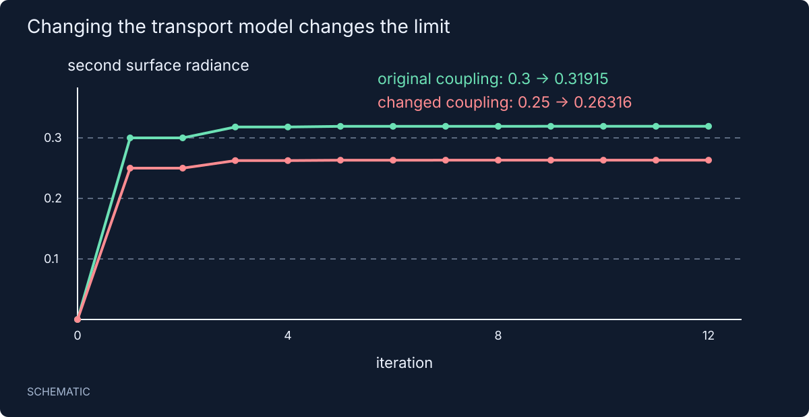
Two surfaces are enough to distinguish the errors. Let and . Starting from (1,0), successive substitutions give (1,0.3), (1.06,0.3), (1.06,0.318), and converge to approximately (1.06383,0.31915). If a visibility or material approximation changes the second coefficient to 0.25, the converged result becomes approximately (1.05263,0.26316). Both iterations stabilize; only the first solves the original pair of equations.
A useful debugging order follows from this. Establish that the queried geometry and source exist, then check the meaning and exposure of the stored values, then inspect interpolation and history validity. Only after those contracts are correct should you read a sample-count increase as a convergence test.
Start at update zero, then advance. Each step uses both values from the previous step, so this is a Jacobi iteration. Switch the coupling to 0.25: the sequence still converges, but to a different answer. Additional iterations converge to the toy model’s altered transport solution. Actual Lumen has interleaved updates and selected page budgets.
Source-level starting values: actual captures must record their runtime overrides
| Representation | Inspected starting value | What consumes the budget |
|---|---|---|
| Screen probes | 16-pixel downsample factor; 8×8 directional trace cells; adaptive allocation fraction 0.5 | Receiver count × directional work, plus refinement, filtering and reconstruction |
| World radiance cache | 48³ logical grid cells per clipmap; 32×32 directional probe resolution; 100-probe update budget; one mip | Physical probes on demand, with selected probes updated each frame |
| Card radiosity | Probe spacing 4 card texels; 4×4 hemisphere trace pattern; four SH coefficients | Selected card regions, ray traces and irradiance reconstruction |
| Dedicated reflections | Maximum roughness 0.4; fade length 0.1; maximum ray intensity 40 | Classified receiver tiles, traced rays, hit shading, resolve and history |
These are source defaults. Read the active settings for a given run and time the resulting work to measure performance. Scalability, post-process quality, and mode-specific adjustments can change the effective values. In an illustrative 1280×720 view at 16-pixel spacing, the uniform grid has 80×45 = 3600 probes. At 64 directions each, that is 230,400 direction slots before adaptive probes and branch-specific work. The extra 50% provides capacity for up to 1800 adaptive probes. The active count depends on demand. Compaction counts show the work actually dispatched.
The relevant defaults are in screen-probe placement and resolution, radiance-cache budgets, and card-radiosity sampling. Keep a memory and dispatch ledger with a real implementation from its first working version.
What the deferred frame stores at a visible surface
A map of the complete frame
The map names four shared inputs: A is the camera's stored surface interaction, B is the geometry available to secondary rays, C is cached outgoing surface radiance, and H is retained state. The three primary-view branches answer different parts of the same rendering equation: explicit direct-light connections, the remaining diffuse field, and the remaining glossy field. Their contributions meet in scene-linear composition before display processing.

Two boundaries matter here. Primary VSM projection supplies shadow visibility for deferred direct-light BRDF evaluation, while card direct lighting has its own secondary-surface shadow queries. The captured card schedule also combines lighting both before and after radiosity. The first combine exposes fresh direct illumination and retained indirect illumination to the radiosity traces; the second incorporates their newly integrated indirect result. Neither the cache diagram nor its feedback arrow means that every frame advances exactly one light bounce.
The captured invocation shows how dependency and timing differ. Card lighting and both combines occur before the base pass, while screen-probe integration and reflection reconstruction occur before the recorded primary VSM projection and deferred sun-light pass. The later diffuse-indirect composition consumes their results. The captured-frame explorer and evidence keep the individual passes and bindings; the map gives the system-level reading order.
The yellow branch leads to the dedicated Direct lighting chapter; the blue glossy branch leads to Reflections. Those chapters cover each branch's inputs, sampling, intermediate state, and contribution to the final image.
Build a dependable first interaction before adding a global-illumination cache. A camera path tracer finds that interaction by tracing a ray; a deferred renderer rasterizes visible triangles into depth and material records. At a covered pixel, both methods try to identify the surface the camera sees. Rasterization amortizes this work over coherent screen samples, so many lighting operations reuse the result.
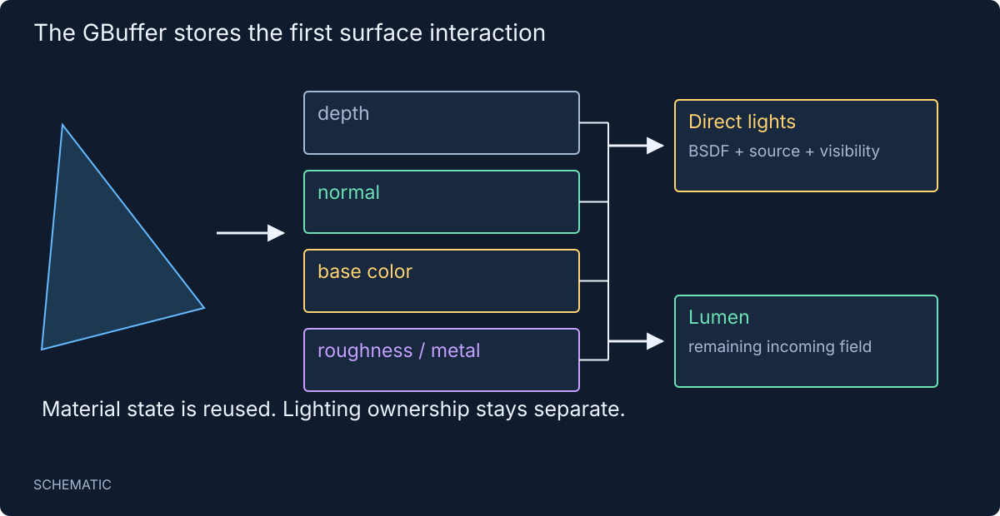
Construct and decode the GBuffer
A minimal implementation stores depth, a shading normal, diffuse or base color, roughness, metallic, specular or F₀ information, a shading-model identity, and velocity for later reprojection. Depending on the platform and shader permutation, the base pass can accumulate emissive output directly into SceneColor. Decode channels using the producer’s layout. Screenshot colors depend on the display mapping.
Material evaluation runs before the GBuffer write. Vertex attributes and interpolated texture coordinates enter the compiled material program; texture samples, constants, and graph operations produce material properties, and tangent-space normals are transformed into the shading frame. Opaque coverage is selected with the depth test. Masked geometry must apply its opacity decision in every representation that needs consistent visibility. Texture normalization, sRGB decoding, tangent handedness, normal normalization and roughness remapping all affect the computed result.
Depth usually starts in device coordinates. Convert it before interpreting a difference in metres. Reconstruct the point with the appropriate inverse view-projection transform and homogeneous divide. In Unreal, reversed depth, translated-world coordinates, view-rectangle offsets, temporal jitter, and large-world origins all affect the result. In schematic form:
uv = (pixel + sample_offset - view_rect_min) / view_rect_size
clip = make_clip_position(uv, device_depth, projection_convention)
position_h = inverse_view_projection * clip
position = position_h.xyz / position_h.w
normal = decode_and_normalize_gbuffer_normal(pixel)
material = decode_material(pixel, shading_model_id)
outgoing = normalize(camera_position - position)A half-resolution lighting buffer must map back through the correct full-resolution view rectangle. A shifted depth lookup can look like bad GI at edges when the real problem is addressing. The reference's decoded GBuffer records preserve the actual channel layout and pixel arithmetic of the instrumented room frame.
Decode three actual Sponza interactions
Return to A and B on the foreground floor and C on the polished gold sphere. These images decode the final scene invocation of one captured GPU frame, using its 1280 × 720 view rectangle. The backing textures are 1280 × 888, so the unused bottom rows are excluded. The four pictures ask different questions about the same interaction.
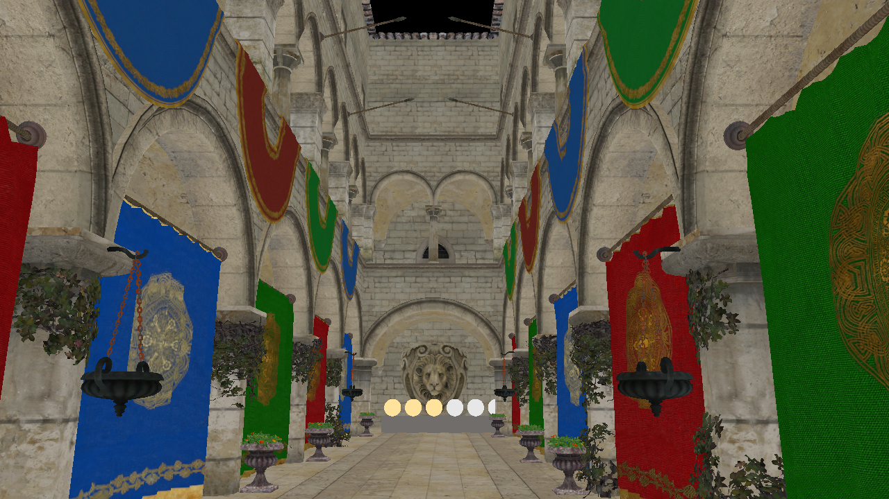


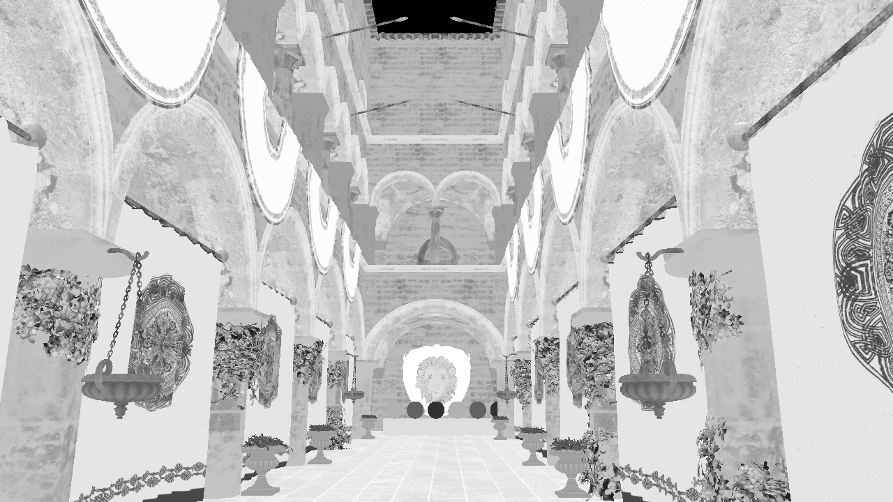


The normal image maps each normalized component with 32 + round(223(N/2 + 1/2)), and roughness uses 32 + round(223r). Black is reserved for invalid pixels, which distinguishes missing geometry from a valid zero channel. BaseColor is decoded to linear RGB and displayed with the sRGB transfer function, with code 0 reserved for invalid pixels. Each view uses the data display described in its caption. The figure manifest records every mapping and range, including separate metallic and validity images.
Pixel addresses, material codes, and reconstructed positions
| Quantity | A: lit floor | B: shaded floor | C: polished gold |
|---|---|---|---|
| Pixel (x, y) | (500, 680) | (720, 680) | (626, 587) |
| World position, cm | (−19.7181, −120.3138, −2.0052) | (−19.7199, 69.4282, −2.0050) | (828.4255, −24.0599, 61.3765) |
| Forward depth, m | 7.88305 | 7.88303 | 16.28969 |
| World shading normal | (0.01466, −0.08700, 0.99610) | (0.00489, 0.00684, 0.99996) | (−0.98961, 0.12993, 0.06155) |
| Linear BaseColor | (0.11444, 0.09531, 0.06848) | (0.24228, 0.20156, 0.14413) | (1, 0.76815, 0.33716) |
| GBufferB bytes in memory, B G R A | 240, 255, 0, 177 | 228, 255, 0, 177 | 20, 128, 255, 161 |
| Roughness | 240/255 | 228/255 | 20/255 |
| Metallic / specular parameter | 0 / 1 | 0 / 1 | 1 / (128/255) |
| Shading model | DefaultLit | DefaultLit | DefaultLit |
The capture uses the legacy GBuffer route: Substrate is off, GBufferFormat is 1, static lighting is off, and GBufferC alpha holds AO. For example, C's GBufferC memory bytes are (157,227,255,255), so the RGB codes are (255,227,157), which decode to the linear gold color above. The two floor points are different texture samples: their color and normal differences must remain in any numerical lighting comparison.
The full receiver record retains all sampled bytes, packed words, material channels, neighboring-pixel checks, formats, row pitches, hashes, and producing/consuming versions. GBufferA/B/C/D were written at pass 697, GBufferF at 700, and the direct-light consumer is pass 842; the consumed GBuffer and depth copies are byte-identical to the recorded producers. The view record gives the inverse transforms and both independent world-position reconstructions. Unreal's depth linearization yields centimetres in this scene; divide by 100 for the metre values above. The view's PreExposure is 1/2048, while these material and geometric channels have no exposure factor.
Read the material before the light. Pick courtyard stone and the metallic test sphere. Both may look bright in the base-color view. They should differ in the metallic view; the polished sphere should be low in the roughness view, and its smooth normal gradient should differ from the stone's mapped detail. If these inputs are wrong, changing Lumen's ray budget cannot produce the intended reflection.
Direct lighting and the shadows each light casts
Start at courtyard point A. A direct connection joins the light to A and then A to the camera, without another scattering surface between the light and A. The GBuffer already supplies A's position, normal, material, and outgoing camera direction. Direct lighting adds the other half: which lights reach A, how much incident energy they supply, whether geometry blocks them, and how A scatters that energy toward the camera.
A direct connection says nothing about the BRDF. The same analytic light can produce both a broad diffuse response and a narrow specular highlight. A reflection of a sunlit wall, by contrast, contains a secondary surface interaction and belongs to the scene-reflection path. Without that separation, a direct highlight can be added once by deferred lighting and again by an overlapping reflection estimate.
Turn each light type into an incident-light query
For each relevant analytic light, determine its direction or finite-source distribution, radiometric scale, attenuation and support, visibility, and the material response. The point-light ideal is proportional to intensity divided by squared distance. Engine attenuation also includes finite influence and source-shape conventions. A finite rectangle subtends an angular region; evaluating it requires an integral or an approximation such as the engine's area-light treatment. A finite emitter can share a point light’s center and still cover a range of directions at the receiver.
For ideal point and directional lights, let denote the incident irradiance on a plane perpendicular to the light direction at x. For a point source of radiant intensity , it is . For an ideal directional source, it stays constant with receiver distance. With the common geometric/shading normal n used in our first model, the owned direct contribution is
LaTeX source
L_{\rm direct}(x,\omega_o)=\sum_{\ell\in\mathcal L_D}
f_s(x;\omega_\ell\!\to\!\omega_o)\,
E_\ell^\perp(x)\,\max(0,n\cdot\omega_\ell)\,V_\ell(x).Use the directional delta source’s integrated weight in this expression. A spotlight additionally restricts the angular support and varies intensity within its cone. A production local light also has a finite influence bound and source-shape parameters. A finite area source returns to the area/solid-angle integral derived earlier: different source points can have different directions, distances, BRDF values, and visibility. Replacing that integral with one center sample changes the target, especially near large sources.
Check the multiplication before building the shadow system. Give a Lambertian receiver reflectance 0.6 and zero emission. Let one prescribed light supply perpendicular irradiance 10 W m⁻², with incident cosine 0.5 and visibility estimate 0.75. The irradiance reaching the surface is 10 × 0.5 × 0.75 = 3.75 W m⁻². Its outgoing diffuse radiance is (0.6/π) × 3.75 ≈ 0.7162 W m⁻² sr⁻¹. A specular material adds the corresponding specular-BRDF response to this same owned source. This analytic example tests units and factor placement; the Sponza values below use Unreal's recorded RGB calibration.
Evaluate the material at the receiver
A basic direct-light implementation can start with point and directional lights, exact shadow rays, and the diffuse-plus-GGX BSDF already derived. Then replace only the visibility query with a shadow-map query. That gives a controlled before/after test: the BSDF and source stay fixed while the visibility representation changes. Tiled or clustered light lists avoid evaluating every scene light at every pixel. These lists are culling structures, so a false negative loses illumination; a conservative false positive merely costs work.
for light_id in lights_overlapping_pixel_or_cluster:
light = decode_light(light_id)
incident = evaluate_light_geometry_and_radiance(light, position)
visibility = evaluate_shadow(light, position, normal)
brdf = evaluate_diffuse_plus_specular(material, incident.wi, outgoing)
scene_color += brdf * incident.radiometric_factor * visibilityThe factor in this pseudocode includes the incident cosine and whichever source integration convention the chosen light uses. Check the function’s return convention. Some production functions already include part of the lighting integral. Its units and cosine placement must be documented before multiplying it by another helper.
In a deferred implementation, decode the shading-model identity before interpreting its material payload. A Default Lit metal uses its base color primarily as colored specular reflectance; a dielectric retains a diffuse color and its interface reflectance. Compute the light/view half-vector and the selected distribution, visibility, and Fresnel terms in the same normalized shading frame. The source may fold the microfacet denominator into a visibility helper and may integrate a finite source analytically. Multiplying a textbook GGX denominator around that helper a second time is a different BRDF. The earlier microfacet derivation supplies the target; the selected shader supplies its implementation convention.
Light culling and light evaluation are also separate. A light volume, screen rectangle, tile list, or cluster list decides which receivers might be affected. Attenuation, cone support, lighting channels, light functions, and shadowing decide the contribution after that conservative selection. The captured Sponza sun uses a standard deferred light pass. The loop illustrates who computes each term. The captured sun’s actual dispatch is identified separately.
Follow that multiplication in the captured legacy GBuffer route: the deferred lighting accumulator computes local attenuation, obtains the applicable shadow terms, calls IntegrateBxDF for the selected source shape, applies the light's diffuse/specular scales, and accumulates the split result with attenuated light color and surface shadow. That helper's source integration is already part of the returned lighting. The example capture has Substrate disabled; other material permutations require their own decode and integration contracts.
Construct the shadow views from the light
We know which surface the camera sees. Shadowing asks a different visibility question: what lies between that surface and a particular light? A shadow map answers by rasterizing the scene from a light-dependent view. Its texels store the nearest represented blocker along that view's rays. The primary camera identifies the receivers. The shadow pass renders depth from the light’s projection.

How a directional light covers the scene
An ideal directional light supplies parallel incident rays. Build an orthonormal light-space frame with two transverse axes a and b and a depth axis. In a teaching orthographic view centered at c, with transverse half-width R, a world point x maps to
LaTeX source
u=\frac12+\frac{a\cdot(x-c)}{2R},\qquad
v=\frac12-\frac{b\cdot(x-c)}{2R}.The sign on v is a chosen texture-coordinate convention. Unlike perspective projection, there is no division by distance along the light ray. In the sun’s orthographic projection, moving a column along the light-view axis preserves its projected size. We still need a finite depth interval that includes relevant casters, a world-to-light transform, and a finite transverse region to store.
One enormous orthographic map would spend the same texel density everywhere. Directional VSM clipmaps instead provide nested light-space coverage around the view, with increasing world-space footprint at coarser levels. A receiver selects a suitable level; virtual pages provide sparse storage within that level. Clipmap level and texture mip level are different indices. In the captured sun, IDs 8192–8208 represent clip levels 6–22; the storage example below uses ID 8196, clip level 10, at logical mip 0.
A stable light-space grid matters as much as resolution, because reuse depends on it. If the grid followed every subtexel camera translation continuously, the same stationary edge would move across depth texels every frame. Snapping the clipmap to that grid and maintaining it makes reuse possible. When coverage scrolls, the system can retain overlapping world regions and request newly exposed pages, provided the represented light transform, depth range, and validity state remain compatible.
The actual clipmap placement snaps the light-space center to a level-dependent grid. The reversed-Z orthographic matrix sets its transverse extent and depth range, while receiver level selection begins with the logarithm of distance from the clipmap origin. The policy changes spatial resolution while keeping the sun direction fixed.
Local lights need perspective directions and a finite influence bound
For a local source at o, let q = x − o and d be its component along a selected shadow face's forward axis. If θ is that face's horizontal half-angle, its horizontal coordinate in a symmetric perspective view is
LaTeX source
u=\frac12+\frac{a\cdot q}{2d\tan\theta}.The vertical coordinate has the corresponding vertical half-angle and texture-axis sign. This division by d is what lets rays diverge from a point. A spot light uses its orientation and outer cone to choose a perspective frustum. Its attenuation radius bounds how far the implementation searches and casts; the outer cone bounds angular support. The inner cone controls light intensity. The shadow view has its own coverage boundary.
A point light illuminates directions around its position. Six perspective views, facing ±X, ±Y and ±Z, cover those directions as cube faces. Each face has its own virtual-page region and projection. The selected direction determines the face; a point close to a face boundary needs consistent face selection and filtering, or the shadow develops seams. The light's influence radius also limits the caster and receiver region. The renderer truncates the light’s influence at this radius. An ideal inverse-square field would continue beyond it.
The pinned engine's rectangular-light whole-scene shadow initializer also selects the one-pass point-light/cubemap route. The direct-light evaluation still uses the rectangular emitter’s finite shape. Its VSM soft-shadow path approximates that shape separately. The stored visibility representation is therefore built from that selected set of projection views. A true area-light visibility integral would ask for visibility from many different emitter positions. VSM reuses the stored depth representation to estimate visibility at multiple points on the emitter.
That approximation is concrete in this version: the rect light supplies half its width as SourceRadius and half its height as SourceLength. The inspected local VSM ray generator samples a disk using SourceRadius. The rectangle’s two dimensions belong to the direct-light evaluation. Thus the stored cube depth and the disk-based soft-shadow estimate are each approximations, separate from the rectangle used by the direct-light BRDF integral. Follow the rect shadow initializer, rect source parameters, and local SMRT ray generator. A separate ray-traced area-shadow implementation can use a different sampling rule.
The local-light implementations make the bounds concrete: the spot initializer uses inverse tangent of the outer cone, while point and rectangular initializers select the cubemap path. All three retain a near limit and a maximum casting distance. These parameters belong in the projection record alongside the light identity; they cannot be inferred from a depth texture's width and height. The spot initializer supplies the cone scale; the six-face setup supplies face directions, up vectors, and a 90-degree perspective matrix with near depth 1 and far depth equal to the light radius. Those are the actual cube-projection values, even though the earlier initializer also carries its own minimum-light-depth field.
Rasterize casters into the requested depth pages
Start with an ordinary nonvirtual shadow map. For each eligible caster triangle, apply its current object deformation and transform, then the light-view and projection matrices. Clip against the light frustum, rasterize the projected triangle, and evaluate any required masked-material coverage. At each covered depth texel, retain the nearest blocker in the chosen depth convention. The image stores depth. Material albedo and shaded color enter other passes. Material coverage and vertex motion can still change which fragments reach it.
Let d be positive forward depth in a perspective shadow view with near and far depths denoted by the subscripts “near” and “far”. A reversed-Z teaching projection has the form A + B/d. Requiring the near plane to map to 1 and the far plane to 0 gives
LaTeX source
z(d)=\frac{d_{\rm near}d_{\rm far}}{(d_{\rm far}-d_{\rm near})d}-\frac{d_{\rm near}}{d_{\rm far}-d_{\rm near}}.For an orthographic view the corresponding mapping is linear, z(d) = (far − d)/(far − near). These formulas convert projection depth. Closer blockers have larger z under this convention. A clear value of zero represents the far end of an otherwise valid empty depth image. With a positive floating-point depth encoding, unsigned integer ordering preserves the order of those depth values; this lets the virtual-depth raster path use an integer maximum operation on their bit patterns. The sampling path later reinterprets the word as a float.
Now virtualize the same operation. Receivers mark needed light-space pages and resolution levels. Allocation supplies physical tiles and their state. Caster culling determines which scene instances and triangles overlap those requested page frusta. The raster path translates each covered virtual texel to its physical tile and writes depth there. Nanite and conventional geometry have different submission, culling, and raster implementations, but both must satisfy the same address, depth, and validity contract before projection samples the result. In the conventional VSM depth pixel shader, a decoded page must have rendering validity before InterlockedMax writes asuint(DeviceZ) to the translated address. The static-page bit chooses the static cache slice; other depth goes to slice zero.
For an ideal single depth comparison at receiver x, a simple reversed-Z visibility estimate is
LaTeX source
\widetilde V(x)=\mathbf 1\!\left[z_s(u(x),v(x))\le z_r(x)+\epsilon(x)\right].Here zₛ is the stored blocker depth, zᵣ is the receiver depth in the same projection, and ε represents a declared comparison bias in these depth units. A positive bias makes this simple test more permissive. The production path has receiver-normal, slope, footprint, and soft-shadow rules that must be followed in their own units and order. Increasing ε arbitrarily can hide acne by detaching shadows and admitting light through thin blockers.
A finite source produces partial visibility because different source points can be blocked differently. Filtering a depth representation is therefore an approximation to a visibility integral. SMRT walks selected rays through shadow-map depths to estimate that soft visibility. Each texel stores only the nearest depth. All filter samples drawn from that layer lack the occluders hidden behind it. The captured mask records the visibility computed from those samples.
Moving lights change the meaning of cached depth
Imagine moving a point light sideways while leaving every wall fixed. The same wall projects to different cube-face texels, and its depth changes relative to the new light origin. Keeping the old depth pages and merely replacing the light matrix would compare new receiver coordinates against old caster coordinates. A moved local light therefore requires compatible cache invalidation and refreshed shadow views. Rotating a directional light similarly changes the light-space projection of the entire scene. The pinned cache keys contain WorldToLight, PreShadowTranslation, and distant-light status for a local light, and light direction plus first level for a directional clipmap. Changing a key invalidates the rendered-frame state; the subsequent uncached render establishes reusable contents.
Moving only the primary camera is a different operation. It changes visible receiver demand and directional-clipmap coverage, while a stationary light and stationary caster can still describe the same world-space depth in overlapping valid pages. A moving caster instead invalidates the pages intersected by its old/new affected bounds. Deformation, world-position offset, masked coverage changes, and changes to shadow-casting participation also belong in the invalidation policy. Updating an object's transform without updating its shadow dependencies leaves an apparently stable but stale cache. The implementation projects affected instance bounds into allocated pages and sets invalidation flags there. During camera motion, clipmap reuse retains the cached depth interval and records a page-address offset while the depth guard band and other validity tests pass. A failed test invalidates the level.
Separate static and dynamic depth storage can preserve static geometry while dynamic geometry is cleared and rendered again, then combine the required depths for sampling. Here the static/dynamic merge takes the maximum of the two stored reversed-Z words, so the nearer represented blocker wins; the merge is dispatched for pages selected by the corresponding dirty-state path. A physical allocation, an initialized tile, a cacheable tile, and a tile whose contents are valid for the current projection are distinct states. The storage section below decodes those records independently. Its request counter uses scene-frame numbering. Use the screen-probe history’s own counter or each capture’s own frame number when examining those records.
Changing only a light’s intensity or color leaves the ideal shadow geometry in place. It changes the lighting multiplied by visibility. A cache key can encode that distinction, even if a production update path conservatively invalidates more state after a light-proxy change. Position, orientation, shape-dependent projection, influence bounds and caster state can change the depth geometry.
A light or caster can be outside the primary image

First consider an off-screen light. Its source position may project outside the image while its influence volume overlaps visible floor or walls. The renderer must retain it for those receivers. Test the projected influence bound, such as a point-light sphere or spot cone, when culling. It can cover receivers even when the source itself is offscreen. A directional light can illuminate receivers anywhere in view, even with the sun disk offscreen.
Next consider an off-screen caster. A column behind the camera can stand between a visible floor point and a local light. The floor marks a page in the light's projection. Rendering that page must consider eligible geometry in the corresponding light-space caster region, including geometry omitted from the primary camera's color and depth buffers. Raster shadow maps can therefore represent this shadow even though a screen-depth-only trace cannot see the column. Culling casters solely against the primary view would be a correctness error.
Finally consider an off-screen receiver. It creates no primary opaque-pixel demand in this view, but the renderer may need broader/coarser shadow coverage for other consumers, such as translucent lighting and volumetrics. Those consumers have their own request and sampling policies. Fine page requests from visible opaque receivers establish coverage for those receivers. Check offscreen secondary surfaces separately. Card lighting and hit lighting query shadows along their own routes. The primary camera’s mask belongs to the visible receiver at that pixel.
The source keeps receiver and caster work separate: local receiver marking queries the culled light grid at visible depth, then applies radius, cone, and rect-facing tests; local caster culling uses the light's bounds and caster frustum. Directional coarse pages and local coarse pages provide broader coverage for their consumers. This page-marking path has no Lumen-card receiver input. An off-screen blocker can therefore cast a visible shadow, and fine primary-view coverage cannot be assumed for every secondary surface.
Virtual Shadow Maps: spend depth storage where receivers need it
A shadow map looks at geometry from a light and stores the nearest depth. Transform a receiver into the light's projection and compare its depth with the stored depth. If it lies behind the nearest occluder, that light connection is blocked. In Sponza, balcony rails and columns create rapidly changing visibility, so a low-resolution uniform shadow map loses detail while a huge one wastes storage elsewhere.
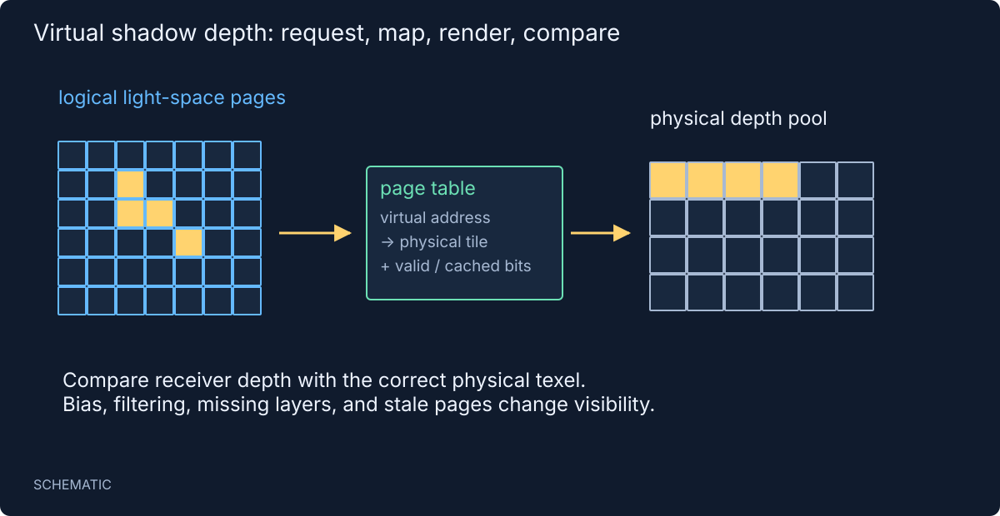
Virtual Shadow Maps separate a large logical address space from a smaller pool of physical depth pages. Visible receivers mark required pages at appropriate resolution. The system allocates physical pages, reuses valid cached ones, invalidates pages affected by moving geometry or lights, culls geometry into the requested pages, and renders their depth. A lookup translates the virtual address through the page table before reading the physical tile. Directional-light clipmaps supply scale and coverage around the view; local lights use their appropriate projections and mip levels.
Build a minimal virtual implementation in this order: a fixed light-space depth image; a tiled image with an identity page table; receiver-driven page requests; physical allocation with residency/validity bits; cached pages with explicit invalidation; then clipmaps or mips. At every stage compare the resulting visibility against the nonvirtual image. Otherwise allocation errors become indistinguishable from shadow bias errors.
The pinned renderer exposes these handoffs in page marking, allocation, and shadow rendering. After rendering and its page-state updates, the projection entry points distinguish local-light projections from directional clipmaps and composite their visibility masks. Check depth validity after resolving the allocated address.
Depth bias prevents the receiver's own numerical depth error from becoming a false occluder. Too much bias separates shadows from their casters and permits leaks. Filtering approximates the variation of visibility across a footprint or finite source. Unreal's Shadow Map Ray Tracing (SMRT) samples virtual shadow depths along rays used for soft-shadow estimation. The query sees only the occluder layers available in the depth representation. Missing layers, thin geometry, projection boundaries, and finite sample counts explain artifacts that a higher lighting sample count cannot fix. Here VSM stands for Virtual Shadow Maps. Variance Shadow Mapping is a separate technique with the same initials.
Walk a virtual shadow address through allocation and sampling
Use a small teaching shadow image of 1024×1024 texels, split into 128×128 pages. There are 8×8 logical pages. A light-space receiver at uv = (0.31, 0.72) lands at texel (317,737), virtual page (2,5), and local texel (61,97), using floor and a half-open [0,1) image domain. Suppose page (2,5) maps to physical tile (7,3). Its physical address is then (957,481), before any implementation-specific border. Decoding the address requires the projection or light identity and the residency entry.
// A teaching VSM cycle. Production layouts and packing differ.
Mark: project visible receivers; choose level; atomically mark page requests
Allocate: keep valid residents; assign free physical tiles to new requests
Invalidate: mark pages touched by changed lights or moving caster bounds
Cull: find casters overlapping requested dirty page frusta
Render: clear new/dirty page depth, then rasterize nearest occluder depth
Sample: translate light/level/page through the page table; compare depthsRendering must happen before a newly allocated page becomes sampleable. A resident page can be dirty. Check its state before using its contents for this light. A finite memory pool also needs a defined overflow policy. When a page is unmapped, report the condition and take the defined fallback. Keep request count, allocation count, cached reuse count, dirty count, and overflow count visible during development.
For a conventional depth that increases away from the light, a minimal comparison is visible if receiverDepth ≤ storedDepth + bias. Reverse the ordering when the actual stored depth convention reverses it. For a finite area source, the ideal direct estimate integrates visibility over source points. Filtering and SMRT approximate that varying visibility using the depth representation and finite samples. Occluders hidden behind the stored depth can still lie on a source-to-receiver segment.
Read the storage before interpreting the shadow
A shadow mask is the answer to a visibility query. The physical depth pool is one of the data structures used to obtain that answer. Neighboring physical tiles can cover distant parts of Sponza because the allocator uses whichever slots are free. To recover a light-space image, we must follow the page table in the opposite direction, gathering the physical tiles into their virtual locations.
Three separate questions determine what a sample means. Which virtual address did this light projection request? Which physical tile currently backs that address? Which depth values in that tile are valid for this query? The page table answers the second; flags and cache metadata constrain the third. Page-table colors distinguish address categories.
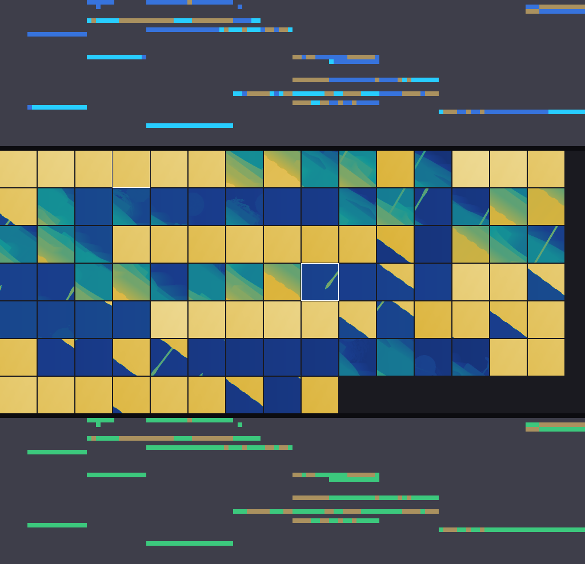
The physical pool is 16,384×4,096 texels, with two captured array slices. Projection samples slice 0; the separately cached static depth uses slice 1 in this configuration. Each slice occupies 256 MiB at four bytes per texel. Free slots provide no shadow answers until a mapping and valid contents back them. The smaller table and metadata let the renderer decide which parts of that memory represent a requested light-space region.
A directional fallback in this table selects a coarser clipmap level, still sampled at logical mip 0. For a local shadow map, the corresponding LOD mechanism can select a coarser logical mip of that map. An address translation must know which policy it is applying. Large regions of the full map above reference the same coarser physical tiles.
Logical shadow mips, hardware texture mips, and hierarchical flags
A full VSM's logical mip 0 has 128×128 page entries. Logical mips 1–7 have 64², 32², 16², 8², 4², 2², and 1² entries. All eight regions fit inside one 128×192 block of the page-table texture's hardware mip 0. Relative to that block, mip 0 begins at (0,0); the tail begins at Y=128, with X offsets 0, 64, 96, 112, 120, 124, and 126 for mips 1–7. The selected map's block begins at global texel (640,0). Thus its logical-mip-zero page (63,65) occupies table texel (703,65).
The logical-level packing is separate from the PageFlags texture's hardware mip pyramid. Each PageFlags word uses the low six bits for allocation, dynamic uncached, static uncached, detail geometry, primary request, and secondary request. The hierarchy update ORs those flags into coarser texture mips at shifted addresses. Each hierarchy level has its own mip address. Eight six-bit levels would require 48 bits if packed together. The hierarchy lets a culling operation ask whether a larger page region contains relevant work without inspecting every leaf.
The page size in this source version is 128×128 texels. For a nonnegative integer virtual texel address u at an already selected level, split each coordinate into a page coordinate p and a local coordinate q:
LaTeX source
u=128p+q,\qquad p=\lfloor u/128\rfloor,\qquad q=u\bmod128.Read the page-table entry for this shadow-map identity, level, and p. If it supplies a valid physical page coordinate a at this same level, the physical texel address is t = 128a + q. The offset within a page survives the translation; only the page's location changes. A nonzero LOD offset selects a coarser level. Recompute the virtual coordinates for that level before sampling.
Decode the complete 32-bit page-table word
| Bits | Decoded field | Meaning |
|---|---|---|
| 0–9 | Physical page X | Horizontal tile coordinate in the physical pool |
| 10–19 | Physical page Y | Vertical tile coordinate in the physical pool |
| 20–25 | LOD offset | Zero for this level; otherwise an offset to a coarser mapping |
| 26–28 | Unused bits | Preserved raw bits with unspecified meaning here |
| 29 | Secondary request | Request classification carried by this entry |
| 30 | This level valid for rendering | Whether this entry can receive rendering at the queried level |
| 31 | Any level valid | Whether a valid mapping exists at some represented level |
The page-entry decoder and texel translation derive “this level valid” from bit 31 being set and the LOD offset being zero. A zero word marks an invalid entry. A valid reference to physical page (0,0) needs its validity bits. Rendering validity and sampling validity are separate predicates. Decode the physical page’s cache and dirty flags using the layout of that separate record.
For a concrete address walk, use the already decoded sunlit receiver A and shadowed receiver B. A declared center-sample replay selects sun shadow-map ID 8196, clip level 10, mip 0 for both. The captured transforms and buffers reproduce this storage query. Exact replay of the random SMRT rays would require their unrecorded samples.
Two Sponza receivers followed through the same captured VSM storage
| Quantity | A: sunlit floor | B: shadowed floor |
|---|---|---|
| Screen pixel | (500, 680) | (720, 680) |
| Virtual texel | (8090, 8411) | (8301, 8100) |
| Virtual page p | (63, 65) | (64, 63) |
| Local texel q | (26, 91) | (109, 36) |
| Global page-table texel | (703, 65) | (704, 63) |
| Stored page-table word | 0xc000504f | 0xc0001017 |
| Physical page a; linear page index | (79, 20); 2639 | (23, 4); 535 |
| Physical texel t | (10138, 2651) | (3053, 548) |
| Raw depth word at t | 0x3efff6f3 | 0x3f000db7 |
| Reinterpreted stored depth | 0.499930948 | 0.500209272 |
| Receiver projection depth before bias | 0.499930967 | 0.499937844 |
| Separate captured shadow-mask attenuation | 1 | 0 |
Check A's address without tracing a ray. Its physical page (79,20) starts at texel (10112,2560). Add local texel (26,91) to obtain (10138,2651). The physical pool has 128 pages across, so its linear page index is 20 × 128 + 79 = 2639. These coordinates address storage locations in the pool. B is nearby on the screen but lives in a different physical-pool row.
Both words have a zero LOD offset, their any-valid and render-valid bits set, and their secondary-request bit clear. Their physical metadata points back to ID 8196 and the corresponding virtual page. That round trip checks the mapping before interpreting its depth. The complete records retain the separate page flags, physical flags, request counter, projection fields, and byte offsets.
What a physical depth texel actually stores
The projection shader's physical load reads an unsigned 32-bit word from pool layer zero and reinterprets the same bits as floating-point depth. The integer representation supports the renderer's storage and raster operations, while the interpreted floating-point value participates in the light-space depth test.
Stored device Z · larger means closer to this light
Every selected-depth view uses the same range, 0.4998…0.5003, with color coordinate t = (z − 0.4998)/0.0005. The 99 native pages contain 1,622,016 depth values, spanning approximately 0.499898583…0.500238657; none is zero. Expanding this narrow numeric interval makes the geometry legible without changing the stored values. Independent per-tile contrast adjustment would destroy this comparison. RGB quantization and thumbnail averaging still lose precision, so use the retained float and raw-word arrays for numerical work.

A's stored depth nearly equals its receiver projection, with a difference of about −1.86×10⁻⁸ before bias. B's stored depth exceeds its receiver depth by about 0.000271428, consistent with a blocker closer to the light in reversed Z. That is a useful storage check against the captured mask values of 1 and 0. One center test illustrates the depth comparison. Replaying SMRT would require the ray directions, jitter, slope and normal handling, and individual sample decisions that the snapshot omits.
A depth value belongs to its light projection and level. It is neither camera depth nor a distance in centimeters by itself. Clear depth inside a valid mapped page and storage in an unallocated page are also different states. The first can mean that no occluder was written at that texel; the second has no usable visibility interpretation. The display gives each category its own color.
Physical-page records and the complete retained operands
Each physical-page metadata record contains six uint32 words: Flags, LastRequestedSceneFrameNumber, VirtualShadowMapId, MipLevel, and the two components of PageAddress. A and B both carry physical flags 0x5b and request number 904. Their independent PageFlags value is 0x1b. In the physical record, 0x40 marks initialized dynamic storage. Address bits use the separate page-table layout.
| Bit | Meaning in physical-page metadata |
|---|---|
| 6, 7 | Dynamic initialized; static initialized |
| 8, 9 | Dynamic dirty; static dirty |
| 10, 11 | Invalidate dynamic; invalidate static |
| 12 | View uncached |
| 13 | Unreferenced in this render pass/frame; may remain cached if space permits |
| 14 | Force cached, including the special rendering/culling policy described in source |
| 15 | Deferred invalidation awaiting its per-frame budget |
Use the flag definitions and the 24-byte metadata layout. The unreferenced flag identifies all 96 older records. Check the flags as well as age when assessing validity.
The complete storage record, numeric arrays, and array schema preserve the selected logical-mip regions, captured flag hierarchy, all physical metadata fields, all selected native depth pages, projection records, uniform values, receiver transforms, raw depth bits, byte offsets, and figure mappings. The full physical pools and original captured resources remain in the lossless native package. Resource versions and SHA-256 hashes connect every decode to those bytes.
This view is tied to native scene invocation 0004 and projection consumer pass 840. The physical metadata was captured at pass 810, before that consumer, and the selected-page owner identities were checked against the table. A capture attached to pass 840 shows the version available there. Identifying the producer requires following writes to the table or pool. See the operand and snapshot report and portable decoder for the exact selection and verification contract.


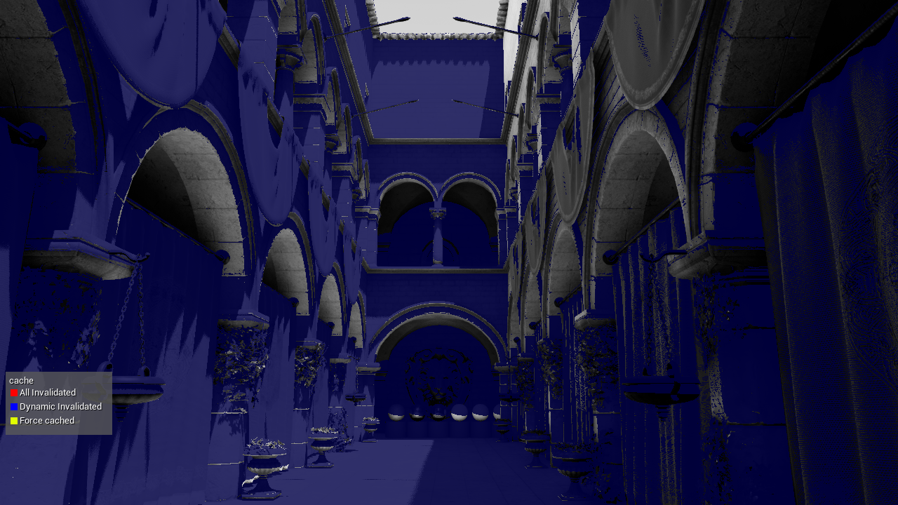
All three views show source pixels x=160…1039, y=200…719 from the same camera. The scene overlay assigns discrete colors to diagnostic categories. The diagnostic record identifies the selected view mode. A numerical shadow lookup additionally needs the light/clipmap transform, page-table entry, physical-page address, stored depth convention, receiver bias, and filtering samples.
Follow the shadow result into the direct-light addition

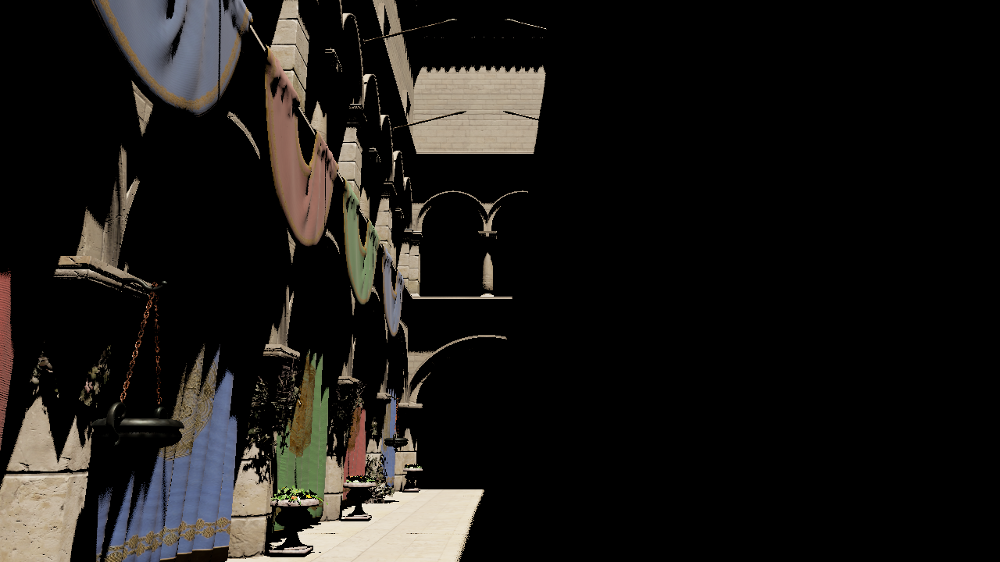

The mask texture stores square-root-encoded attenuation. Decode its red byte c as (c/255)²; treating c/255 as linear would brighten partially shadowed samples. At A the byte is 255 and the consumed attenuation is 1. At B and C it is 0. The sun pass adds pre-exposed RGB (1.9306641, 1.3037109, 0.7900391) at A and exactly (0,0,0) at B and C. Thus the gold sphere can be bright in the final image while receiving no contribution from this analytic sun at that particular point: its reflected incident field belongs to another term of our partition.
The encode/decode functions establish this square-root convention. The mask is a packed set of attenuation channels: the red channel carries this sun's whole-scene directional shadow, while other channels serve subsurface, per-object, or light-function terms in applicable branches. Decode each shadow-mask channel according to the selected light path.
Subtract the captured FP16 SceneColor before pass 842, RenderLight Light::StandardDeferred: Sun_Sponza, from SceneColor after it to obtain these values. Dividing by PreExposure = 1/2048 converts A's addition to scene-linear RGB (3954,2670,1618) in the engine's RGB calibration. Interpret the channels in the renderer’s color and exposure convention. For the image only, each positive pre-exposed channel is mapped through L/(1+L), then the sRGB transfer function. The exact linear values remain in the receiver record.
What this shadow record proves, and what a depth-query replay additionally needs
The mask is the ShadowMaskTexture produced by pass 841 and consumed as PS.LightAttenuationTexture at 842. Its B and A memory channels remain clear; R and G agree on valid geometry in this capture. The observed red codes are 0,90,127,156,180,202,221,239,255, approximately the square roots of eighth-step visibility after quantization. The record reports the quantized value actually available.
This proves the mask-to-direct-light boundary. Reconstructing how the mask was generated would require its SMRT ray samples, virtual-page lookups, receiver bias and depth comparisons. The full frame package retains the VSM page tables, physical pool, projection data, parameters, and captured versions for inspection; the source-level lookup algorithm is explained above and in the VSM reference. An exact per-thread SMRT replay would need additional instrumentation to record the random choices and shader-local operands. A declared replay over these resources must identify its selected samples separately from captured execution.
The direct-light path replaces exact geometric visibility V and some finite-source integration with an estimate and its sampling/filtering rules. The GBuffer provides the primary BSDF. Deferred direct lighting already accounts for this analytic contribution at the visible pixel. It does need direct illumination on secondary surfaces, because those surfaces become sources of reflected radiance for other points.
Implementation checkpoints and exact source reference
The existing VSM implementation reference follows page marking, allocation, invalidation, depth rendering, SMRT, and physical-pool decoding in the pinned source. It also records why a raw pool image cannot be interpreted without virtual-to-physical mappings. The material reference separates the legacy GBuffer route from Substrate and documents the compile-time permutations. These layouts apply to the selected capture. Check the producer’s layout in each project.
Tracing geometry outside the camera view
An incoming-light query begins in the shaded arcade and follows a sampled direction. It may hit a column, pass into the courtyard, or miss toward the sky. Tracing every query against full triangle geometry is expensive. The depth buffer already holds detailed visible surfaces, including the rasterized material geometry, so begin there.

First try screen depth, but define what a hit proves
Project points along the ray into screen space and compare the ray's depth with scene depth. A hierarchy of depth bounds lets traversal skip large screen regions when no intersection is possible and descend near a candidate crossing. The resulting hierarchical Z buffer (HZB) stores min/max or conservative bounds, depending on its depth convention. With reversed depth, the intuitive meaning of "larger" flips. The comparison must follow the actual producer.
Validate a depth crossing against the hit criteria before accepting it. The screen records the frontmost visible surface at each pixel. Its thickness and hidden layers have to come from elsewhere. A thickness test determines whether the crossing is plausibly near the represented surface. Edge uncertainty, missing back layers, view boundaries, and unsupported materials can require rejection. If accepted, the shader must obtain a suitable lighting value at the hit; it cannot sample arbitrary tone-mapped final color without changing the transport quantity and risking feedback.
result = trace_hzb(ray, depth_pyramid, thickness_rule)
if result.accepted:
radiance = sample_valid_screen_lighting(result)
else:
append_unresolved_ray(origin, direction, distance_interval,
receiver_id, sample_id, pdf, trace_flags)The output record must carry the state later stages depend on. A compacted queue needs the original receiver/sample mapping so the result lands in the right directional cell. Keep validity separate from radiance so a valid hit on a black wall survives decoding. The remaining distance interval and any bias must match how the next tracing stage interprets the origin.
Make traversal and fallback independently testable
Begin with a slow screen-space ray marcher at full-resolution depth. Transform the origin and direction into view space, clip the segment to the valid near plane and screen rectangle, and step through projected pixels. Use perspective-correct interpolation to evaluate the projected world-space ray’s depth along the screen trace. Compare a conservative ray-depth interval against the represented surface-depth interval. Refine a candidate crossing before accepting it.
Then add the hierarchy. Each coarse HZB texel bounds the depths of its children according to the producer's convention. At a level, advance to the next projected cell boundary when the whole ray interval is safely in front of the represented bound. Descend when a crossing is possible. At the finest level, apply the thickness and hit-validity rules. Limit both the distance and iteration count. On leaving the view, exhausting its steps or finding an ambiguous crossing, the trace returns unresolved work.
Test the optimized result against the slow marcher on a plane, a thin column, a staircase silhouette, and a ray leaving the screen. Then test both against actual world intersections. The first comparison finds traversal bugs; the second measures the representation's missing information.
For world fallback, prefix-scan the unresolved flags into a compact list and preserve the original result address. Suppose rays 0,2,7 are unresolved: queue slots 0,1,2 must still write back to results 0,2,7. Keep hit distance, hit validity, and radiance validity separate. A valid black surface hit is useful geometric evidence even when its radiance is zero. Resetting all three to zero erases the distinction between an unlit wall and missing representation.
Represent world geometry with distance fields
A signed distance field approximates distance to a surface. For a point outside the surface, an exact field reports distance d to the nearest surface, so a ray can safely advance by d without crossing anything. Repeatedly sample and advance until near zero, beyond the maximum distance, or over the iteration budget. This is sphere tracing.

Mesh distance fields preserve local object detail, while a global distance field combines scene objects into clipmapped volumes with coarser coverage farther from the camera. A practical query can use detailed object fields near the origin and global fields for longer distances. Transform positions and distances consistently under object scale. Handle the inside/outside sign, two-sided meshes, thin surfaces, grid interpolation, and clipmap transitions. A missing or severely compressed wall in this representation can leak light even when rasterization shows the wall perfectly.
Implement a distance-field step without mixing coordinate systems
Store the field's local bounds, world-to-local transform, voxel dimensions, distance scale/bias, and validity. Transform a world sample into local coordinates, map it into the volume's texel domain, interpolate the encoded value, then decode its distance units. If the object has uniform world scale s, a local distance d becomes sd. For a nonuniform scale, multiplying a positive local distance by the smallest singular value of the local-to-world linear transform gives a conservative lower bound on world distance. Multiplying by the largest axis scale can step through a surface.
t = minimum_trace_distance
while t < maximum_trace_distance and steps < maximum_steps:
x = origin + t * direction
sample = read_valid_distance_field(x)
if sample is unavailable: return unresolved
d = decode_distance_in_world_units(sample)
if d <= surface_tolerance: return candidate_hit(t)
step = conservative_step(d, field_error_bound, footprint)
if step cannot make reliable progress: return unresolved
t += step
return miss_if_coverage_and_distance_are_complete_else_unresolvedAn exact signed distance outside a closed surface supplies a safe step. A filtered, quantized voxel field is approximate: if a proven absolute error bound is ε, max(d−ε,0) is a conservative positive distance bound. Production fields instead use particular expansion, step-factor, minimum-step and tolerance rules. A minimum step can speed progress at the cost of stepping across geometry. A two-sided sheet can report distance on either side while leaving the inside/outside classification of a closed solid undefined.
Build the first version with one object, then compare it against triangle intersections for rays near edges and under scaled transforms. Add object bounds to avoid sampling unrelated volumes. A global union field can use the minimum distance of contributing objects, but a finite clipmap covers only a bounded region. When a ray leaves coverage, continue in another representation or mark it unresolved.
A global-field hit supplies a location and an estimated normal. Identifying the triangle or material would require another lookup. The inspected Lumen path therefore consults a separate page object grid. It offsets the lookup position using the field normal, resolves the global-field page, decodes candidate GPU Scene instance indices, maps each instance to a mesh-card set, and accumulates compatible card samples. The page object grid is a separate data structure from the distance texture. A field can show an occluding wall while its lighting lookup has no valid mesh-card identity. See the field-hit to card-lookup bridge. The Surface Cache chapter follows the remaining address translation.
In Sponza, a column, a cloth sheet, and a thick masonry wall cannot be expected to survive a coarse field equally well. The mesh must be split and built so that useful cards and distance fields exist for its geometry. Importing the whole atrium as one enormous mesh can give a recognizable camera image while making secondary tracing and surface coverage poor.
Hardware tracing improves intersections, while shading stays a separate choice
Hardware ray tracing traverses acceleration structures built from supported geometry. Its hit can be more faithful than a distance-field hit, especially for detailed meshes, but the result still needs shading. One mode shades the hit through the Surface Cache. Another evaluates more of the hit material and direct lighting. The first can combine exact triangle visibility with approximate diffuse cached radiance. Hardware ray tracing accelerates the intersection query. Lumen still uses the lighting and reconstruction stages described here.
Geometry representation choices remain: Nanite fallback geometry versus supported native tracing, skinned updates, masked opacity, instance transforms, material hit groups, and tracing bounds. Keep intersection quality and shading quality as two independent switches in experiments.
For world-tracing continuation, compaction gives the GPU a dense list of selected unresolved rays. A prefix sum or atomic allocator assigns output slots; indirect dispatch dimensions then depend on the remaining count. This avoids repeating the world trace for already-resolved rays. Other queues use other predicates: the reflection chapter also compacts hits that still need lighting. A correct implementation also handles empty dispatches, maximum queue capacity, overflow policy, resource transitions, and synchronization. Asynchronous compute can overlap independent tasks; it cannot let a consumer read an unfinished producer.

These are identical 470×500 source-pixel crops starting at (110, 200), at fixed exposure. The second view disables both r.Lumen.ScreenProbeGather.ScreenTraces and r.Lumen.Reflections.ScreenTraces. The third restores those routes and sets the master r.Lumen.HardwareRayTracing=0. The capture record retains the requested and observed settings and the restoration between cases. This scene shows how the available representation affects the result. Software-traced brightness depends on scene geometry and cached lighting. Trace the difference through the distance fields, card coverage and returned lighting while holding exposure fixed.
A diagnostic that separates representations. Hold the Sponza camera fixed and disable screen traces. Differences reveal what the world-space tracing and hit-lighting representation supplied without screen assistance. Then compare software and hardware tracing while keeping hit-lighting mode fixed. Finally change hit lighting while keeping hardware intersections fixed. Each experiment changes one variable; changing all three together cannot identify the cause of a reflection error.
Once a ray query returns a hit, the next cost is evaluating the radiance leaving that point. The Surface Cache exists to make that evaluation reusable.
Trace state, packed fields, and source details
The tracing implementation reference gives HZB traversal and fallback source locations. The captured distance-field replay decodes one real march, including clipmap/page addressing and stored-format values, before the radiance-cache lookup. These records come from the controlled room experiment.
Shade a secondary surface once, then reuse it
Suppose thousands of queries from Sponza's shaded arcade hit the same sunlit wall. Tracing each ray already costs work, and evaluating the wall material and its illumination independently at every hit repeats another large computation. A reusable material-and-lighting representation on the wall lets a ray hit answer "what radiance leaves this part of the wall?" with a lookup.
For a diffuse wall, outgoing radiance is independent of outgoing direction, so one RGB value per surface location replaces a complete function over outgoing directions. On a glossy wall, outgoing radiance also depends strongly on viewing direction. The cache's effective fully rough response is an approximation, and its limitations matter for reflections.
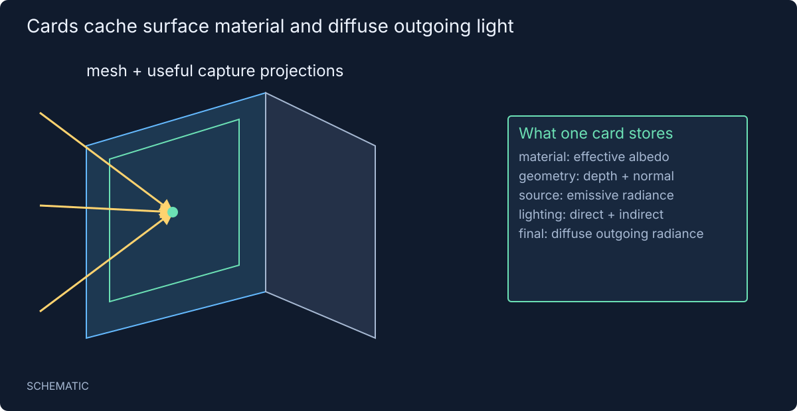
Choose a surface parameterization
A traditional texture uses authored UVs. Lumen instead builds a set of oriented cards that capture the mesh from useful directions. The offline mesh-card builder samples visible surfaces from axis-oriented views, creates surfels, rejects unsuitable interior samples, clusters coverage into rectangles, and limits the card budget. At runtime, mesh instances transform this representation into the scene. Merged instances and heightfields have additional paths.
Several cards are needed because a single projection of a column cannot represent all of its sides, and a projection of the whole atrium hides its arcade interiors behind the outer surfaces. Separate meshes and sufficient card coverage give the cache addressable surfaces where rays actually hit. Magenta in the coverage view marks a surface the cache failed to represent.
Start a small implementation with one known rectangular wall and one orthographic capture. Store its world-to-card transform, oriented bounds, normal, and texel scale. Once world positions map reliably to capture pixels, add six possible projection directions, coverage selection, and per-mesh card sets. Test capture depth to distinguish overlapping layers at the same projected coordinates.
Separate logical surface resolution from physical memory
A distant wall can use a coarser cache resolution than a nearby one. Each card therefore needs a logical resolution and page coordinates independent of its current physical atlas placement. A virtual page table maps these coordinates into a finite physical page pool. It also needs enough state to distinguish unmapped, allocated-but-uninitialized, and valid captured data. Sampling stale memory after eviction can look like lighting from an unrelated object.
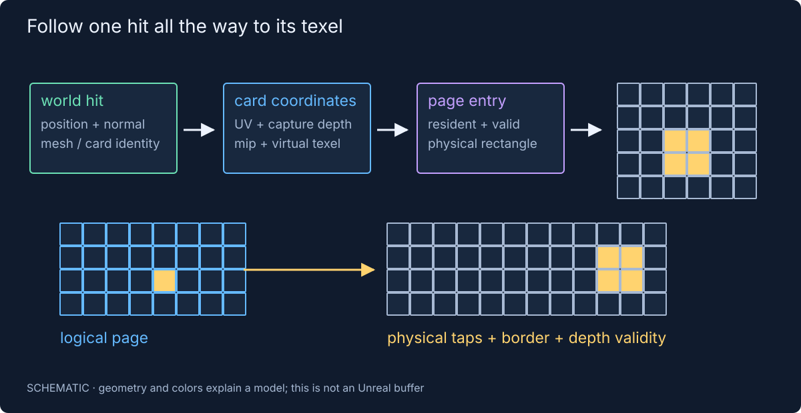
card_position = world_to_card * hit_position
uv = card_position.xy / card_extent.xy * 0.5 + 0.5
virtual_texel = uv * virtual_resolution
page_xy = floor(virtual_texel / page_payload_size)
within_page = virtual_texel - page_xy * page_payload_size
entry = page_table[card_id, mip, page_xy]
if not entry.resident or not entry.capture_valid: return unsupported
atlas_texel = entry.physical_origin + border + within_page
if not capture_depth_matches_hit(atlas_texel, card_position.z): return unsupported
return sample_final_lighting(atlas_texel, footprint)The pseudocode is a minimal address contract; Unreal's packed helpers also handle card selection, neighboring contributions, mip/border filtering, virtual-to-physical scale/bias, and depth/normal weighting. The captured texel replay exposes those actual mappings and packed values for one recorded query. The pseudocode above is a simplified lookup contract; use the replay for the packed layout.
Page scheduling needs requests, priority, a work budget, and eviction. A useful priority considers projected importance, distance, lighting changes, and age. Updating everything removes temporal staleness but exceeds the budget; updating only what was visible last frame misses newly revealed surfaces. Material, geometry, and lighting changes have different consequences: a changed material can require recapture, while a moving light may require lighting updates on otherwise valid material pages.
To watch this system over time, track three separate objects. The card bounds describe which part of the mesh can be captured; the page mapping describes where a requested resolution resides; the lighting values describe the most recent estimate stored there. A static wall’s card can stay in place as the camera moves. Its requested resolution and residency can change. A change in sunlight can leave the card and page allocation intact while making the stored lighting stale. A static rectangle can still belong to an actively updating cache. Conversely, a rectangle moving across the screen may only reflect camera motion.
The representation stays fixed while its allocation changes
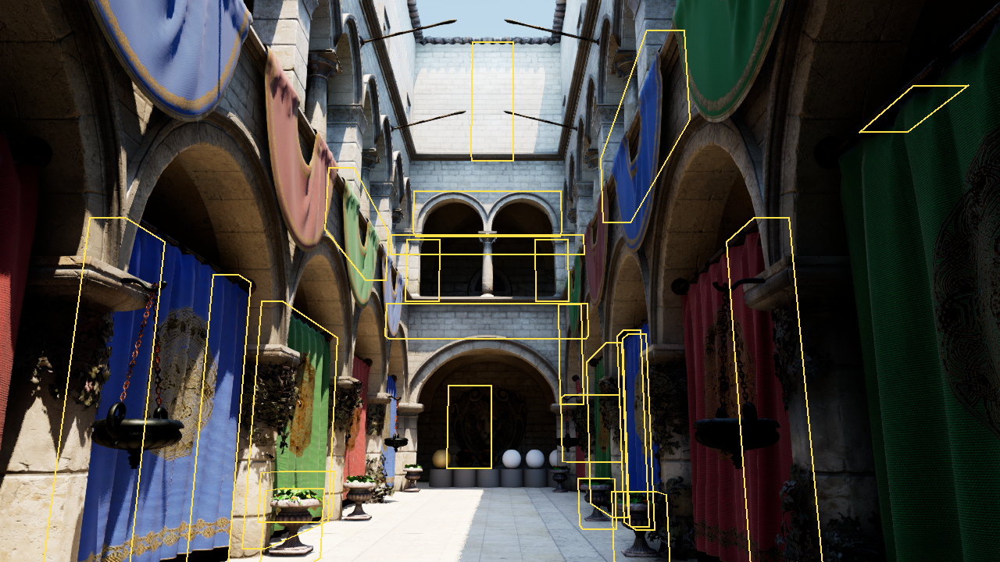
Yellow highlights a representative subset of card bounds.
First follow the outlines around a column and a hanging curtain. Their differently oriented bounds provide different capture domains, even though both are viewed through one camera. In the camera-motion experiment, the outlines move in the image while the world-space card geometry remains unchanged. The baseline has 386 included, resident cards; the moved view has 395. The atrium keeps its shape as different static representations enter the cache.
The fixed-camera sequence separates card geometry from residency. All 522 valid cards retain the same geometric data across its five observations, while inclusion and referenced low-resolution pages change from 371 cards / 385 pages to 522 / 626. Diagnostic renders ran between the baseline and the light change. The sequence shows inclusion changing, but several renders could have affected allocation. The numerical record keeps the flags and page spans separate from the geometry hash.
All card bounds, page addresses, and hidden outlines
The allocation holds 585 complete 112-byte card records. Only the first 522 are valid. The tail contains zeros. Each valid record retains its world origin, three oriented axes, extents, capture direction, packed visibility/channel flags, resolution biases, and low/high page spans. The page record retains every decoded mapping, physical rectangle, owner, and update index. Count a retained page as resident only while a current card span references it.
The display uses card-center depth to select readable outlines. The test checks the center. An edge of the rectangle can still cross a foreground object. The separate hidden-card view exposes center-occluded bounds. The light sequence and motion sequence retain all changes. Indices stay stable within each run. To match the same geometry across the two runs, account for the different upload orders.

Capture material properties before caching illumination
Render the selected card views into depth and material atlases. The card capture renders the material program from its own viewpoints. Cache capture resolution, normal maps, alpha masks, texture filtering, and view-dependent material logic can therefore produce different results from the primary view. The capture folds a fully rough specular approximation into effective albedo, which can make it differ from the material’s diffuse base color.
The units differ: effective albedo is dimensionless; emissive radiance has radiance units; direct and indirect irradiance have irradiance units; final lighting represents diffuse outgoing radiance. The audited combine operation is
LaTeX source
\widetilde L_{\rm card}(y)=L_{e,\rm card}(y)+\frac{\rho_{\rm eff}(y)}{\pi}
\left[\widetilde E_{\rm direct}(y)+\widetilde E_{\rm indirect}(y)\right].With effective albedo (0.6,0.3,0.1), zero emission, and total irradiance (10,10,10), the outgoing radiance is approximately (1.910,0.955,0.318). A secondary ray returns that colored radiance, and the receiver later applies its own material. Multiplying by the wall's albedo again at lookup would darken it twice.
The atlases store pre-exposed values. If the cache scale is , a stored final-lighting texel is . Convert using the cache's scale when moving into scene-linear or view-pre-exposed space. The current view can have a different scale . A raw numeric comparison across these buffers is invalid until that conversion is explicit.

These paired views use the same source rectangle, x=200…999, y=0…679. Follow one stone cornice from the camera image into the coverage image: an accurate triangle hit can still land on a region without a usable cached shading value. Follow the broad cloth instead: coverage exists, but the cached representation has less spatial detail. Those are different errors, one of availability and one of resolution, and they need different fixes. Card coverage, scene inclusion, page residency, and texel resolution therefore require separate diagnosis. Magenta is the display color for a validity warning. The full diagnostic preserves the engine's original legend and frame.
Turn one card texel into a numerical lighting calculation
Choose a mapped texel on the narrow stone ledge along the left arcade. This is a declared query over captured card state, selected from the combine pass's tile list. This secondary surface lies approximately four metres above the floor at primary receiver A. Projecting its reconstructed card position into the hero view gives the marked point below.

Card 107 owns page 323. The page begins at physical atlas coordinate (2176,128) and spans 128 × 128 texels. Tile (13,1) begins at local coordinate (104,8), because a tile is 8 × 8. Taking thread coordinate (4,4) gives local texel (108,12), hence physical texel (2284,140). Sampling its center gives atlas UV ((2284+0.5)/4096,(140+0.5)/4096). Each addition changes the address; confusing a page-local coordinate with an atlas coordinate makes an otherwise valid lighting formula read another surface.
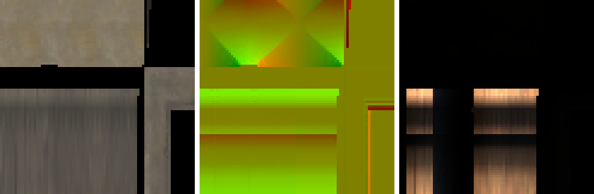
The stored albedo components are approximately (0.40000,0.37647,0.33725). Decode their square before using the material: effective linear albedo is (0.16000,0.14173,0.11374) for this capture's identity diffuse override. The direct irradiance atlas holds (4288,3296,2496), the indirect irradiance atlas holds (412,568,880), and emission is zero. All three lighting inputs use the cache's exposure scale. The combine therefore predicts, before the store:
LaTeX source
L_{\rm card}^{\rm stored}
=\frac{(0.16000,0.14173,0.11374)}{\pi}
\odot\big[(4288,3296,2496)+(412,568,880)\big]
\approx(239.369,174.321,122.228).The captured R11G11B10 output decodes to (240,174,122). The small change comes from storage: Unreal adds a coordinate/frame-seeded dither scaled by the target format's quantization step, then stores the unsigned floating-point channels. The replay's selected 8 × 8 tile matches all 64 captured output words under its stated store model. The model uses the test’s compressed-texture readback approximation. Agreement validates that approximation only at the samples compared here.
Cache exposure, bilinear taps, and the complete combine record
The cache uses CachedLightingPreExposure=1/16; the view uses PreExposure=1/2048. They are different scales. A stored final value of (240,174,122) becomes scene-linear (3840,2784,1952) after multiplying by 16, then view-pre-exposed (1.875,1.359375,0.953125) after multiplying by 1/2048. Multiplying the stored texel by the view scale alone loses a factor of 16. The same distinction applies when comparing direct card irradiance with primary-view SceneColor.
The complete query record retains the pass 694 parameter block, card orientation and bounds, page mapping, normalized depth 35404/65535, material/emissive/lighting inputs, four bilinear taps for every sampled atlas, cache/view exposure, frame seed, format quantization steps, and all 64 output comparisons. At this texel-center query the bilinear weights are (1,0,0,0); the neighboring tap values are still retained. At an off-center query all applicable weights would contribute.
The exporter decodes BC7/BC5 data to floating-point samples, discarding the original block encoding. The replay explicitly snaps those samples to a UNORM8 model before its material decode; the raw expanded values remain recorded. This is a modeling approximation. The arithmetic check validates this declared replay against the captured outputs, while native compressed-block equality remains outside its evidence. The source references and every payload hash are in the record.
Light the cards directly, then propagate card-to-card bounces
Direct card lighting evaluates the lights affecting the represented surface with its own shadowing path. In this snapshot, card lighting seeds mask tiles with attenuation, light-function and cloud-transmittance terms. It then traces distance fields or hardware rays for visibility. The primary view computes its VSM shadow result separately. It also cannot reuse the camera's final lit pixel: many card texels are off screen, and the receiver normal and material projection may differ. Light lists, shadow masks, card texel positions, and light parameters are therefore part of the cached computation.
For indirect lighting, distribute gather locations over card space, trace their directions, evaluate available scene radiance at hits, integrate irradiance, and reconstruct it across the card texels. These radiosity probes on cards update lighting on secondary surfaces. They are neither the camera's screen probes nor the separate world-space radiance-cache probes.
Place a radiosity probe by choosing a sample in the card's capture domain, decoding its surface depth, and transforming that point back into the scene. The gather follows the surface of the represented wall or column. Its normal and capture validity determine which surface is being sampled. A card-space grid drawn as a flat rectangle can hide this depth reconstruction; the scene view should place the samples on their reconstructed surfaces. The resulting low-order directional coefficients support a later irradiance reconstruction on that card. The camera pixel gets its diffuse output later, during reconstruction. Their four-coefficient, PDF-weighted hemisphere projection also has a different normalization from the screen probes' nine-coefficient sphere average.

Green up-facing; orange down-facing; blue X-dominant walls; pink Y-dominant walls.
Under an arch, the orange samples follow its underside, while the wall-facing samples trace the vertical stone and cloth. The elevation panel makes that curved surface structure visible without the camera's occlusion. For each mapped page, the reconstruction chooses its jittered card-space probe coordinate, samples the captured depth, and applies the card's oriented transform. The captured normal supplies both the orientation color here and the hemisphere used by the estimator.
There are 94,787 retained depth-valid, initialized samples in the baseline atlas. This counts the samples represented across updates. A frame can trace a subset of them. The dump omits the exact radiosity dispatch tile list. Advancing the observations changes the page state, jittered locations, coefficients, and history counters; some stored samples persist without being recomputed. The light experiment ends at actual update 63. Before the camera experiment, the original light is restored and warmed. Each of the five captures follows a separate intervention. Their spacing conveys no timing information about light decay.
Project the measured hemisphere with its units intact
A radiosity sample stores four coefficients per color channel: one constant basis function and three first-order directional functions. Let , , be that real SH basis, the cache pre-exposure, and the hemisphere sampling density. The source's coefficient estimator has the form
LaTeX source
c_j^{\rm stored}\approx\frac{1}{N}\sum_{k=1}^{N}
Y_j(\omega_k)\frac{e_c\,\widetilde L_i(\omega_k)}{p_H(\omega_k)},
\qquad p_H=\frac{1}{2\pi}\quad\text{for the uniform-hemisphere permutation}.The PDF correction supplies the hemisphere measure. Use the radiosity normalization here. The screen probes’ extra factor belongs to their sphere-average representation. Irradiance is reconstructed by a dot product with the cosine-transfer coefficients: band zero receives , and band one receives . The resulting stored irradiance is divided by to recover scene-referred irradiance; a unit-albedo Lambertian outgoing radiance divides once more by . Here , captured from the card-lighting parameter block.
The convention can be checked with a constant unit incident field over the surface hemisphere: its irradiance should be , and its unit-albedo diffuse outgoing radiance should be 1. The independent 65,536-direction check reconstructs irradiance 3.14159811; the approximately 0.00017% residual against exact comes from the source's rounded SH basis constants. That residual validates the normalization convention, but low-order SH still cannot reproduce every sharp lighting pattern: truncating the directional function remains an approximation.

Complete surface arrays and reconstruction limits
The array schema describes the baseline numerical arrays: page/card identity, atlas coordinate, jitter, decoded depth and normal, world position, signed RGB coefficients, accumulation counters, exposure, and derived response. Each observation has its own JSON metadata and NPZ arrays. The readable sample records expose individual examples without loading the entire set.
Normals were read back as expanded BC5 samples, so the original compressed block bits are unavailable. The decoder reconstructs the third normal component and applies the card basis. The plotted points are surface gather locations; normal and ray-direction origin biases are separate shader operations. The capture contains filtered trace radiance. Replaying the unfiltered rays or identifying the dispatched tiles would require additional records.

The captured schedule has two lighting combines: direct card lighting, a first combine, radiosity tracing/filtering/integration, and a second combine incorporating the updated indirect result. In the presented renderer invocation these are passes 684, 685, 688 through 693, and 694. Radiosity can therefore read fresh direct and retained indirect terms from the first combined atlas; later view queries can read the second combined result. Different updates can read data of different ages. If selects the pages updated now, a useful simplified recurrence is
LaTeX source
\ell_{t+1}=(I-Q_t)\ell_t+Q_t\big[b_t+K_h\ell_{\rm available}\big].The first term retains unselected data; the second computes selected data using represented sources and transport. Separate direct/indirect budgets, histories, filtering, and intermediate combines make the actual schedule more detailed. The equation explains why moving a light can propagate through the cache gradually even when the primary direct shadow responds immediately.
Experiment. Change the color or intensity of a courtyard light while the camera stays in the arcade. Capture both final lighting and card-lighting views over successive updates. The direct receiver, the secondary wall and the reconstructed arcade can respond on different updates. Record frame numbers and update settings; an unlabelled pair of screenshots cannot distinguish delayed updates from a permanently different solution.
Complete card and lighting records
The reference separates offline card construction, page allocation and address transforms, material capture, direct-light lists and shadows, and radiosity sampling and filtering. The frame explorer provides resource versions, formats, dimensions, packed fields, pass parameters, and available binary payloads. Its captured scene is explicitly the room reference; Sponza observations are attached to the Sponza manifest.
Share the incoming light field near the visible receiver
The Surface Cache made a secondary hit cheaper. We still cannot afford a large hemisphere of rays at every pixel. On the arcade floor, neighboring pixels on the same smooth patch see similar incident light. Trace a directional distribution at sparse surface positions, then reconstruct the lighting for neighboring pixels.
A screen probe is one such surface sample together with a directional representation of incoming radiance. “Screen” describes how Lumen chooses the sample. Its depth follows the sampled surface. Its origin comes from a surface position reconstructed using depth. The probe's normal, depth, material-related sampling information, and identity all have to be tracked.
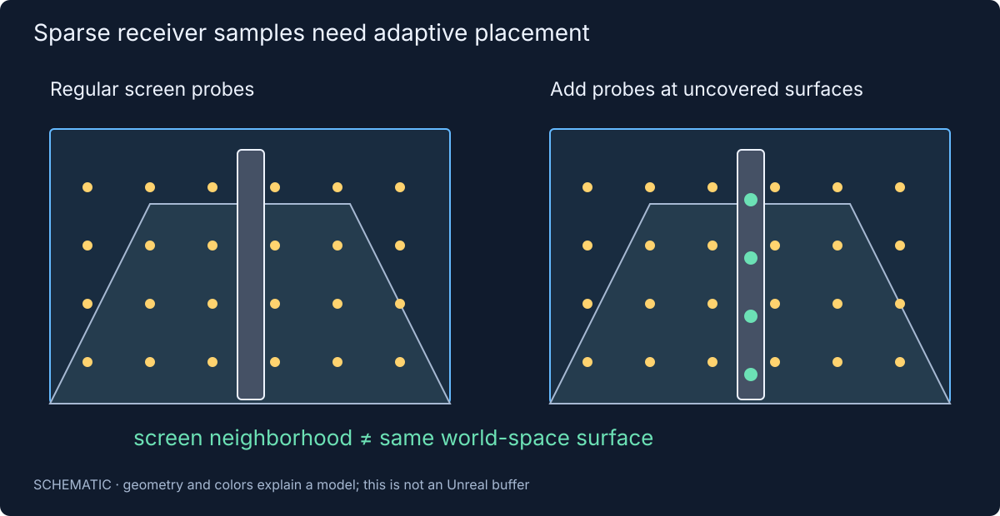
Place probes before tracing rays
A minimal implementation chooses one depth sample per regular screen tile. That works for a flat floor and fails at silhouettes: a column may occupy only a few pixels and receive no representative. Add adaptive probes for uncovered depth/normal configurations. Budget and bound the adaptive count, assign stable indices, and write a map from pixels or tiles to candidate probe identities. Interpolation uses that map to find the probes assigned to each pixel. Allocation order alone gives no pixel ownership information.
Invalid depth, sky pixels, backface-supported materials, thin geometry, and normal discontinuities need explicit handling. A probe origin displaced too far from the surface can cross a wall. Too little offset can self-intersect. Jitter changes the sample pattern over time and must be recorded alongside temporal reprojection. Quality settings determine the probe spacing and directional resolution.
Slide the camera sideways while keeping one screen tile highlighted. Its depth sample can move along the floor, cross a column silhouette, and then land on the far wall. The tile index has stayed the same while the represented surface has changed. A temporal probe display has to show world positions or geometric correspondence as well as atlas indices. Reusing coefficients solely because the integer index matches would carry one surface's illumination onto another. The adaptive count and compacted order follow current demand. The same index can refer to different world locations on successive updates.
Watch the samples attach to actual Sponza surfaces
Cyan: uniform probes. Orange with white rings: adaptive probes. Stale atlas entries are excluded.
Selected observation, allocation counts, and complete probe data
Even with a stationary camera, a given screen coordinate can sample different world points. In the light-step sequence, the uniform tile jitter changes from (4,4) to (6,12), then later to (2,8) and (12,6) pixels. The baseline has 3,569 valid uniform probes and 137 active adaptive probes: 3,706 active samples in total. Its atlas also contains 103 finite adaptive entries outside the active allocation. Drawing those entries would present old storage as current probes. The placement view therefore follows the allocation bound and the stored depth validity, while retaining the excluded entries in its numerical record.
Follow a row of cyan points across the floor and then the orange samples near a depth edge. The regular screen spacing becomes uneven in world space because each point is lifted through a different depth. The adaptive samples cover places where one tile holds more than one surface. Step through the light change: changes in their positions are sampling changes, while changes in their stored directional field are lighting-estimate changes. To compare illumination at one physical location, use the world-position and normal checks in the SH example below; matching atlas indices alone cannot establish that correspondence.
Build the first working placement and gather pipeline
Use separate records for the receiver and the traced directions. A minimal receiver record contains world position, geometric/shading normal as required, device or linear depth with a declared convention, screen coordinate, and validity. A ray record contains its owning probe, directional cell, refinement level, direction, trace interval, and result state. Compaction changes queue order, so an atlas coordinate cannot stand in for the owner identity.
// Teaching implementation: five dispatches with explicit dependencies.
PlaceUniform:
for each screen tile:
choose a valid depth sample using the frame's declared jitter
reconstruct world position with this view's inverse projection
write UniformProbe[tile] and its geometry
FindUnrepresented:
for each valid pixel:
test the uniform probe against this pixel's depth and normal
if incompatible: mark a demand in an adaptive allocation cell
AllocateAdaptive:
prefix-sum unique demands; cap at the allocated capacity
write AdaptiveProbe[base + offset] and pixel/cell-to-probe indirection
record overflow explicitly; never write beyond the probe array
GenerateDirections:
for each valid uniform or adaptive probe:
generate the directional cell/refinement records
write owner indices before any later queue compaction
TraceAndReconstruct:
trace the screen route; compact unresolved records
trace the selected world route; fill each original result slot
reconstruct directional cells; integrate and interpolate to pixelsA prefix sum is a parallel version of assigning consecutive indices to marked items. If demand flags are [1,0,1,1], an exclusive prefix sum is [0,1,1,2]; the marked items write to indices 0,1,2 and the total count is 3. For several demands in the same allocation cell, deduplicate or use one atomic claim before scanning. Otherwise repeated pixels spend the entire adaptive budget on the same surface.
On the GPU, put the count and capacity in different fields. The count determines active work; capacity determines legal addresses. A subsequent indirect dispatch uses the compacted count, rounded up to the thread-group size, while every shader guards its final partial group. The render graph must order producer writes before consumers and declare the access transition. A CPU readback of the count between every stage would serialize the frame and erase much of the benefit.
The captured Sponza frame shows what happens when stored entries and active entries are confused. Its placement allocation has 3,600 uniform slots and capacity for 1,800 adaptive probes. The captured adaptive allocator says 117, supported by 117 nonzero entries in the tile header. Of the uniform slots, 3,569 have finite positive geometry, giving 3,686 active placements with usable geometry. Scanning the entire storage for positive values would instead find 3,809: 123 additional adaptive entries contain old values beyond the active allocation. Drawing those stale entries as current probes would make the visualization wrong even though every plotted coordinate was read from a real buffer. The placement record retains both the active subset and the excluded storage, with the allocator/header evidence and its readback limitations.
Production adds classification, allocation, and packed representations, but every returned direction must still stay associated with the receiver and directional measure that generated it. A probe visualization needs the placement map, adaptive count, ray index mapping, and validity data alongside the radiance atlas.
Storing incoming radiance by direction
Suppose the courtyard is bright to the right and the covered arcade is dark to the left. Two surfaces at the same position but with different normals receive different irradiance. A single average color loses that difference. Store radiance as a function of direction, then integrate it against the receiving material.

The inspected implementation uses equal-area spherical mapping for the directional probes that need it. Ordinary two-channel octahedral normal encoding assigns unequal solid angles. Substituting it would change the integration weights. The mapping function, resolution, bin centers, randomized offsets, and Jacobian determine how a texel corresponds to a direction and measure. A visualization should show that mapping beside the radiance, because a bright atlas texel is meaningless without its represented direction.
In the simplest implementation, trace one jittered direction in each equal-area bin. For M bins covering the sphere, each bin has solid angle . Sum radiance times the positive receiver cosine and this measure to estimate irradiance. If directions instead come from a probability distribution, use their inverse-PDF weights. A quadrature weight gives an area to integrate. A stochastic PDF describes the likelihood of drawing a sample there.
Spend directions where the material and illumination need them
A diffuse receiver prefers directions with a large cosine; a glossy receiver prefers directions near its reflection lobe. The last frame's lighting also predicts where bright incoming directions may lie. Lumen's probe tracing can use BRDF and lighting information to guide its directional work. This requires both a distribution and a reproducible mapping from sample indices to generated directions.
To implement a first importance sampler, build nonnegative bin weights , add a small support floor, normalize to , select a bin through a cumulative distribution or hierarchical reduction, then sample within it. If its solid angle is and sampling within the bin is uniform, the directional PDF is . The generated sample must retain enough information to reconstruct that PDF or its encoded reciprocal weight.

At a shared probe, multiple nearby materials may request different distributions. Building the guide from represented BRDF information is an approximation to their combined demand. Quantization, limited directional bins, support floors, maximum ray weights, and radiance clamps can change the estimator. Assess bias across the whole probe pipeline, including reconstruction and reuse.
The Lumen implementation uses a structured refinement scheme. Its normalized incoming-light PDF and BRDF PDF form a sort key. Low-priority ray slots can be reassigned in groups of three to subdivide a higher-priority spherical cell into four children. The default production path uses one refinement level; the serial reference path supports multiple levels. The packed ray information retains that cell and refinement level. The traced results are subsequently reconstructed into the regular directional representation before filtering and integration. Use the PDF to rank cells. Dividing the reconstructed radiance by it a second time would change the result. See ray ranking and subdivision and integration of the reconstructed directional field.
Trace the generated directions through the screen/world hierarchy. An accepted screen hit uses its valid screen-lighting source. A world hit queries the represented surface lighting or selected hit-lighting path. A miss may query the sky. Store the result, hit distance or depth, validity, and any additional flags needed by later filtering. Record whether the stored value is raw radiance, weighted radiance, or a packed trace result. The integration formula must match that storage contract.

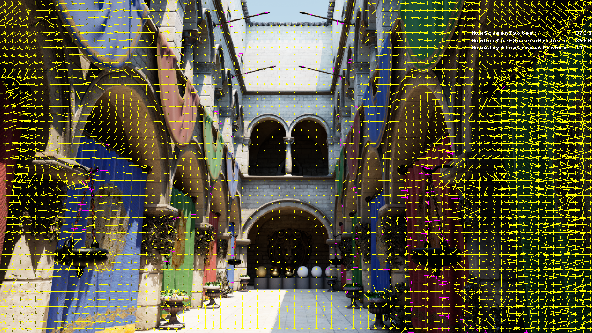

Both panels magnify the same region: x = 200…699, y = 240…659 in the 1280×720 hero image. The placement capture reports 3,600 uniform slots and 140 adaptive probes, giving 3,740 total slots. The counts describe probe allocation in this diagnostic frame. Hit validity requires trace results, and a later diagnostic frame can allocate a different adaptive set.
The engine enables this view through r.Lumen.ScreenProbeGather.Debug as well as the placement selector. Check that the debug pass actually ran after setting the selector. The recorded normal mode is a separate render invocation. Use the native resource identities below to follow one probe across frames. Yellow dots alone can refer to different samples.
Open the directional record of a floor probe
In the frozen frame, the uniform probe near A is index 3391, at atlas coordinate (31,42). Its captured world position projects to approximately (498.5,680.5), a little left of receiver A at (500,680). Its normal is approximately (0.01253,0.05431,0.99845). This probe is close enough to be a candidate for reconstructing A. Its actual weight depends on interpolation.
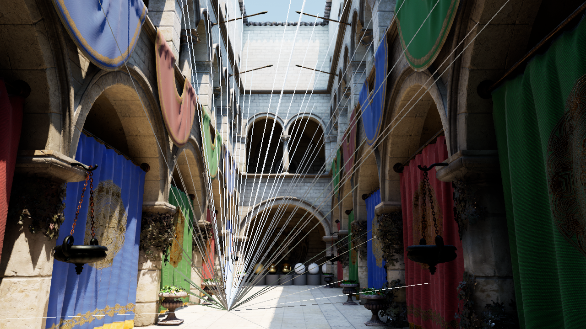


For a concrete address, trace slot (0,0) belongs to trace-buffer coordinate (248,336). Its packed ray-info word is 0x0207. The decoded angular cell is (7,8), at refinement level 0 of the 16-cell-resolution representation. Using the recorded blue-noise components gives UV approximately (0.49828,0.56054), then direction (−0.00759,0.17524,0.98450): mostly upward toward the opening. The recorded trace radiance is (9.875,12.625,19.5) in view-pre-exposed RGB. This sky-facing sample is strongly blue compared with many directions toward stone.
The trace layout and the filtered-field layout describe different angular arrangements. Copying a coordinate between those layouts can pair a bright sky trace with a zero texel representing another direction. To test whether filtering discarded sky radiance, first match the directional footprints. Decode the ray's cell and refinement level, perform the structured-to-regular reconstruction, and only then follow the field through spatial filtering and irradiance conversion.
Every available field for the three selected probes
The records for probe A, probe B, and probe C retain all 64 trace slots each: packed ray-info words, cell/level, jitter samples, reconstructed directions and cone widths, trace radiance, stored hit words and flags, recorded hit distances where valid, projected hit checks, and the separately addressed regular radiance values. They also retain all nine SH coefficients for each RGB channel, probe positions/normals, view transforms, resource versions, byte offsets, and payload hashes.
The nearby uniform indices are 3391,3405,2919, projecting to (498.5,680.5), (722.5,680.5), and (626.5,584.5). Their trace records have 27,20,46 hit flags respectively. A direction with no recorded hit can still receive sky or cached far-field radiance. Conversely, a geometrically valid hit can return very little radiance. The placement inventory separates captured allocation/validity evidence from unused storage, and the figure manifest records display transforms and native numerical arrays.
Read one probe at a time. Select a probe on the arcade floor and locate the atlas block assigned to it. Identify the bins looking into the courtyard and those looking at the nearby wall. Compare their radiance and hit-distance values, then inspect the trace or fallback that supplied each. Finally rotate the receiving normal in the integration diagram. The same directional data should produce a different cosine-weighted result without requiring a different stored incoming field.
Long traces still repeat work. Many nearby probes look through the same opening toward distant geometry or sky, so one more cache in world space can share that work. Its purpose differs from the Surface Cache's.
Cache distant incoming light in world space
A world-space radiance probe stores a directional incoming field at a point in space. It answers a different question from a card texel: the card stores a surface's approximate outgoing radiance, while the world probe describes what arrives from each direction at a spatial location. Screen probes sample the visible receivers. World probes can share far-field information between those receivers and across camera movement.

Allocate where queries actually need the field
A dense fine grid over the entire world is too expensive. Clipmaps provide a fine region near the view and progressively coarser coverage farther away. Demand marks identify cells needed by current gathers. An indirection texture or buffer maps those cells to physical probe indices. Allocation tracks free entries, last use, update priority, and validity. Scrolling a clipmap changes the relationship between logical cells and world positions, so stale entries cannot remain valid under their old coordinates.
Screen-probe placement and cache demand therefore precede the relevant cache update. The implementation schedule is a dependency graph: place receivers, mark demanded world cells, allocate or update the selected world probes, then consume the available cache in the remaining traces. Other consumers and retained data can have their own update paths.
For each selected world probe, trace a directional distribution and store radiance plus geometric information needed for parallax and visibility handling. Construct the configured filtered representation and borders so directional lookups remain coherent across seams. The inspected default stores one radiance-cache mip. Additional mips are configurable. An atlas slot with radiance but no valid depth or position record is insufficient for a reliable spatial reconstruction.
Move the camera a short distance. A world probe can remain at the same world location even though its projected position changes. For a larger move, a clipmap scroll brings new cells into range; a physical atlas slot may eventually be reassigned to one of them. Track the world cell and allocation identity together. For a fixed-camera light change, try the opposite experiment: keep the spatial grid fixed while the stored directional radiance changes. Placement, allocation, selection for update, and stored illumination are four distinct observations. A placement overlay alone measures only the first of them.
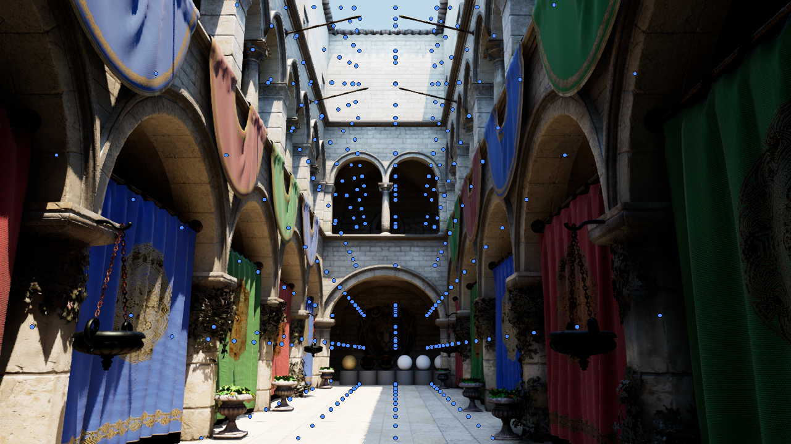
Fixed markers show positions; the trace-age histogram shows update activity.
Unlike the surface samples above, these locations form a grid through space. Reconstruct a center as clipmap corner plus times cell spacing, add the captured probe offset, then undo the view's translated-world origin. Here the offsets are zero, and the active cells occupy the finest clipmap with approximately 104.17 cm spacing. Screen-space spacing varies with perspective; this is still a regular world-space grid.
With the camera fixed, 878 world cells remain active through the light step. Their positions alone say little about whether their lighting is fresh. The age chart therefore counts the active probes by their recorded time since the last trace. Its scale remains 0 to 1000 probes across observations. In the baseline, 150 probes have age 1, another 150 age 2, and another 150 age 3; the rest retain older traces. Updating a budgeted subset can change this distribution while leaving the placement image almost unchanged.
Select camera motion. The active count goes from 878 to 968 after the first recorded update, then to 847 at update 63. The first transition retains 870 world cells in the same physical slots, even though their logical clipmap coordinates change. Four reused slots acquire different world cells. A texture coordinate or physical index can refer to a different world cell on a later frame. Track the clipmap level and world cell as the spatial identity, and track the storage slot independently. The later transition removes old demand as the cache settles around the new view.
All grid positions, hidden probes, and temporal correspondence
The motion ledger records unchanged cells, changed logical coordinates, recycled physical slots, additions, removals, last-use and last-trace timestamps. The baseline record retains every active probe's address and position, plus allocator/free-list checks. Its 925 allocated high-water slots minus 47 free slots equal the 878 active references. The separate hidden-probe projection reveals cells behind primary geometry without mixing them into the visible marker plot.

These are the screen-probe gather's main radiance-cache cells: four 48³ clipmaps, identified through matching mark/allocate parameters and resource-consumer bindings. The separate translucency cache uses three 24³ clipmaps in this capture. Combining a transform from one renderer invocation with resources from another, or selecting the translucency cache by a similar resource name, produces a plausible but incorrect visualization. The source records identify the selected invocation and every consumed version. Position markers locate the main cache’s probes. Their directional data live in its octahedral atlas. The screen probes use a separate SH layout.
Implement a small world-probe allocator before adding clipmaps
Start with one bounded 3D grid and a physical pool of P probe slots. Store an indirection index per grid cell, initialized to an invalid sentinel. Store world position, allocation generation, last-used update, last-lit update, and validity per physical slot. The directional radiance and depth atlases use that physical index. The generation prevents a delayed request from mistaking a recycled slot for its previous owner.
A demand pass marks cells touched by queries. A compacted demand list allocates missing slots from a free list. A separate update list selects at most B probes according to a deterministic priority. Clear or initialize every newly assigned slot before any interpolation can consume it. After tracing and filtering, publish its valid state. Retire unused slots only after their current readers have finished; freeing a slot early can recycle storage that the GPU is still reading.
For cell size h and grid origin o, a position x has grid coordinate q = (x−o)/h. The integer part identifies neighboring cells; the fractional part supplies interpolation coordinates. A corner with bits (bₓ,bᵧ,b_z) has spatial weight equal to the product of fᵢ for bit 1 and (1−fᵢ) for bit 0. All eight weights sum to one. Missing corners and geometric rejection change that sum, so track the accepted weight explicitly. The elementary implementation tests addressing and constants. Near Sponza’s walls, interpolation also needs to respect visibility.
Add camera-centred clipmaps only after the single grid works. When a grid scrolls, distinguish cells that retain the same world location from new entering cells. Wrapped storage indices alone cannot establish that identity. Allocate, invalidate, and update against world cell coordinates or an equivalent tagged mapping. The engine's indirection layout and budgeting policy handle the same ownership problem in more detail.
Why ordinary trilinear interpolation leaks through walls
Take two probes on opposite sides of an arcade wall. Their positions are close, but their incoming fields are different. A distance-only interpolation gives the dark side some of the bright side's field. Weights that sum to one reproduce a constant field exactly. Across a wall they can still blend unrelated lighting.

A teaching reconstruction starts with , with normalized valid weights. The direction may be corrected for the difference between the query point and the probe's observed hit. A depth estimate helps decide whether that correction is plausible and whether the query lies in front of or behind a represented occluder. The engine implementation adds specific clipmap selection, coverage tests, fade distances, interpolation weights, and directional/depth sampling rules; a generic eight-probe average loses those conditions.
Local geometry must still be resolved before relying on a distant cache answer. A near wall should occlude far radiance. The trace/cache transition distance and cone footprint determine when a cache approximation is useful. Querying the cache from the origin without local visibility would illuminate the arcade through its own wall.
coverage = choose_cache_clipmap_and_coverage(query_position, ray_cone)
if not coverage.valid: continue_world_trace_or_return_explicit_failure
neighbors = read_probe_indirection(coverage.cell_corners)
for probe in valid(neighbors):
geometry = read_probe_position_and_directional_depth(probe)
direction = parallax_correct(query_position, ray_direction, geometry)
weight = spatial_weight * validity_and_visibility_weight
value += weight * sample_probe_radiance(probe, direction, mip)
total_weight += weight
if total_weight == 0: use_documented_fallback
else: value /= total_weightThe pseudocode lists the decisions needed for reconstruction. Consult the shader for the exact order of operations. A failed coverage lookup, an unallocated indirection entry, a valid zero-radiance probe, and a rejected geometric contribution are four distinct states. Log them separately. Otherwise a black output cannot tell you which part of the cache failed.
Evaluate one actual eight-probe neighborhood
The captured world-cache pass contains 104,483 compacted trace entries. Select lane 11 by the declared selection rule in the query record. Its packed word identifies uniform screen probe 695 and trace cell (1,4), stored at trace-buffer coordinate (441,68). The probe lies near screen (882,136). Its reconstructed translated-world query position is (499.349,144.104,251.590) cm, and its sampled world direction is approximately (0.916132,−0.394151,0.073122).
This query falls inside clipmap 0, whose cell size is 104.1667 cm. Subtract its translated-world corner, divide by cell size, and subtract the half-cell offset used for probe centers. The base interpolation cell is (29,25,27), with fractions (0.633747,0.383396,0.279266). Read the eight integer entries of the 192 × 48 × 48 indirection volume; they map these logical neighbors to physical probe indices 38,715,42,719,39,716,45,720. A screen probe index, a clipmap cell coordinate, and a physical world-probe index are three different address spaces.

The trilinear weights, in the record's neighbor order, are approximately (0.162765,0.063068,0.101205,0.039215,0.281642,0.109129,0.175121,0.067855); they sum to 1. Spatial weighting alone is insufficient. Each probe uses its captured position and directional depth to reproject the query direction onto the probe's assumed bounding sphere. That changes the directional atlas coordinates and introduces the solid-angle correction. Read all four bilinear taps at those coordinates, decode their R11G11B10 values, undo the cached exposure by multiplying by 16, and apply the recorded parallax factor before the spatial interpolation.

The replay returns approximately (457.921,406.295,344.265) in scene-linear RGB after undoing cached exposure. Multiplying by the current view's 1/2048 gives (0.223594,0.198386,0.168098), close to the captured TraceRadiance value (0.224609,0.199219,0.167969). The replayed depth is 1039.793091 cm versus the captured 1039.792969 cm. These are forward consistency checks for the cache lookup. Reproducing earlier tracing, sky-leak additions, fog and the final quantized store would require more evidence.
Validity and addressing details for the world-cache query
All eight indirection entries are allocated and distinct. The captured probe-offset buffer is zero, so probe positions are clipmap corner + (cell + 1/2) × cell size. Each physical probe index maps to tile (index & 127, index >> 7) in the 4352² radiance atlas. The final tile resolution is 34, including the border; the depth atlas is 4096². The query uses mip 0 and a cone half-angle of about 0.17708 radians. The record retains the packed ray info, blue-noise sample, ray-generation parameters, 32 radiance taps, depth samples, parallax corrections, and nested interpolation order.
We selected this lane for CPU replay using captured inputs. The dump contains no shader-local execution log for it. The lane lies below both widths in the indirect argument buffer. Either dispatch alternative is consistent with the dump. The captured view reports no global-SDF clipmaps for this stage. We can compare the world-cache lookup with the stored result. The preceding voxel-tracing history remains unknown.
Lookup arithmetic and all available resource fields
The world-cache replay follows a dispatched ray through clipmap selection, eight indirection entries, probe position, depth samples, atlas coordinates, exposure, and interpolation. The associated explorer links identify the exact resource version and pass that supplied each value. The source reference records allocation, updates, filtering, and cache coverage. These are the details to inspect when a diagram's abstract “probe” has to become an addressable GPU record.
From directional probe samples to surface lighting
The renderer has sparse, noisy samples taken at different surfaces, in different directions and at different times. At each visible receiver it must reconstruct the incoming light field and integrate it against that surface's scattering response. A measurement from an earlier frame can help only while it still describes the same surface under the same illumination.
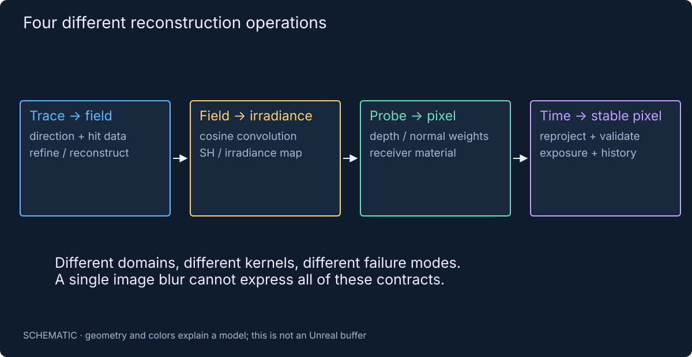
Integrate the directional field
A diffuse surface needs irradiance . This is a convolution with a broad cosine kernel, so it discards much of the high-frequency directional detail that a mirror needs. Its width makes low-order directional bases useful for diffuse lighting.
Spherical harmonics (SH) are an orthonormal basis of functions on the sphere, analogous to Fourier modes on a circle. A coefficient is an integral of the function times one basis function. The constant basis term carries the mean; higher bands record increasingly fine directional variation. Three bands contain nine coefficients. Cosine convolution multiplies the first three bands by , , and . Truncating there is an approximation, particularly for sharp occlusion and narrow light sources.

Normalization must match the stored representation. In the inspected screen-probe filtering path, the stored radiance SH is formed as an average over the equal-area sphere samples:
LaTeX source
s_{lm}\approx\frac1M\sum_{j=1}^{M}L_jY_{lm}(\omega_j),\qquad
E(n)\approx4\pi\sum_{l=0}^{2}\sum_{m=-l}^{l}A_l s_{lm}Y_{lm}(n).The factor 4π converts a sphere average into an integral. It must appear exactly once. The default irradiance storage path preintegrates the result into a 6×6 equal-area directional probe with a border (the engine names this format OCT); the SH3 storage path retains the coefficients and applies the factor at consumption. SH3 can be selected explicitly and is also forced when the configured short-range bent-normal AO path applies during integration. The card-radiosity SH path uses a different, PDF-weighted hemisphere projection with four coefficients. Derive the scale from this representation’s own measure.
A normalization test. For constant radiance L₀, only the constant SH coefficient is nonzero in the exact projection. Since , the stored average coefficient is . Substitution gives , exactly the hemisphere integral. Omitting 4π gives L₀/4 instead. A scale error of this kind persists at any sample count.
At a captured probe position, evaluate the reconstructed unit-albedo diffuse response for many hypothetical receiver normals. Draw each normal as a direction from the probe and use the response magnitude as the distance along it. The resulting lobe is a graph of a function, placed in the scene where that function was measured. A long upward lobe means a surface with an upward normal would receive more reconstructed diffuse illumination there. Its orientation can be compared with Sponza's opening; its value at the actual receiver normal can be compared with the integrated buffer.
For a temporal comparison, retain the same units, angular basis, exposure conversion, radius scale, and color mapping. Rescaling each lobe to its own maximum would make a fourfold drop in illumination disappear from the picture. Low-order reconstruction can also produce negative lobes near sharp changes. If the display clips negative values to zero, report the clipping and retain the signed coefficients for reconstruction. A changing lobe at a fixed position describes a changing estimated field. A lobe that jumps to another surface after camera motion instead needs a new geometric correspondence before its coefficients can be compared.
Turn the captured directional field into a shape in the scene
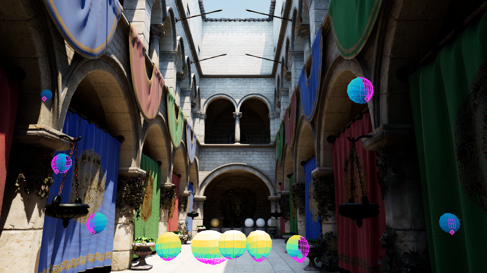
Blue through white indicates increasing response. Magenta outlines expose depth-occluded parts of the function graph. Green and pink center marks identify floor and arcade samples.
Selected observation, SH units, display scale, and geometric matching
Focused positions, signed coefficients, and temporal matches
The lobes use captured coefficients and the captured camera transform; their meshes and colors are a CPU visualization of the reconstructed function. They evaluate the no-occlusion, unit-albedo response. They show the directional function before receiver materials or base color enter the calculation. Use the placement view to locate a sample, then use its lobe to ask which receiver orientations would receive the strongest reconstructed illumination there.
The light-step example also shows why temporal matching needs geometry. The focused left-arcade sample labelled arcade-left-8 has nearest matches within 5.35 cm and normal dot products above 0.999 across these five observations. Several floor matches move roughly half a metre because a small screen-space jitter produces a large world-space displacement at a grazing view angle; the data flags these as incompatible under its stated matching rule. A lobe can jump when its sample moves to another surface. Check the world position before attributing the jump to a lighting change. To match samples across frames, the records retain their positions, normals, matching distances and all 27 signed coefficient values.
Separate normalization error from quadrature error. The decoder evaluates the constant-field test above with the analytic constant coefficient and obtains D=1 within 1.5×10−6 over 256 test normals. Projecting that same synthetic constant field through the actual 8×8 direction layout leaves small higher-band residuals; the worst deviation becomes about 2.05%. The first test checks the factor 4π and the Lambert factor. The second exposes the finite directional quadrature. Both tests feed the decoder a synthetic constant field with a known answer.
The screen-probe diffuse output is the unit-albedo diffuse response, , multiplied by the view pre-exposure. Composition later multiplies D by the visible receiver's diffuse color. The receiver albedo and 1/π must each be applied exactly once. By contrast, the Surface Cache's final-lighting combine has already multiplied secondary direct-plus-indirect irradiance by the secondary surface's effective albedo/π and added emission. Its separate direct and indirect irradiance atlases remain unweighted by that albedo. Those two material interactions belong to different path vertices.
Interpolate only between compatible surfaces
Choose nearby probe candidates through the screen/adaptive-probe maps. Compute geometric weights using position, depth, and normal compatibility. Normalize accepted weights. If every candidate fails, take an explicit fallback. Dividing by a tiny remaining weight can amplify noise. At a silhouette, adjacent pixels can land metres apart in world space and receive very different lighting.
Spatial filtering of probe radiance also needs geometric checks. A ray hit distance helps distinguish an observed nearby wall from distant illumination. Position and angular thresholds limit mixing between incompatible observations. Several small filter passes can be cheaper than one large kernel, but their combined footprint still smooths the field. Inspect contacts and thin columns as well as the flat floor.
Check the normalization against captured probe coefficients
Evaluate probe A's captured nine-coefficient RGB SH representation at its own normal, using the declared no-occlusion test AO=1. Applying the sphere-average normalization and the unit-albedo Lambert factor predicts D ≈ (1.26287,1.67993,2.57980). The probe projects to the center of pixel (498,680), whose captured integrated field is (1.203125,1.5625,2.375). Relative to that stored field, the differences are approximately 5.0%,7.5%,8.6%. The comparison is a scale check: omitting 4π would produce a much larger systematic error. Replaying per-pixel integration would also require its selected probes, interpolation weights, and active geometry and occlusion tests.
At receiver A itself, the current integrated output is (1.28125,1.703125,2.5625). It differs from the value at the probe center because these are different pixel addresses. At B it is (1.046875,1.46875,2.3125). These blue-weighted responses explain why shaded stone retains light even where the analytic sun's mask is zero. The visible stone's diffuse color still has to multiply this unit-albedo response.
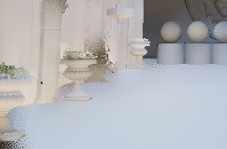

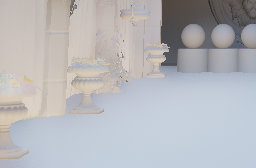

Current, imported, and newly written diffuse history
| Receiver | Current integration | Imported history at the pixel | New history output |
|---|---|---|---|
| A | (1.28125,1.703125,2.5625) | (1.296875,1.671875,2.5) | (1.296875,1.671875,2.5) |
| B | (1.046875,1.46875,2.3125) | (0.984375,1.40625,2.1875) | (0.984375,1.40625,2.1875) |
| C | (0.515625,0.5546875,0.71875) | (0.609375,0.625,0.765625) | (0.6015625,0.6171875,0.75) |
All entries are view-pre-exposed RGB before receiver diffuse color. The full integration/history record identifies the distinct resource versions; the new history is written by temporal reprojection at pass 762. These three receivers have packed history byte 0x0f: the high nibble encodes zero fast-update amount, and the low nibble 15 means the configured maximum accumulated history. The captured parameter MaxFramesAccumulated is 10, so this byte decodes to ten effective accumulated frames. At A and B, rounding can give equal values even with a nonzero blend weight. C demonstrates a stored update toward the new measurement.
Per-pixel interpolation weights, reprojected tap weights, disocclusion decisions and the final blend factor remain internal to the shader in this dump. The samples above bound the replay to the stored current and historical inputs and the stored output. At metallic receiver C, the material’s diffuse color can suppress a nonzero unit-albedo diffuse response during composition.
History records a previous measurement
For a moving camera, the previous value at the same screen coordinate usually belongs to another world point. Reproject the current receiver into the previous frame using transforms and motion. Gather neighboring history taps, then validate each tap against depth, normal, material classification, and availability. Exclude invalid taps and renormalize. Occlusion changes create disocclusions: a newly visible surface has no valid previous observation, even when a nearby color looks plausible.
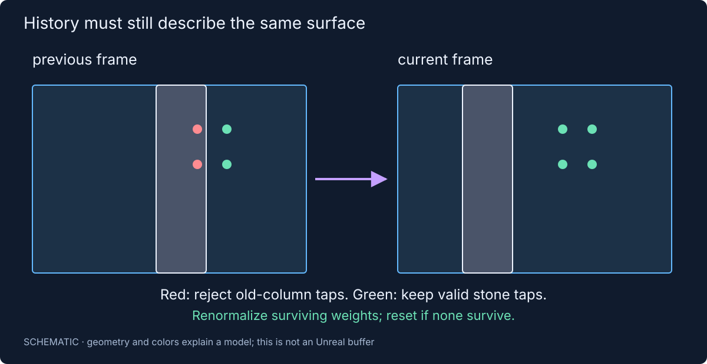
For valid history, a simplified blend is . A running-average weight reduces the influence of each new noisy estimate as N grows. Capping N bounds the latency. Fast-update flags, neighborhood clamps, invalid-current-sample handling, and rejection can alter this rule in the actual shader. The final per-pixel temporal accumulation follows integration; there are also separate histories used earlier for probe radiance and sampling guidance. Each history belongs to the stage that reads and updates it.
If history stores view-pre-exposed lighting, it also needs the ratio of current and previous pre-exposure. Reprojection can identify the correct point yet still produce a brightness jump if the exposure conversion is missing. Camera cuts, resolution changes, incompatible view rectangles, and changes to the representation require history invalidation or a defined resampling path.
The latency tradeoff in numbers. After a step from old value 0 to a constant new value 1, an exponential blend with a=0.1 gives 0.1, 0.19, 0.271, and after ten updates about 0.651. Stable accumulation intentionally remembers the old value. A still screenshot cannot reveal that delay. A camera-motion sequence and a light-change sequence test different causes of history failure.
Short-range occlusion supplies local geometric detail that sparse probes can miss. Ambient occlusion or a bent normal can modify the diffuse and specular reconstruction, but these are additional approximations with explicit ownership. Multiplying every lighting term by an arbitrary AO value can darken direct illumination twice. Match the selected shader path's AO application and show its buffer with the receiver geometry when diagnosing a contact.
Increase the new-sample weight to respond faster. For independent stationary input noise, the steady-state variance ratio is a/(2−a), obtained by solving v = (1−a)²v + a²σ². That assumption excludes correlated samples and changing illumination. The curve models a valid exponential history; Unreal's rejection and fast-update logic deliberately depart from it.
History masks, SH layouts, and exact normalization
The filtering reference and temporal reference retain the shader data contracts. The main source operations are sphere-average SH and irradiance generation, unit-albedo diffuse output, and per-tap validity and accumulation. These links identify the selected implementation, while the equations above explain why its scale and validity metadata are needed.
Sampling, tracing and reconstructing glossy reflections
Return to C, the polished test sphere. A diffuse probe can tolerate a broad angular reconstruction because the receiver integrates over a hemisphere. The polished sphere asks a much narrower question: what lies near the reflected direction? Low-order SH cannot retain the detailed image of Sponza's columns and balconies, so reflections need a dedicated route.

Classify the receivers before allocating ray work
Read roughness and shading-model data from the primary GBuffer. Classify tiles that require dedicated reflection work, allocate ray records, and generate reflected or microfacet-sampled directions with the information needed to interpret their sampling density. Trace the screen representation first when enabled, then compact unresolved rays into the selected world tracing path. Store hit information and radiance in buffers whose indices map back to the originating pixel or downsampled sample.
Begin with an explicit receiver-to-ray mapping. A tile containing a polished sphere and a rough stone wall may need dedicated rays for only some pixels. The classification mask says which receivers participate; the compacted work list says which records will be dispatched. A downsampled trace grid also needs its selected full-resolution sample offset. Without those mappings, a correct traced radiance can be reconstructed onto the wrong side of the sphere. Clear rejected entries to a declared invalid state before sparse writes, and pass the active count to subsequent indirect dispatches.
In the inspected tile classification shader, NeedRayTracedReflections sets the reflection bit after the material's smooth-bias adjustment. The later list builder turns these flags into indirect work lists. A set bit requests work. Trace results and lighting values appear in later resources.
Sampling the glossy integral
Let denote the incident field assigned to the scene-reflection branch after the direct-light ownership split. The target at a receiver is
LaTeX source
R(x,\omega_o)=\int f_{\rm spec}(x;\omega_i\!\to\!\omega_o)
L_{i,R}(x,\omega_i)\,\max(0,n\cdot\omega_i)\,d\sigma(\omega_i).A perfect mirror selects one direction, but a rough reflector has a distribution of contributing directions. Rays near the mirror direction can hit different columns, see different lights or escape to the sky. Blurring one mirror sample afterward loses those differences. Use the visible-normal microfacet sampler derived earlier to generate plausible half-vectors, reflect the outgoing direction, and convert the half-vector PDF into a directional PDF. Keep geometric-sidedness rejection and the perfect-specular limit explicit.
LaTeX source
\widehat R=\frac1N\sum_{k=1}^{N}
\frac{f_{\rm spec}(x;\omega_k\!\to\!\omega_o)
\widetilde L_{i,R}(x,\omega_k)\max(0,n\cdot\omega_k)}{p_\omega(\omega_k)}.This is the estimator a minimal reference implementation should make correct. The production renderer distributes factors across ray generation, trace payloads, resolve and final BRDF combination. To recover the final R, account for the factors still missing at each intermediate texture. It can also bias direction selection, limit ray intensity, downsample, and reuse nearby samples to control cost and variance. Each such choice needs a matching weight or an explicit approximation. A narrower sampling distribution without the corresponding PDF correction changes the brightness as well as the noise.
// Minimal reference contract; production buffer packing and weighting differ.
receiver = decode_primary_interaction(pixel)
(wi, pdf) = sample_specular_direction(receiver, random_sample)
if pdf <= 0 or unsupported_geometric_side(receiver, wi): return invalid
ray = {origin, wi, pixel, pdf, roughness, validity}
hit = trace_scene_representations(ray)
Li = evaluate_owned_incident_field(hit, ray)
sample = specular_bsdf(receiver, wi) * Li * positive_cosine / pdf
store(sample, hit.distance, receiver_geometry, validity)At the production storage boundary, Ray generation writes a direction, a signed cone/inverse-PDF field, and a trace distance. The rough branch uses visible-GGX sampling; its inverse-PDF field is clamped, and its sign also carries the first-person flag. Trace throughput is initialized separately to one. Ray generation stores the direction and inverse-PDF data here. The reference pseudocode combines those quantities with the BSDF in one step. The ordinary sampler also biases one random coordinate by 1 − GGXSamplingBias (default 0.9), without a separate correction for that truncation. The production path accepts bias to reduce variance relative to the reference microfacet estimator.
Carry unresolved rays across representations
The screen trace and world trace answer the same ray query with different geometric information. Preserve the ray's origin, direction, remaining interval, owner, and accepted-hit state when compacting unresolved work. An uncertain HZB crossing needs another visibility test. A ray that leaves the screen can still hit offscreen geometry. Only the selected continuation route can establish what the available world representation contains along that direction. The tracing chapter supplies the common intersection contract; reflection payloads additionally retain the information needed for hit shading and glossy reconstruction.
A hit distance serves two jobs. It identifies the secondary intersection for shading, and it helps the reconstruction reason about parallax and footprint. A nearby reflected lamp and the distant sky can have similar colors while requiring very different history correspondences. Give misses an explicit validity flag and environment policy so a distant hit remains distinguishable. Preserve those states through resolve even when both routes eventually produce RGB.
There is also a second kind of compaction: the compaction modes select misses for continuation, or select hits whose material record requests another lighting pass. To interpret a compacted entry, read the queue’s selection predicate and payload. Some queues also carry hits. Screen tracing also consumes a previous SceneColor sample, so its returned color already carries a temporal and shading approximation in addition to screen-space geometry limitations.
Resolve sparse samples without dragging reflections through time
Resolve these sparse samples into a specular signal using geometry, roughness, hit distance, and temporal information. A glossy reflection can have a very different apparent motion from its primary surface; blindly reusing the surface's diffuse history rule can drag a reflection across the object. Distance and roughness inform reconstruction footprints, while disocclusions and mismatched hits must reduce reuse.
Consider a smooth mirror fixed to the wall while the camera moves sideways. The wall point has one geometric motion correspondence, but the image of a column inside the mirror shifts according to the reflected view. Reprojecting only the wall can therefore find a previous pixel with the wrong reflected column. At a rough surface the response covers a wider angular neighborhood, so reconstruction can tolerate a broader footprint; at a sharp surface that same reuse erases detail. Geometry validation and roughness-dependent weighting determine which radiance samples enter the estimate.
Build reconstruction in stages. First display independent current samples with validity and hit distance. Then resolve to the output grid using known receiver mappings and compatibility weights. Add history reprojection and explicit rejection, keeping the current estimate available as a fallback. Finally add the selected variance reduction and neighborhood constraints. For each stage, retain whether the signal is raw incident radiance, a partially weighted estimate, or an already reconstructed specular contribution, and convert previous/current pre-exposure consistently. Applying base color or Fresnel again at composition would weight the reflection twice.
In the production resolve, the sample weight is the microfacet distribution value divided by the stored ray PDF. It applies weights to accepted center and neighbor samples, then divides accumulated lighting by accumulated weight. This reconstruction normalizes partially weighted radiance. The per-path estimator above applies the full BSDF weight. It still needs the receiver's environment-BRDF factor at composition. The ordinary opaque composition branch blends rough and traced signals and then multiplies by EnvBRDF; clear coat takes a separate layered branch.
Conditional compilation decides which rejection tests run. In this version, the proposed normal/roughness lobe-confidence test is disabled by LOBE_CONFIDENCE=0 in the temporal shader. The hit-history plane-depth test is also disabled. Active logic instead uses validity and depth/distance checks, neighborhood clamping, and a choice between surface and reflected-hit histories based on neighborhood error. Roughness still controls accumulation limits, and the separate spatial filter uses a roughness-dependent radius and normal acceptance cone. Attribute the rejection here to the spatial filter. The temporal lobe test was inactive.
Separate the ray hit from its lighting
At a secondary hit, Surface Cache mode returns a cheap effective diffuse response. Hit-lighting modes evaluate selected material and lighting terms at the actual hit. They can recover directional specular effects that a direction-independent card cannot represent. However, hit lighting is still a real-time estimator with finite tracing, selected source evaluation, and continued cache reuse for some indirect terms.
Consider a polished sphere reflecting another metallic object. Correct triangle visibility only identifies the second object. If its lighting comes from a fully rough card response, its reflected appearance can still differ from the path tracer. Tracing and secondary shading therefore need separate treatment in both code and comparisons.
The hardware trace's completion logic decides whether a hit still requires hit lighting. Successful scene-color reuse can complete a hit; valid radiance-cache coverage can complete a continuation. Sky is added on a remaining miss when enabled, while the optional skylight-leaking term is a separate artistic approximation that can also affect hits. Intensity clamping controls fireflies. None of those operations establishes a fully recursive reference solution. The capture at C used Surface Cache lighting. Material hit lighting follows a separate route.


The material-detail camera makes the angular question visible without changing the hero view used for the atrium's other diagnostics. The three metal spheres share linear base color (1, 0.766, 0.336) and metallic value 1; the three gray spheres share base color (0.8, 0.8, 0.8) and metallic value 0. Their different roughness values change the scattering integral. The surrounding stone and cloth provide recognizable structures in that integral.
Inspect the reflected signal independently of the material


At C, the captured resolved specular signal is (0.0180664,0.0135498,0.0087891), while the later specular-indirect output is (0.0166016,0.0144043,0.0085449), both view-pre-exposed. The resolved hit depth is 273.75 cm. These values and their distinct versions are retained in the reflection record. The changes between these stages come from reconstruction and history processing. Base color enters through its own material term.
Even the history counter needs its own decode contract. This reflection path stores count/32 in a UNORM target. C’s raw byte 96 decodes to (96/255) × 32 ≈ 12.047 effective accumulated frames. Spatial and temporal interpolation can make that value nonintegral. The screen-probe history uses a different packed format, with four bits for fast-update amount and four for a normalized count. Check the encoding of each resource before decoding it.
Blending overlapping specular estimates
For sufficiently rough surfaces, the screen-probe path supplies a rough specular approximation. The dedicated traced-reflection path covers lower roughness. Where their ranges overlap, they estimate overlapping illumination and need a blend. In the ordinary opaque Lumen branch,
LaTeX source
\alpha_r=\operatorname{saturate}\left(\frac{r_{\max}-r}{\Delta r}\right),\qquad
R=(1-\alpha_r)R_{\rm rough}+\alpha_rR_{\rm traced}.The inspected default post-process threshold is 0.4 with a default fade length of 0.1; the capture manifest records the actual overrides. At roughness 0.2 the ordinary formula gives fully traced weight; at 0.35 it gives half; at 0.5 it gives none. These are workload and reconstruction decisions. A material can still reflect light on either side of the 0.4 roughness threshold. Clear coat, backface-diffuse materials, SSR, water, and translucent front layers have other branches.
With the sphere roughness held fixed, changing the tracing cutoff selects how the renderer estimates the same physical reflection. Changing material roughness with the cutoff fixed alters the target integral. Keeping these tests separate prevents a quality-setting effect from being explained as a material law.
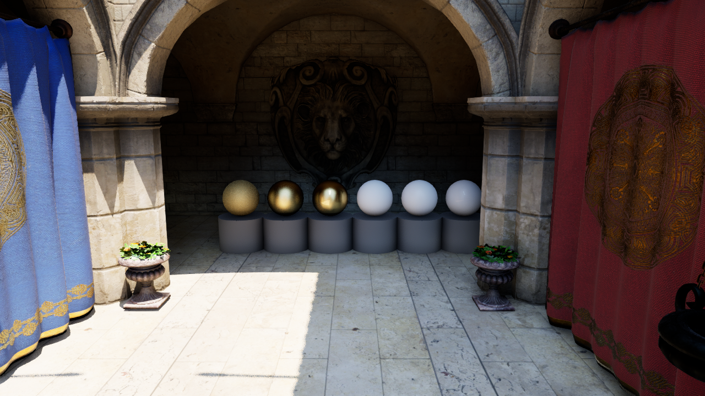
The analytic direct-light pass already evaluates the material's specular response to its owned lights. Exclude direct connections already evaluated elsewhere when composing the dedicated scene reflection. The final composition follows the source partition, lobe partition, and representation blend together.
Reflection state and mode-specific implementation
The reflection reference documents tile classification, downsample factors, trace hit/throughput/background state, fallback, resolve, and history. The ordinary blend factor is defined in LumenReflectionsCombine.ush. The composition reference explains which signals are already BRDF weighted and which still need the receiver material.
Assemble one frame and account for every contribution
The renderer now contains several RGB images with very different meanings. Some hold primary material data, some incoming radiance, some irradiance, and some an already multiplied material response. Some use cache pre-exposure and others view pre-exposure. A unit or ownership mistake here shifts the whole image systematically.
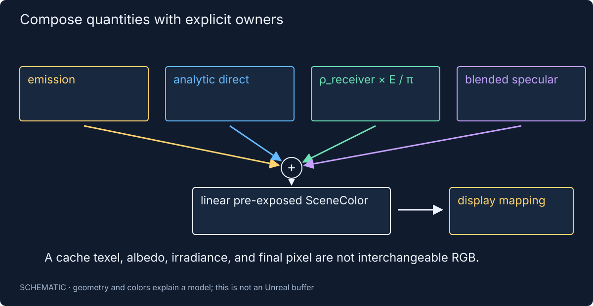
For the simplified opaque Default Lit configuration, the remaining diffuse response is . Multiply it by the receiver diffuse color. The reflected scene specular signal is chosen or blended according to its route, then receives the corresponding specular response through the composition stage's environment-BRDF factor. Add these to the correctly owned emissive and analytic-direct contributions in the same view-pre-exposed space. The precise production composite also contains occlusion, layered-material, reflection-scaling, and platform branches documented in the reference.
Quantities that must remain distinct through composition
| Signal | Meaning before display | Next operation |
|---|---|---|
| Card direct/indirect lighting | Cache-pre-exposed irradiance at a secondary surface | Multiply by that surface's effective albedo/π and add its emission |
| Card final lighting | Cache-pre-exposed approximate outgoing radiance | Address and validate the hit, convert exposure, return incident radiance to a receiver query |
| Screen-probe diffuse output | View-pre-exposed unit-albedo response E/π | Multiply by the primary receiver's diffuse color once |
| Rough and dedicated scene specular | Overlapping specular estimates with mode-specific response weighting | Blend according to roughness and the selected reflection branch, then apply the receiver environment-BRDF factor where required |
| SceneColor | Combined linear, view-pre-exposed radiance-like RGB | Undo pre-exposure as required, apply exposure/color processing, then display mapping |
The GBuffer supplies material inputs such as albedo. The Surface Cache stores indirect irradiance on represented surfaces. Screen probes reconstruct a diffuse response for the pixel, and a world probe stores directional radiance that still needs integration to yield irradiance. These distinctions explain why the buffer views identify units, encoding, exposure, coordinate mapping, producer, and validity alongside their displayed colors.
The dependency graph an implementation must schedule
Build scene representations and capture dirty card material pages. Build or update tracing acceleration structures and distance fields. Update selected card direct lighting and radiosity with their intervening final-lighting combines. Rasterize the primary depth/material state and construct the screen hierarchies and visible-light shadow data. Place screen probes and build their guides. Mark and update demanded world-cache probes, trace and filter incoming lighting, integrate at receivers, and apply valid history. Trace and reconstruct the selected reflection work. Compose the owned lighting contributions and run the display pipeline.
Some of these tasks can overlap. Unreal's render graph handles resource dependencies, and the renderer separates asynchronous gather work from later composition to overlap eligible work with direct lighting. C++ records pass order. Measure GPU execution time with GPU timestamps. To profile the system, inspect dispatch dimensions, active lists, resource sizes, queue dependencies, and actual GPU timestamps. Sum mutually exclusive GPU intervals. Use comparable instrumentation for both frames so capture overhead stays out of the algorithm comparison.
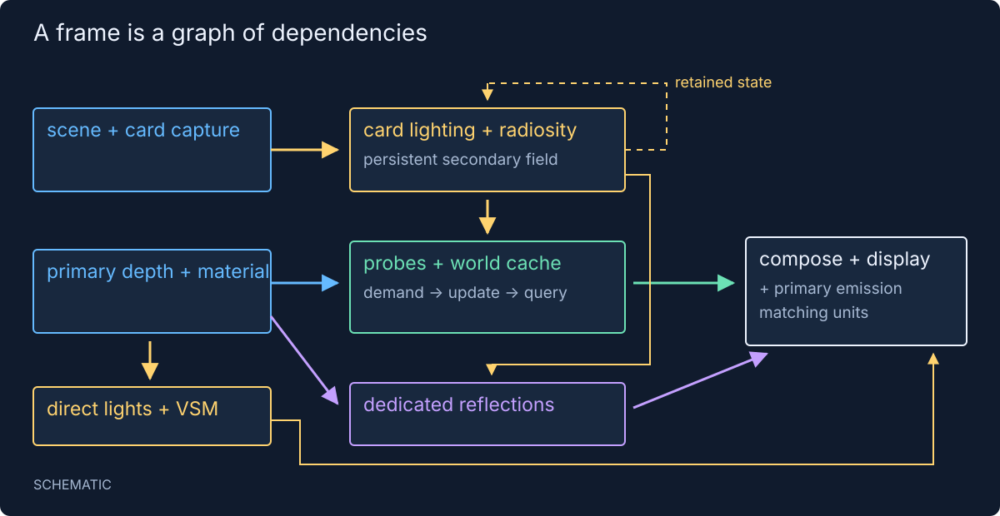
A practical implementation ladder
Build a correct subset before adding reuse. Begin with rasterized primary surfaces plus exact direct shadow rays and a reference path tracer. Add a single diffuse surface cache with known coordinates; compare its hit response against the reference at the same point. Add virtual pages only after the nonvirtual lookup is correct. Add sparse screen probes on a flat surface, then adaptive placement and geometry-aware interpolation. Add a world cache for far queries, then depth-aware interpolation. Add temporal history last, after a history-free frame is interpretable. Finally add dedicated glossy tracing and the roughness transition. This order leaves a working comparison at each change.
For each persistent resource, answer the same implementation questions: who allocates it, who initializes it, what quantity it stores, how indices map to geometry or directions, which bits indicate validity, which pass writes the current version, which consumers read it, which event invalidates it, and what happens when its budget is exhausted. Omitting one of these can produce an image that looks correct only while the camera is stationary.
The engine details are numerous because these contracts interact; the transport equation stays fixed. A new optimization should state which contract it replaces and what error it introduces, so its result can be compared with the reference path tracer it approximates.
Testing lighting predictions in Sponza
An overly bright cache can hide excessive occlusion. Exposure can hide an indirect contribution that is missing altogether. To test one effect in Sponza, keep the saved camera, lens, materials, lights and display transform fixed. Change one mechanism and predict what should change in the capture.
Separate a finite reference from an exact answer
The path-traced images estimate the same scene with a different algorithm. A 1,024-sample image still contains sampling error, and an eight-bounce limit omits longer paths. More samples reduce sampling error for the chosen path depth, material model and atmosphere settings. Differences in any of those choices can persist at convergence. Comparing the 256- and 1,024-sample results helps identify residual reference noise. If the larger accumulation reuses the smaller one’s samples, their errors are correlated. An independent confidence interval requires independent measurements.
For a pixel or receiver region, distinguish the quantity being compared. A scene-linear radiance difference measures a lighting discrepancy under the engine's stated RGB calibration. A difference between the published PNG values measures a discrepancy after exposure, tone mapping, and display encoding. Both can be useful, but they answer different questions. A highlight compressed by the tone mapper can produce a small PNG difference even when the linear difference is large.
Use the same scale for both sides of a comparison. For an error image, state its sign convention, channel combination, and display range. A per-image minimum/maximum stretch destroys the meaning of a brightness comparison. For a diagnostic atlas, a separately declared logarithmic or false-color transform can reveal structure, provided a reader can recover the original value, validity, and address. Verify the camera invocation from the capture metadata even when the resource decodes and previews correctly.
Predict the result of each controlled change
Disable final gathering. Compare directly illuminated stone with the shaded arcade. The primary analytic-light and shadow calculation should remain identifiable while the diffuse interreflection term changes. Dedicated scene reflections and analytic specular highlights have separate controls. The control removes both diffuse GI and probe-based rough specular, so both signals contribute to the image difference. In composition, inspect which reflection contributions survive on a shiny object after the selected pass is disabled.


The control sets r.Lumen.ScreenProbeGather=0 while retaining the Lumen GI pipeline and dedicated reflections. In this implementation, that branch returns black diffuse textures and a cleared rough-specular texture. Disabling r.Lumen.DiffuseIndirect.Allow instead can select a different lighting path, including a different treatment of sky illumination; its result cannot be interpreted as subtracting one positive term from the baseline. Before interpreting a console-variable comparison, inspect the source boundary the variable controls.
Disable screen traces. Newly exposed world-trace and cache behavior should agree where both representations have adequate geometry, material, and lighting support. Differences near a silhouette or an off-screen reflector point to a representation or validity decision. A screen hit and a world hit may obtain lighting from different sources. The comparison changes both the intersection route and potentially the shading at the hit. Follow the trace route before assigning the discrepancy to one subsystem.
Change reflection routing while retaining material roughness. Changing the dedicated-reflection threshold tests which estimator supplies the response. Changing roughness at the same time changes the physical scattering problem and confounds that test. Similarly, compare cache shading and hit lighting with the same geometry and camera: material evaluation, directional shading, and cached illumination can differ even when both routes intersect the same triangle. Use the records beside the reflection discussion to identify the selected branch.
Change a light while keeping the camera still. A delayed indirect response can come from surface-cache updates, world-cache updates, probe filtering, or final temporal reconstruction. Record the actual update or render-frame identity, and inspect the intermediate signal that each stage owns. Use the renderer’s update index to align screenshots with simulation steps. Image differences can shrink even when cached lighting approaches a biased solution.

Actual Unreal final images with the same exposure and display path.
The sequence measures update latency across the combined renderer. Isolating the final temporal filter would require a separate control. The Sun also participates in the captured sky environment, and multiple lighting stores can update after the change. The sequence record identifies draws 1, 2, 4, 8, 16, 32, and 64 and the engine frame counter for each. The capture bridge can issue several scene renders within one engine frame. Converting 64 draws to seconds requires independent timing. The separate Lumen Scene direct and indirect sequences show cached lighting. To recover primary direct light or isolate a particular path length, use a measurement specific to that quantity.
Display-space observation ledger and its limits
| Bridge draw after change | Recorded engine frame | Mean display luma, 0–255 |
|---|---|---|
| 1 | 186 | 61.97 |
| 2 | 187 | 60.79 |
| 4 | 190 | 57.43 |
| 8 | 195 | 53.91 |
| 16 | 204 | 52.07 |
| 32 | 221 | 40.24 |
| 64 | 254 | 31.48 |
The full-image statistic uses 0.2126R + 0.7152G + 0.0722B on the captured PNG channels. This display-space summary measures the visible change across the image. Radiometric error and per-pixel convergence require separate measurements. The underlying sequence retains all images and settings so local behavior can be inspected separately.
Read an error in the order the computation produced it
Start with the camera and primary visibility: confirm the receiver's depth, normal, material, and active view rectangle. Then inspect direct-light visibility and its contribution. From there, follow the indirect query through probe owner, direction or directional cell, accepted trace route, hit or cache lookup, radiance scale, and integration weight. Finish with spatial validity and reprojected history. A wrong normal near the start can produce a convincing sequence of internally consistent later buffers, while a history failure at the end can hide correct current-frame lighting.
For a numerical walkthrough, record the full address chain. When views or versions share a resource name, match the invocation and resource version as well. Use the scene invocation, producing pass, resource version, mip/slice, stored format, row or element stride, coordinate, and validity state. Decode pre-exposure before comparing quantities from different lighting stores. When the dump omits a shader-local branch or sample choice, state which inputs the replay uses and how you chose them. Several input choices can produce the same output. Confirm the dispatched shader’s choice with an execution record if one exists.
Reproducing the examples and finding the engine code
The small numerical experiments are independent checks of the mathematical contracts. The code is original, uses a fixed random seed where sampling is involved, and distinguishes analytic values from Monte Carlo estimates. Run python Scripts/Docs/unreal_articles/labs/lumen-course/generate.py --check to verify the published diagrams and arithmetic. Their JSON results identify the expected value and tolerance for each check. GPU performance requires a timed GPU run.
The Sponza scene and its provenance
Unreal rendered the Khronos Sponza glTF asset at revision 8f492390 after import. The input contains 103 primitives, 262,267 triangles, 25 materials, and 69 texture images. The download record preserves the source-file hashes. Upstream credits and terms are retained in the model attribution and license record; the model's listed Cryengine Limited License is distinct from the CC-BY-4.0 license on its metadocumentation. The source asset bundle comes from the pinned upstream location.
For this scene, each primitive becomes a separate static mesh with a local pivot. Recenter positions around the primitive's source bounding-box center c, preserve the glTF node scale 0.008, import the local geometry, then place the actor at 0.8(c.x, c.z, c.y) centimetres. Unreal's metre-to-centimetre conversion and the node scale give local positions 0.8(p − c), with the same axis swap. Adding the actor translation recovers 0.8p. This keeps the original world geometry while giving each mesh a useful local domain for distance fields and cards. Reusing the original indices, UVs, normals, tangents, and material associations is essential; recreating only the silhouette would change the transport problem. These imported static meshes have Nanite disabled. Comparing Nanite fallback with native ray-tracing geometry would require a different setup.
The saved map is /Game/Labs/SponzaTeaching. The chart added to the map uses six spheres of radius 22 cm, centered at z=60 cm on 40 cm pedestals at x=850 cm. Its three roughness values are 0.08, 0.30, and 0.65, used for both a dielectric and a gold-colored metal. This gives narrow and broad scattering responses without changing the atrium's architecture.
Exact scene and rendering configuration
| Quantity | Recorded configuration |
|---|---|
| Engine source lineage | 5.8.1 local instrumented build; base 71fe36aac5a8df5ccd66c763ffc902b29b6a9c43 |
| Hero view | 1280 × 720; location (−850, 0, 90) cm; pitch 13°, yaw/roll 0°; horizontal FOV 70° |
| Material-detail view | Location (250, 0, 168) cm; pitch −10.203974°, yaw/roll 0°; horizontal FOV 70.005981° |
| Sun | 80,000 lux, 5500 K; pitch −75°, yaw −35°; source angle 0.5357° |
| Sky | Sky Atmosphere and real-time captured SkyLight; SkyLight intensity scale 16 |
| Exposure | EV100 11, zero exposure bias; histogram minimum and maximum both pinned to 11 |
| Lumen baseline | Hardware tracing on; both screen-trace routes on; Far Field off; Surface Cache atlas size 4096 |
| Path reference | Observed 256/1024 accumulation samples; eight-bounce limit; denoiser off; filter width 3; MIS mode 2 with compensation enabled |
| Path-reference sky route | ReferenceAtmosphere 0; VisibleLights 2; SkylightCaching 0; captured SkyLight environment |
| Display controls | Screen percentage 100; AA method 2; motion blur, bloom, depth of field, and volumetric fog disabled |
The machine-readable configuration records the settings. The separate run records contain readbacks from the actual viewport and observed sample indices. A configuration file records intent; a readback shows what the capture actually used.
Inspecting the captured frame
The scene-based temporal controls beside cards and radiosity, screen probes, and the world-cache discussion use thirteen additional native observations. They retain the captured camera transforms, resource versions, signed SH coefficients, allocation identities, and update counters. The temporal archive and decoder instructions preserve all 23,923 files in those selected-resource dumps: 27,141,983,250 native bytes stored in a 1,957,882,466-byte lossless package. Each visual uses its matching native screenshot and computes placement from the accompanying scene data.
The screen-probe, card/world-cache, and radiosity decoders retain their complete numerical arrays beside the lightweight figures. The independent screen-SH check compares 298,998 published coefficients with their native payloads, with no difference beyond the declared six-decimal publication rounding. The controls show the recorded update indices. Read each frame number within its own capture sequence. Synchronizing two runs requires a shared event.
Open the Sponza frame explorer to follow the actual resource versions used by this course. Start with the presented scene invocation, graph index 3, then choose the pass named beside the numerical example. A resource selection exposes formats, extent, mip/slice, addressing, producer and consumer links, captured parameters, raw channels, packed fields, and the payload's verification identity. Select the chunks for the resources you want to inspect. The full reconstruction would require 95 GB.
The data directory and reproduction instructions preserve every available capture file. SHA-256 deduplication and gzip reduce the 95,161,036,158 payload bytes to a complete 657,904,432-byte package including metadata. Independent reconstruction compared all 11,446 payloads and 1,012 native copies against their sources with zero mismatches. The package preserves every byte the dump exported. Shader-local values outside that export remain unavailable.
Capture coverage and exact boundaries of the evidence
| Record | Retained evidence |
|---|---|
| Graph | 886 passes across three scene invocations and one Slate graph; final scene passes 593–885 |
| Resource identities | 1,541 native descriptors, normalized to 1,529 resource identities; duplicate descriptor records remain preserved |
| Addressing and readback | 6,675 subresource layouts; 10,404 completion records, all marked Dumped |
| Parameters | 803 native parameter-binding records; 1,128 structure payloads; 521 native uniform records with 35,648 bindings |
| Runtime configuration | 9,262 console variables, captured view transforms, engine/module identities, and saved map hash |
| Explicit gaps | 2,913 coverage records; no missing packaged bytes, but execution observability remains incomplete |
There are no per-pass draw counts. Eighty parameterless passes and three ShaderPrint passes lack native binding blocks. For 1,297 buffer versions, bytes exist without a matching readback-completion record; their identity at the owning pass is therefore unproved. Native uniform traversal records graph construction. A uniform’s execution-time value may require a later observation. Nine ray-tracing scene-buffer descriptors carry a staging-copy warning. Exclude them when looking for usable acceleration structures. Shader-local values and unrecorded random choices require a declared replay or additional instrumentation. Each of these limits appears in the coverage ledger.
The numerical examples preserve the distinction between captured values and replayed operations. The source/version/address chain is recorded for every sampled operand. A replay can validate arithmetic or a representation against an output, but it cannot retroactively record an unobserved thread-local branch. The original capture analysis is retained alongside a documented correction to two packed-view matrix labels. The receiver reconstruction uses the corrected layout.
The capture and decoder sources preserve the import, authoring, final configuration, controlled captures, and CPU replay logic. Capture scripts record this workstation's bridge and paths. To reproduce on another installation, supply the engine/project paths, import the pinned source asset, apply the saved rendering configuration, verify the active camera and sample-index readbacks, and only then compare results. Use the captured final configuration to check which authoring defaults were active. The package can be decoded without rerunning Unreal.
The implementation reference preserves the controlled-room experiment and its complete available resource package. Its frame explorer exposes pass/resource identities, versions, formats, extents, subresources, stored-format channels, packed bits, producer/consumer relationships, and captured parameters. Its coverage records identify missing semantic information and limits on proving native-resource timing. A raw capture cannot reveal an unrecorded shader-local intermediate; you must replay that value from recorded inputs or capture it with additional instrumentation. A preview image never substitutes for the underlying validity and addressing data.
The course's source-range record freezes the exact linked shader and C++ ranges with line-normalized SHA-256 hashes. These linked files were unchanged relative to the stated engine base commit when inspected. The capture uses a local instrumented build; its own manifest records the executable and module identities. These are separate facts: source lineage, compiled binary identity, and captured runtime settings.
The teaching order takes inspiration from Physically Based Rendering, fourth edition and Real-Time Rendering, fourth edition: connect an observable problem to a model, make the model executable, then test the consequence of changing the implementation. The prose, diagrams, and numerical examples here are original. For rigorous light-to-sensor path notation and mixed-measure sampling, continue with Eric Veach's thesis. For the production implementation, use the pinned Unreal source links beside each mechanism; newer engine revisions can change layouts, defaults, and mode selection.